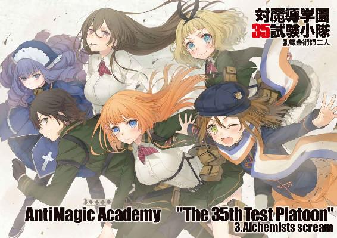
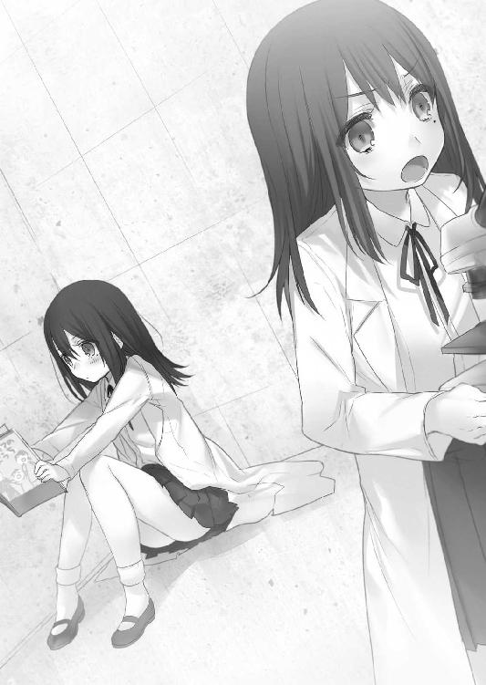
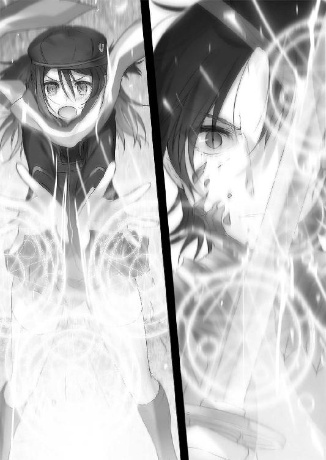

| 対魔導学園35試験小隊 3.錬金術師二人<対魔導学園35試験小隊> (富士見ファンタジア文庫) | |
| 柳実 冬貴 | |
| (2013) | |


対魔導学園35試験小隊
３．錬金術師二人
柳実冬貴

富士見ファンタジア文庫
本作品の全部または一部を無断で複製、転載、配信、送信したり、ホームページ上に転載することを禁止します。また、本作品の内容を無断で改変、改ざん等を行うことも禁止します。
本作品購入時にご承諾いただいた規約により、有償・無償にかかわらず本作品を第三者に譲渡することはできません。
本作品を示すサムネイルなどのイメージ画像は、再ダウンロード時に予告なく変更される場合があります。
本作品は縦書きでレイアウトされています。
また、ご覧になるリーディングシステムにより、表示の差が認められることがあります。
口絵・本文イラスト 切符
プロローグ
トーナメント襲撃事件から数日後。
「何か用ですか？」
理事長室に入ってくるなり、斑鳩はだるそうな顔を颯月に向けて問うた。
理事長に対してこのような言葉遣いをする生徒は、斑鳩以外にはいない。颯月も慣れたものなので、いつもなら剽軽に笑って許していたのだが、今回は状況が違った。
颯月は神妙な面持ちでデスクに鎮座したまま、探るような目で斑鳩を見ている。
何よりも状況を緊迫させているのは、横に控えている鐵隼人の存在だ。隼人の表情は無に近いが、眼光だけはまるで敵でも見ているかのように鋭い。
普通の生徒ならばすくみ上がってしまうような場面のはずなのだが、斑鳩は違った。
のし掛かる緊迫感をものともせず、涼しい顔で髪の毛の先を指先で遊ばせていた。
「ご足労すまないね。さっそくで申し訳ないけど、手短に、簡潔に問うよ」
「助かります」
「君も手短に、簡潔に、何より正直に答えてほしい」
「既に長いですよ」
「......この写真に映っているものに、見覚えはあるかい？」
颯月は、二枚の写真をデスクに滑らせて、斑鳩の方へ寄せる。
斑鳩は若干目を細めながらも、その写真を手に取った。
写真には、胸部を大砲か何かで破壊されたドラグーンが映っている。
中身は無人。アップにされているのは、胸部のコア部分にある、ほぼ炭化している何かの部品だった。原形を留めていないため判別はつかないが、恐らくコアユニットの外装及び内部機器だろうと斑鳩は予測した。
「この前のトーナメントで、死霊術師によって魔法干渉を受けたドラグーンの残骸さ」
「見ればわかります」
「知っているとは思うが、審問会が扱うドラグーンは、外部装甲をミスリル鉱以上の抗魔素材で覆うことが義務づけられている。敵の乗っ取りを阻止するための措置だ。内部機器に干渉すれば、高位魔女であれば簡単にシステムの主導権を奪えるからね」
「常識でしょ」
「だが今回トーナメントで使用されたドラグーンには、すでに内部に何らかの魔法干渉を受けた痕跡があった。これにより死霊術師の遠隔操作を可能にされてしまったわけだ」
いったいどうしてこんなことになってしまったんだろうね、と颯月は付け加える。
「学園を襲った英雄、アーサー王も素対は英雄召喚によるものではなく、ゴーレムに魂を定着させているだけに過ぎなかった。あのゴーレムも不思議なものでね、どういうわけかドラグーンの技術が採用されているようだったんだ。何よりあの魔導遺産......エクスカリバーには、君も見覚えがあったのではないかな？」
「素対は試作型のレールガン。改良はされてるけど、型はほとんど一緒だったわね。あんなもの、それ系の雑誌読んでれば誰でも知ってます。というか、いちいち回りくどいと思います。簡潔にと言ったのはそっちでは？」
あくまで強気に、というよりは、本心から面倒くさそうに斑鳩は言った。
いつもならば軽口を返す颯月だったが、今回ばかりは真面目に目を細めた。
「......君は、何か知らないかな？」
颯月の探るような目つきに、斑鳩はうんざりした。
「どういう意味ですか？」
「君は仮にも杉波の人間だ。一一歳まではアルケミスト社で研修したんだろう？」
「............」
「『作られた天才』......君はその一人だから、何か知らないかと思ってここに呼んだわけさ」
『作られた天才』、と言われて、斑鳩はため息を吐く。
アルケミスト社の創設者は数百年前に出現した錬金術師だと言われている。異端審問会発足当時、魔女に対する取り締まりが本格化し始めた頃、秘密裏に実験を行っていた錬金術師集団を捕縛。魔法と科学の混合を目指していた彼らに対する処罰を保留とし、比較的思想が科学寄りであったことから、アルケミストと異端審問会は協力関係になったと、歴史書には記されていた。
アルケミスト社は現代でも科学寄りに発展を遂げ、一大企業として名を馳せている。
しかし、世間で問題視されているのはいまだに変わらず、その反人道的な研究には批判の声も多い。
そのうちの一つ、公にされていないものの中に、デザイナーベビーがある。
より優秀な研究員を生み出すために、彼らは古くから遺伝子操作を行ってきた。杉波という姓は、家系ではなく、アルケミスト社に従事する特殊な研究員、『作られた天才』達の総称的な意味合いが強い。
斑鳩は、その『作られた天才』の一人だった。
「当時の情勢でもなんでもいい。知っていることを話してほしい」
「そのことについては全部話したはずですけど？......どんなに私が情報を提供しても、異端審問会は政治的な理由を盾にして動きませんでしたよね？」
損得勘定で動くゲスが......と、斑鳩は内心で悪態を吐く。
「耳が痛いね。でも私は、君がまだ何か重要なことを話していないような気がしてならないんだ」
今まで真剣な表情だった颯月が、くふりといつもの含みのある笑みを浮かべた。
思わず、斑鳩は舌打ちをしそうになった。
「知っていることは......もうありませんよ。失礼します」
言って、写真をデスクに放り投げてから、踵を返そうとする。
そこで、
「──まだ終わってないよ。二枚目の写真を見なさい」
颯月が、指先を写真に向けてそう命令した。
斑鳩はうざったそうに、デスクの写真に視線を落とした。
「......なんです、これ？ ぶれぶれでよくわからないんですけど」
「すまないね。潜入工作中の隠密が急ぎで撮影したバックアップだから、画質も最悪でね。本人が死亡してしまったから回収にも苦労したんだ......でもその甲斐はあった」
颯月は手に顎をのせ、少し頭を傾けながら、斑鳩をじっと見やる。
「──『亜人結晶』だよ。聞いたことくらいあるだろう？ 歴とした魔導遺産の一種さ」
斑鳩は、わずかに頷く。
「主に幻想生物の身体の一部や、細胞そのものを特殊抗魔素材ブラックマテリアルに封じ込め、魔力の拡散と老朽化を停止させたものだ。停止といっても時間を止めているわけではないから、長い年月が経っても完全な状態を維持している亜人結晶はそうそう無い」
「............」
「昔は好事家や富豪が好んで集めていたりしてね。嗜好品としてそうとうな値がついていたものだよ。しかし時代も変わり、技術が進歩した現代では......ものによっては最上級に危険な代物だ」
写真を手元に持ってくると、トンッと指で亜人結晶を叩く。
「これは、ダークエルフの亜人結晶さ。アルケミスト社第五兵器開発研究所の、レベル６の研究施設に保管されていたものらしい」
「アルケミストは兵器製造会社ですよ。遥か昔の話ならまだしも、生物工学は専門外ですって」
「そうさ？ だから、彼らはこれを使って兵器を作ろうとしているのさ。エルフを復活させて、兵器運用しようって魂胆だろう。これは明らかな法律違反だ」
それは、あまりに馬鹿げた発想だった。
エルフという幻想生物は、一五〇年前の魔女狩り戦争を最後に、絶滅が確認されている。
彼らエルフは、魔法陣、詠唱、術式無しで息を吸うように魔法を使用することができた。人間が数時間かけて発動させる大魔法ですら、一瞬で使用することが可能であり、恐らくはドラゴンと並んで危険と見なされている幻想生物である。
英雄を召喚した時と同じように、魔女達が最後のダークエルフを捕縛し、洗脳をほどこして人類を攻撃させた話は、あまりにも有名だった。
魔女狩り戦争中にそのダークエルフは死に絶えたが、人類に与えた損害は計り知れない。
その一匹のおかげで、ニューヨーク、インドネシア、パリ、北海道、と呼ばれていた土地らは、完全に消滅してしまった。
そんな化け物を復活させるなど、危険極まる行為だ。
「隠密が命を賭して手に入れた情報には、アルケミスト社がエルフ復元の実験に成功間近とあった。ただ......」
「............」
「......完璧な状態で残っている細胞が、どうやら彼らの手元に無いらしい。収集に励んだようだが、結局見つからず終い。なんでも、四年ほど前に、最も状態の良かった亜人結晶が何者かに持ち出され、紛失したという話が資料にあったそうだ」
ちらり、と颯月は斑鳩の顔を覗き込む。
なんか知らない？ とでも言いたげだ。
斑鳩はあきれ顔で首を振る。
「実にばかばかしい話だわ。幻想生物復元の成功例はありませんよ。科学的見地から見ても不可能です。亜人結晶が危険視されているのは、内部にため込まれた魔力量が甚大だからです。疲れたわ......舌が攣りそう。もういいでしょう？」
言って、斑鳩は勝手に理事長室を出て行った。
残された颯月と隼人は、しばしそのまま佇んだが、深く目を閉じると、
「黒ですね」
「だね。いまだにアルケミストと通じているのは間違いない。トーナメント襲撃時に彼女が用意して桜花に持たせたあのシールド......あれ、異端審問会じゃ作れないんだよねぇ」
「ブルークリスタルの加工技術はアルケミスト社が独占しています。何よりあんな希少な素材を集めるのは学生には不可能。元々、違法改造や違法素材を惜しげもなく使っていた生徒です......即刻捕縛することを提案します」
ぎろりと颯月を睨みつけて、隼人が進言する。
颯月は隼人の進言を無視して、椅子に背を預けてデスクに足をのせた。
頭の後ろに両手を置いて、ニヤニヤと笑いながら口の端をつり上げる。
「あーあ、いやだな、うちの生徒から裏切り者が出るなんて。私は理事長として悲しいよ」
「......先にご無礼を謝ります。わりに、楽しそうに見えますが？」
「えー？ そんなことないさ。愛する生徒達の中から裏切り者が出たんだよ？ 嬉しいわけないじゃないか」
「心中お察しします。ですが、我々に容赦は無用。疑わしきは徹底的に調査されるのがよろしいかと存じます」
「君はどうするのが正しいと思うかね？」
「杉波を連行後、尋問なり拷問なりで情報を吐かせるのが最善ではないでしょうか。交渉材料を得るにはそれで十分事足りるかと」
隼人の言葉を鼻で笑いながら、颯月は彼に視線を向けた。
隼人はさきほどと同じく颯月を睨みつけたままだった。
颯月の思惑を察せないほど、隼人は愚かではない。
颯月はエルフの件と斑鳩の関連性を探り出し、アルケミストとの協定を確固たるものにするための脅迫材料を欲しているのだ。
幻想教団との癒着がほぼ決定的なものとなっているため、アルケミスト側の弱みを握って、強制的にこちら側へ付かざるを得ない状況を作り出す。
（......いや）
隼人は目を細め、最悪のケースを想定した。
颯月が、アルケミストとの戦争も辞さない可能性もある。
アルケミストを強襲して潰し、研究員をこちら側に引き込めれば、技術だけを審問会に取り入れることが可能なのだ。
協定維持ではなく、本当の目的は侵略。
この男ならば、あり得ない話ではなかった。
「物騒な上につまらない提案だね」
颯月は首を振りながら、隼人の提案を突っぱねた。
「ここは泳がせるべきじゃないかな？ こちらがエルフの実験に勘づいたと杉波君が知ったのだから、近々動くはずだ」
「............」
「彼女には監視をつけてくれ。なるたけ優秀な人員で頼むよ」
泳がせると言った颯月の言葉を、吟味する。
確固たる脅迫材料を得る、もしくは強制捜査を行い、そのままガサ入れと称してアルケミストに攻め入るかのどちらかだろう。
アルケミストと戦争になれば、こちら側が負ける可能性も大いにあるが、相手は企業だ。数だけで言えばこちら側の圧倒的有利。しかし、戦争による審問会への利益は大きいが、一般人の犠牲を出すことを隼人は許容しない。
もしも本当に戦争をしようというのなら、隼人は、止めることを選ぶ。
「は。では、直接自分が──」
「君は魔女狩りのトップなんだから立場をわきまえたまえ。あと荒っぽいからダメ」
「............」
「杉波君は将来性もあるし、作られていようがなんだろうが天才だ。是非とも鍛冶師になって欲しい人材だよ。一度は振られちゃったけど、弱みを握ればころっといくかもしれない。なるべく穏便にいきたいね」
「............。では、隠密の人員をこちらで手配します」
「あ、それと──」
颯月が椅子を引いて、人差し指を立てながらいつもの胡散臭い笑みを浮かべた。
「草薙君達をけしかけておいてくれたまえ。あの子達が関わったほうが、杉波君は異端審問会に残ってくれるかもしれないしね。なんだかんだ絆が強いからさ」
「............」
「ほら、スパイ映画とかであるだろ？ 潜入中に敵方のエージェントに恋しちゃって懐柔されちゃったりする展開......そういうのを期待したいね私は」
ニコニコと笑う颯月を、隼人はじっと見つめた。
虚ろというか、闇そのもののような視線を浴びても、颯月は笑顔を崩さない。
隼人は何かを察したのか、ゆっくり目を閉じた。
「三五試験小隊は杉波を離反させないための人質というわけですか」
「人聞きが悪いね」
「ゲスですね」
非難されても、颯月はいつもの笑みを絶やさない。
どんなに修羅場であろうと、この男の姿勢が変わることはないのだ。
「さぁて、忙しくなるぞ」
颯月は両手を擦り合わせて、嬉しそうにそう言った。
理事長室を離れた斑鳩は、下を向きながら早足で廊下を歩く。
エルフの復元。
異端審問会がこの暴挙を知るに至るのに、さほど時間がかかるとは、斑鳩も思っていなかった。
「四年か。短かったわね」
下を向いたまま、ぼそりと独り言を呟く。
前髪が影になり、彼女の表情はわからない。
しかし彼女の足を急かせているのは、理事長とのやりとりのせいであることは明らかだった。
自分自身、それをよくわかっている。
だから、彼女は足を止めた。
深く息を吐き、長い髪を垂らしながら、天井を仰ぐ。
脳裏に過ぎったのは、この四年間で培ってきたもの全てだった。
思い出と形容すべきそれらを、斑鳩は頭から振り払う。
「......最初からわかっていたことよ。いまさらどうということもないわ」
そう言って顔を上げた斑鳩は、もうすでにいつもの彼女だった。
白衣を翻し、斑鳩はゆっくりと歩く。
「──始めるとしましょうか」
胸の中央に手を当てて、斑鳩は前を向いた。
『杉波』の戦いを始めるために。
第一章 裏切り者
「くッ......！ ッ......！」
早朝五時。まだ日が昇りきっておらず、朝霧が辺りに立ちこめているアパートの中庭で、上下小豆色のジャージを着た少年が、やたらと激しい動きで木刀を振るっている。
その動きは人間の極限とも言うべき速度で、少年は縦横無尽に中庭を踊っていた。
少年、草薙タケルは汗を散らしながら、仮想敵を前にシャドウを行っていた。
敵は五人。以前戦った英雄、アーサー王の動きを頭の中で再現したものだ。
敵のスピード、攻撃速度、剣戟の重圧を思い出し、回避と攻撃を繰り返す。
こちらは生身。一度くらいの有効打で相手が沈むわけがない。
何度も、何度も、永遠に倒せない相手に攻撃を繰り返す。
無論、脳の制御を解放する技、掃魔刀を使用した状態で、だ。
効果は最低限まで落としているが、それでも肉体への負荷と体力の消耗は凄まじい。これはかつて何度も繰り返してきた鍛錬だ。高等部に入ってからはしばらく怠ってしまっていたが、必要性を再確認して鍛錬を再開した。
幼少の頃から中等部まで毎日欠かさずやってきた。血反吐を吐くほど努力してきたつもりだった。
でも、それでは足りない。
足りないのだ。
「──ッ！」
渾身の一刀を振り下ろし、英雄の頭をかち割る。鍛錬のつもりが、タケルの身体は次第に怒りによって突き動かされていた。
切っ先に怒りが滲むと、英雄五体は精神の乱れにより消失し、いなくなってしまう。
だが、前方にさらなる影が現れる。
ゆらめくそいつは、細身の剣を構え、ニタリと、笑っていた。
『薄っぺらいなぁ、君は──！』
唐突に現れ、マリの全てを奪い、京夜の仲間を、吉水を死に追いやった元凶が、目の前にいた。
タケルの中で何かが爆ぜた。
「ッ、あああああああああああああああッ！」
上段より振り下ろされる研ぎ澄まされた一刀。
それは真っ直ぐに、絶望の申し子、ホーンテッドの脳天へ──
「──宿主」
突然呼ばれて、タケルは我に返る。
真っ暗闇だった周辺に光が戻り、元の朝霧の風景が目に入る。
そして、振り下ろそうとした刀身の真下に、ラピスが手にタオルを持って立っていた。
「......ずいぶんと荒れていらっしゃる？」
こてんと首を傾けて、ラピスが無表情に問うてくる。
タケルは慌てて木刀を引っ込めて、頭を下げた。
「わ、悪いっ。いるのに気づかなかった。当たって、ないよな......？ 大丈夫だよな？」
「問題ありません。生身の宿主に殴られたところで、私は傷一つ負わないでしょう」
「や、そういう問題じゃない。ほんとにすまなかった」
ぽんと頭に手を置いて、もう一度頭を下げる。
ラピスは相変わらず何を考えているかわからない目をしていたが、タケルが頭を撫でてやると、うっすらと目を細めていた。
気持ちよさそうに見えなくもない。
「連日、早朝に何をしていらっしゃるのですか？」
尋ねて、ラピスはタケルにタオルを手渡す。
物言いから察するに、きっとどこかからタケルのことを見ていたのだろう。彼女は毎回突然現れ、突然消える。神出鬼没という言葉が相応しいほどに、気づいた時にはいたりいなかったりするのだ。
タケルも慣れたもので、最近はさほど驚かなくなっていた。
「ああ......訓練だよ。一応な」
「訓練？」
「本当は毎日やらなきゃいけなかったんだが、高等部に入ってからサボってたからな。掃魔刀にかかる負担が大きいから、日頃からなるべく身体をいじめとかないとすぐに動けなくなっちまうんだ」
「なるほど。ドＭの日課というやつでしょうか？」
「............。違うよ？」
よく誤解されるけどドＭじゃないよ？ と真顔でタケルはラピスに言った。
「そんなことをされずとも、宿主は十分お強いかと」
「そんなことねぇよ。この前の戦いだって、俺はどっちかと言えば足引っ張ってたし。今のままじゃお前の性能に頼り切りだ。魔女狩り化を解除したら毎回ボロボロになっちまうしな、もっと強い宿主にならないと」
苦笑しながら、ラピスの頭から手を離す。
ラピスはやはりじっとタケルを見つめていたが、静かに目を閉じると、胸に手を当てた。
「私には宿主の心がわかります。切っ先の乱れの原因は腕のなまりではありません。宿主は嘘をついていますね」
「そ、そんなこと、ねぇよ？」
「いいえ。私にはわかります」
全てお見通しだとでも言うように、一歩前へ出る。
汗を拭くタケルは、気まずくて目を逸らした。
タケルにはまだレリックイーターのことがよくわからないが、契約する＝運命共同体であるのなら、こちらの心の内が筒抜けである可能性は否定できない。
もしかしたらラピスは、タケルが何を考えているのか全てわかっているのではないか？
タケルの本性がどういうものなのかを、知っているのではないか。
不安に思っていると、ラピスは突然ポケットをまさぐると、何かを取り出した。
それは──あんぱんだった。
「みなまで言うなです。お腹が空いているのでしょう」
............。
無表情なのだが、心なしか自信が窺える顔で、ラピスはぐっと親指を立てた。
がくりと肩を落としそうになりながら、タケルはあんぱんを受け取る。
「空腹は敵です」
「お前はほんと、よくわかんねぇな......だいたいなんでそんな大飯食らいなんだか」
食費がかさんで仕方がない、と悪態をついて、あんぱんの袋を開封してかじりつく。
腹が減っているのは事実だった。
「お腹がいっぱいになれば、憂鬱な気分も晴れると、前の宿主から教えられていた気がするのです」
「？ 気がするって、そりゃどういう......つか、なんで俺が憂鬱だって──」
タケルが尋ねようとした時、アパートのドアがガラガラと一斉に開かれた。
中から、強面の男性や夜勤明けの不機嫌そうな女性が顔を出す。
「草薙どるぁ！ 朝っぱらからブンブンブンブンうるさいんじゃいタコ！」「私朝五時に帰ってきて七時に出勤なんだけど？ ねぇ、死にたいの？ 死にたいの？ ねぇ？」「ただでさえお前の部屋から異音がすんのに勘弁してくれよ......」「朝っぱらから幼女とイチャイチャしやがってからに......！」
他のアパートの住人だった。皆こめかみに血管を浮かべている。タケルは近所付き合いは悪くないが、何かと迷惑をかけてしまうので立場的に危うかった。
すみませんすみませんと平謝りしながら、朝焼けに染まるアパートの中へ引き返し、ラピスに不味い朝食を作ってやるのだった。
死霊術師ホーンテッドのトーナメント強襲から二週間。
トーナメントは延期となり、コロシアムの修復が済んでから再度開催する運びとなった。
英雄襲撃に続いて今回の事件は、すぐにまた報道規制をかけられ、うやむやにされてしまった。世間では不信感がじわじわと広がっている。何故報道規制などする必要があるのか。異端審問会は何故敵の襲撃を隠すのか。ネットやマイナー報道雑誌では、様々な憶測が飛び交っている。
一番に浮上した仮説。市民が最も恐れているのは、
第二次魔女狩り戦争勃発の可能性だった。
数が減ったといっても、審問会の調べではいまだに世界で数万人の魔女が隠れ潜んでいると言われている。その不確定な脅威が徒党を組み、人類を襲ったらどうなるか。
トーナメントを襲撃した魔法使いや、英雄のような脅威が、群れを成して襲ってきたとしたら、果たして審問会は対応できるのか。
恐怖は、じわじわと世界に広がり始めていた。
午前の授業が終了し、昼休みに入ると、生徒会室前の廊下がにわかに賑わっていた。
「ぐぬぬ......！」
廊下に貼り出されたポイント取得票を前にして、西園寺うさぎは悔しげに拳を握りしめて唸っていた。
周りには生徒達が和気藹々、またはギスギスとした雰囲気で自分の小隊のポイントについて話し合っている。
すでに昇級の２００ポイントを満たして二年に上がることが決定している小隊も少なくはない中、三五試験小隊はというと......。
どんけつの55ポイント。
ちなみにビリから二番目の小隊の取得ポイントは、１１０ポイントだ。
ダブルスコアのビリ争いである。雑魚小隊がいかにまずい状況かがひと目でわかる。
「おい、まだ二桁がいるぞ」「雑魚小隊か。相変わらずだなあそこは」「いやいやポイント取れてることの方が驚きだよ」「鳳桜花のおかげだな」「それに比べて他の連中は......」
生徒達が、一斉に雑魚小隊の一人、西園寺うさぎを見やる。
が、顔を真っ赤にして髪を逆立てるうさぎの姿を確認して、またすぐに目を逸らした。
生徒達がちりぢりに去って行くのに対し、キーと奇声を上げながら地団駄を踏むうさぎ。
「わたくしもう耐えられませんわ！ 成績が悪いのは自業自得ですが笑われるのは納得いきませんっ！ あなた達が生きているのはわたくし達のおかげなんですのよーっ！」
「おい声がでけぇって......部外秘部外秘」
丁度教室の方から歩いてやってきたタケルは、どうどうとうさぎを宥めた。
最初はじろりとタケルを睨んだうさぎだったが、すぐに落胆の表情を浮かべる。
「草薙ですか......ごきげんよう」
「ごきげんよう。左目の調子はどうだ？ そろそろ治りそうか？」
言われて、うさぎは思い出したように自分の左目元に触れた。
うさぎの左目には、眼帯がつけられている。
「二〇年前だったら失明していたと言われましたけど、今はなんとか治るそうですわ」
「......痛むのか？」
「いえいえ。痛みはほとんどありませんので、心配しなくていいんですのよ」
うさぎが心配させまいとして、にっこりと微笑む。
三五小隊も、やはり無傷というわけにはいかなかった。スナイパーにとって致命的ともいえる、目の負傷。
どうしようもなかったとは言え、タケルはやはり責任を感じてしまう。
「......もうっ、そんな顔しないでくださいましっ。治るって言ってるのになんですかっ。こっちまで気が滅入りますわっ」
「す、すまん」
「それよりもっと滅入る要素が他にあるでしょう！ ほら、見てくださいこれ！」
うさぎがバンバンと壁のポイント票を叩くので、そっちに目をやる。
タケルの表情はさらに滅入った。
「安定のドンケツか......我が隊ながらいっそ清々しいな」
「変なところでポジティブにならないでください!?」
憤慨するうさぎを余所に、タケルが苦笑する。
こうして見ると、一年生もだいぶ小隊数が減ったように思えた。英雄襲撃に続いてホーンテッドの強襲。これによって出た死者や退学者の数も無視できなくなっていた。
一五試験小隊は、まだポイント票には載っているものの、記されている隊員名は生き残った京夜一人だけだった。砕け散った吉水明の姿と、腹を貫かれて崩れ落ちる京夜の姿がフラッシュバックして、タケルは憂鬱な気持ちになった。
「あらら、まだびりっけつなの？ 冴えないわねぇ。あたしがいないからかな？」
左肩に圧力を感じて横を見ると、二階堂マリがタケルの肩に手を置いて擦り寄っていた。
口元に手を当てて、「ぷぷぷ」と笑っている。
マリの嘲笑を目にして、うさぎがぷくーっと頬を膨らませる。
「あなたはお気楽でいいですわね。わたくし達はこんなに必死だっていうのに......なんですの？ ひやかしにでもきたんですの？」
「うん、ひやかしにきた」
もの凄い笑顔でマリが言った。
うさぎは、またもやキーと喚いて地団駄を踏んだ。
「ムカつきますねぇっ！ すごくムカつきますねぇっ！ 腹が立ちますねぇっ！」
ポッポ─っと頭から蒸気を上げて、ふんすふんすと鼻息を荒らげるうさぎ。
マリは斑鳩みたいな恍惚とした表情で、身を捩らせた。
「うさぎちゃんはかわいいなぁ。いじめたくなるなぁ。杉波がからかいたくなる気持ちもわかるわぁ」
「ムキー！」
マリはまるでお姉さんが子供に接するように、膝に手をついてうさぎの顔を覗き込む。
うふふとでもお上品に笑いそうな表情だった。
「そうだ。なんだったら理事長に内緒で、特別にお姉ちゃんが手伝ってあげようか？ ほら、あたし境界線出身だから情報いっぱい持ってるよ～」
「貧乳の力などいりませんっ！」
「──貧乳は関係ないでしょぉ!?」
うさぎの反撃に、今度は二人してキーキーと猿のように喚き出す。
いじられキャラが二人していじり合うとこういう結果になるのか、とタケルはしみじみ思った。威嚇し合う小動物を見ている気分になる。眺めている分には、とても和む光景だ。
「あれ？ そういやマリ、今日は新素材の魔法耐久実験の日じゃないのか？」
「ああ、もう終わったわよ。全力でやっていいっていうから、思いっきり掻き消してやったわ」
タケルはちょっとだけ顔を青くした。
「こ、抗魔素材掻き消すってどんな魔法だよ......」
「あたしの魔法の威力知ってるでしょ？ あんなの簡単よん」
自慢げに無い胸を張り、帽子を被り直しながらウィンクしてみせる。
末恐ろしい女だなぁ、とタケルは思った。
「ま、ちょっとやり過ぎたかなって思ったけどね～。鍛冶師の連中ドン引きしてたし」
「......なんかお前、楽しそうじゃね？」
「思ってたより楽しいわよ。意外とみんないい人だし。薬師の連中は好かないけど、鍛冶師の奴らは結構愉快よ。あたしが新兵器とかアーマーとか消し飛ばすもんだから意地になってどんどん作って対抗してくんの」
笑っちゃうわよね、と、マリ。
こうして楽しそうにしているマリを見ると、少なからず気が晴れる。
彼女は今、対魔導学園の特待生として学生生活を送っている。あの事件以後、まだ魔女という身分を周りに知らせるべきではないと提案されたのだが、マリはそれを拒否した。
今はもう、正真正銘の魔女としてこの学園に通っていた。
主に対魔導学の研究、実験に携わっている。学園側の要請ではあったものの『魔法で人を救いたい。そのためにできることはなんでもやる』という彼女の希望でもあった。
残念ながら小隊活動を行うことを許可されていないので、タケル達の活動に関わることはないが、毎日暇を見てはタケル達の所へ遊びにやってくるのだ。
魔女という立場上、やはり周りの目は厳しいものがあるのか、雑魚小隊メンバー以外に彼女に話しかける生徒は一人もいない。
本人に気にした風はなかったが、きっと本心では寂しいのだろう。
「どんな素材持ってきたって無駄なのにねぇ。あたしの手にかかれば、誰かさんが使ってたブルークリスタルだって簡単に消し飛ばせるんだから～。いやぁ、あの時はいっそ敵ごとあの女を──」
両手を横に上げて、やれやれといった様子でいると、
マリの首に巻かれたマフラーが、両端を引っ張られてキュッと締まった。
「ほほぅ、やはり貴様は常日頃から私の命を狙っていたのだな」
マリの背後に夕焼け色の髪を逆立てる紅蓮姫、鳳桜花の姿があった。
「はひゅっ!? お、鳳桜花......っ、はなしなさっ、しま、しまってるって！」
「絞めているのだ、当たり前だ。殺られる前に殺れの精神だ」
「こ、このっ、空気が読めない無神経女めっ......！」
「いやぁ、このマフラーは実にいい絞めやすいマフラーだなぁ」
「ふひゅぅ！」
固結びするようにマフラーを絞め上げながら、桜花もポイント票を見やる。
そしてタケルと同じように目を線にした。
「むぅ。やはり芳しくないか......」
「面目ない......」
「何故草薙が謝る」
「英雄襲撃の時も、理事長の胡散臭さにカッとなって申し出を断っちまったからな......せめてポイントだけでももらっておけばよかったかなって」
「そんなことか。私も立場が同じだったら、同じ決断をしていた。あの男は信用できん。だいいちそういう、餌に釣られたような出世は気に食わん。我々は学生なのだ、地道にポイントを稼いでいくのが──」
「「あんたが言うな」」
言ったのはうさぎとマリだった。
「七光りな上に飛び級扱いの女が何言ってますのかしら」
「自分のこと棚に上げて説教こいてんじゃないわよ。あたしに待遇を利用するな～とか言ってたくせに～」
「わ、私は努力して実力が認められたから魔女狩りになっただけだ！ 卑怯なことは何も無いっ、人聞きが悪いぞ！」
はいはいそうですね、と二人に軽蔑の視線を向けられて、若干泣きそうになる桜花。
タケルはこれ以上いじめられると可哀想なので、口を挟む。
「まあ、そう言ってもらえると助かる。ここ最近ドタバタしてたせいか、小隊活動に身が入らなかったから、悪いと思っててな。巻き込んだ形になっちまってるし」
「私は自分でお前に関わることを選んだのだ。それにポイントが稼げないのは私の不出来もある。最近は世間へのアピールのために、魔女狩りですらＣランク以下の事件や魔導遺産を捜査対象にしているのだ。ポイントが稼ぎ辛いのも仕方あるまい」
申し訳なさそうにしてくるタケルに、桜花はフォローを入れた。
しかしすぐにタケルの顔色を窺うと、心配そうに尋ねてくる。
「......草薙、身体の方は大丈夫なのか？」
「？ なんでだ？ 怪我ならもうとっくに治ったぞ」
「怪我ではない。レリックイーターは使用の際に何らかの代償が生じるはずだ。ヴラドの場合は血液だが......ミスティルテインはどうなのだ？」
真剣に聞いてくる桜花に、タケルはぽかんとする。
「別に何も要求はされてないけど......確かに体力はかなり消耗するが、他には特に」
「......そうか。しかし気をつけろよ。レリックイーターは魔導遺産だ。本来は我々の敵であって、決して味方ではない」
相変わらずの魔導アレルギーを発揮しているようだったが、そう言われると気にはなった。ラピスに直接聞いてみようと思い、周りを見やる。
そこであることに気づいた。
「あれ？ 杉波は来てないのか？」
いつもなら昼休みに入ると同時に集合するのが雑魚小隊の決まりなのだが、斑鳩の姿が見当たらない。
「杉波、今日来てないの？」
マリがうさぎに問う。
「そういえば朝から見ていませんわね」
うさぎも不思議に思い、連絡を取ろうと携帯電話を取りだした。
その時、
「草薙」
廊下の向こうから、けだるそうな声が聞こえてきた。
視線を向ければ、そこにはミントキャンディーを咥えて髪の毛をもしゃもしゃといじっている、白衣姿の斑鳩がいた。
「おう、遅かったな。何してたんだ？」
タケルが問うと、斑鳩は、
「............」
一瞬、無表情にタケルの顔を見つめた。
「............」
「......杉波、どうした？」
タケルは反応の悪さに怪訝と心配を込めて一歩近づく。
その心配はすぐに杞憂へと変わる。
斑鳩は眠そうな目を細めて、口元に色気のある笑みを浮かべた。
「気になる？ 私が今まで何をしていたか教えてほしい？ 斑鳩お姉さんのこと全部知りたい？」
「や、そこまで言ってね──」
「このスケベ」
理不尽である。いつもこのパターンである。
からかわれっぱなしなのもなんなので、たまには復讐してみようとタケルは思い立つ。タケルだって、言われっぱなしは面白くないのだ。
「ま、どうせ屋上で寝てたとかそういうんだろ？」
「............」
「不摂生な生活を送ってるから、すぐ眠くなるんだぞ。たまには俺を見習って身体を動かしたりしろよ」
タケルが指を立てて説教を垂れると、斑鳩はぽけっとした顔でタケルを見つめていた。
「............あれ？」
妙だった。いつもより、反応が悪い。どこか普段よりも真剣な眼差しというか、何かを求めてきているような......。
どうかしたのかと、タケルが真面目に尋ねようとした時、
斑鳩は、フッとニヒルに笑った。
「私が何をしていたか......教えてやってもいいが、お前にその覚悟があるか？」
流し目で、キッと睨んでくる。
「......なんかキャラおかしくね？」
「君が思っているほど──現実は甘くはないぞ」
「なんで重要なシーンみたいな台詞吐いてんだ......？」
「背負っていいのは、背負う覚悟のある奴だけだ！」
「何の話だよ!?」
「半分背負う宣言したくらいで、そこの二人みたいに私が容易く落ちると思うなよ！」
ビシィッと桜花とマリを指差す斑鳩。
桜花とマリの顔が、ぼっと赤く染まる。
「だだ、誰が、何が落ちたというのだ!? よよ、よくわからんがなにか不愉快だぞ！」
「ば、ばっかじゃないの？ そんなわけねーし！」
慌てて弁明しようとする二人を見て、ドゥフフと嫌らしい笑みを浮かべる。
斑鳩は、タケルの腹を小突いた。
「やー、うらやましいですなぁ、すけこまし君」
「さっきからなんなんだよお前は......もういいから、さっさと小隊活動始めるぞ。ポイント票見ろよ、そろそろマジで本格的にやべぇ」
言われた通り、斑鳩がポイント票を見る。
最下位に位置する雑魚小隊を見て、斑鳩は目を細めて小さく笑った。
「......変わらないわね、あんた達は」
「他人事みたいに言ってんなよな。お前だって俺らの一員なんだから、ちょっとは危機感持てよ」
タケルがしかめっ面で言うと、斑鳩は髪を揺らして視線を送る。
その時の表情が妙に真面目だったため、タケルは少しだけ尻込みした。
「......な、何だよ、お前なんか今日、変じゃないか？ 熱でもあるのか？」
「んーん、なんでもないわ」
言って、薄く笑いながらポイント票に向き直る。
タケルは、微かな違和感を覚えた。さっきから何か妙だった。何が妙かと聞かれるとうまく答えられる自信はなかったが、漠然とそう思う。
「草薙の言う通りですわよっ。あなたは変態武器の開発以外にも働いてくださいましっ」
うさぎが間に入って、斑鳩に詰め寄る。
斑鳩はいつも通りけだるそうだった。
「仕方ないわねぇ......いいわ、私が魔女狩りのデータベースにハッキングしかけて、ヤバい案件たくさん引っ張ってきてあげる」
「......ほ、本当にやりそうで怖いですわ」
「大きいヤマが必要なんでしょう？ それなら一番大きいのを狙うべきよ」
「わたくし達が狩られる側になってしまいます！ って何をピコピコ操作しているんですの!?」
「さっそくハッキングというかクラッキングを──」
「やめてくださいましー！」
目の前で腕時計型のデバイスを操作し始めた斑鳩を止めるべく、うさぎが飛びかかる。
あとはもう、いつも通りの光景だった。
昼食を食べ終えた後、毎度お馴染み小隊活動。
今日も今日とて手詰まり状態な雑魚小隊は、苦肉の策として、マリから魔導遺産の情報を持っていないか聞くことにした。
マリは境界線出身で、幻想教団に入った後は情報屋のようなこともやっていたらしく、わりとアンダーグラウンドの裏の裏まで知り尽くしている。
らしい。本人談。
「えっとねえっとね、おっきいヤマでしょ？ まずは......これね、古代の下水道に眠る巨大大蛇の目撃例が五つもあるわ。ほら、このへんの地下って、蜘蛛の巣みたいになってるじゃん？ そこに昔からモッシーとかの目撃談が後を絶たな──」
「デマだ。何だモッシーって」
「......じゃあこれね。下水道の土管から赤と緑の配管工が出てきて、キノコを食べたら巨大化──」
「魔導関係ないだろう。デマだ」
「............じゃあこれ？ 数多くの平行世界を救ってきた翼の生えた銀髪の少年が──」
「ただの頭の可哀想なコスプレイヤーだそれは！ 全部デマか勘違いではないかっ、貴様は胡散臭いＵＭＡ雑誌か!?」
「んなこと言ったってしょうがないじゃない！ あたしの持ってる情報は、もうほとんど尋問の時にしゃべっちゃったんだから！」
小隊室で茶菓子を摘みながら不毛な情報交換を行う小隊メンバー。マリも桜花もすっかりこの空間に馴染んでしまったらしく、まるで自分の部屋のようにくつろいでいる。
「これは全員で情報収集しないとですわね......街の案件はほとんどプロの異端審問官か他の試験小隊が掌握しているでしょうし......探すならやっぱり境界線しか無いのでしょうか」
うさぎが神妙な面持ちで提案すると、マリが「いやいやいやいや」と止めに入る。
「あそこはやめときなさいって。あんたスラム舐めすぎ。検問抜けてから三〇秒で追いはぎに遭うか、人さらいに遭遇して娼館に売り飛ばされるわよ」
「......あ、あなたそんなところでよく生きていられましたわね」
「小さい頃から院長に境界線での生き方を叩き込まれてきたからね。だから安全な場所とかは完璧に把握してるつもりだけど、それでもやっぱり危険よ。あんたら小綺麗な格好してるから、よそ者だってすぐにバレるわ。対魔導学園の制服なんて着ててみなさいよ、速攻で囲まれて吊されるわよ」
話を聞いてうさぎの顔が青くなる。
横では、桜花が腕を組みながら深く頷いていた。
「私もおすすめできないな。境界線の中は異端審問官ですら、捜査に踏み込む場合は細心の注意を払う。試験小隊もポイント稼ぎで境界線に入ることは許されているが、許可証を申請する必要がある」
「へぇー、過去になんかあったの？」
「毎年いるのだ......ろくな知識も無いくせに調子に乗って、境界線に入り込んで全滅する愚かな一年生がな」
「そいつらどうなった？」
「ほぼ全員行方不明。無傷の小隊は皆無」
桜花の返答に、マリはうさぎの方を見て「ほらね？」と言った。
うさぎはぐぬぬと唸りながら、机をバンバン叩いた。
「じゃあどうするんですのっ!? 進級期限まであと五か月も無いんですのよ!?」
マリは胡散臭い週刊誌の見開きを、うさぎに突きつけて眉根を寄せた。
「だから言ってるじゃん、みんなでモッシー探そうよ！」
「それは貴様一人でやるといい」
「い、言ったわね？ あんたほんとにあたしがモッシー見つけてきたらどうするつもり？ 見つけたら百億要求するわよ！」
「子供か貴様は。本気で言っているのなら病院に行くといい。いい薬師を紹介するぞ」
「頭おかしいみたいに言うな！ 目撃例があるんだから！ ほら見てよこの写真！」
震撼、地下下水道の覇者！ 未確認幻想生物モッシー！ 全長約四〇〇メートル!?
............。
「アホか」「アホですわ」
桜花とうさぎが声を揃えて言った。
「なんでよ!? ドラゴンかもしれないじゃん！」
泣きそうな顔で抗議するマリ。
「いくらなんでもデカすぎですわモッシー」
「そんな合成丸出しの写真を見せられて信じる馬鹿は貴様だけで十分だ。だいたい下水道なのに、どうして背景に山と林の木々が映っているのだ。釣り船まであるではないか」
「......あ、ほんとだ」
「「はぁ......」」
「あ、あんたらよってたかって、あたしのこと馬鹿にしてない!?」
「今頃気づいたのか？」
「チクショー！」
マリがうさぎみたいに地団駄を踏む。
端から見ていると、試験小隊のミーティングというよりは、ファミレスでだべっている女子高生に見えなくもない和気藹々っぷりだった。
タケルはお茶くみ係よろしく、苦笑いしながら渋すぎる紅茶を皆の前に置いていく。
三人分をテーブルに置き、四つ目を置こうとして、受け取る相手がいないことに気づく。
小隊室を見回すと、最後の一人が壁際の椅子に座って皆のことを眺めていた。
タケルは紅茶を壁際まで持って行く。
「交ざらないのか？」
「......んー？ 今日はそういう気分じゃないのよ」
斑鳩は紅茶のカップを受け取って、椅子の上で白い足を組みながら、心地よさそうに小隊メンバーのことを見つめた。会話に交じることなく、少し離れた場所から眺めている。
別段珍しいことではなく、まま見る光景だ。
斑鳩は時折、こうして仲間を眺めている。メンバーが三人だった頃も、タケルとうさぎの不毛な作戦会議を眺めていたものだった。
タケルも斑鳩の横に立ち、壁に背を預けながら渋い紅茶をすする。
斑鳩も紅茶をすすり、同時に二人で渋い顔をした。
「......恐ろしく不味いな」
「成長しないわね」
斑鳩は申し訳なさそうにするタケルを見て、クスクスと笑う。
「本当に、変わらないわ......草薙も、うさぎも、我らが雑魚小隊のまんま」
「いや、変わったっちゃ変わったろ？ 最近何かと物騒になっちまったし」
「そういうことじゃないわ。この不毛でくだらない感じとか、雰囲気の問題よ」
言われて、あ～、とタケルは桜花達を見やる。
「鳳が来て、マリが入り浸るようになってからは、賑やかになったとは思うが」
「根本的には何も変わってないわ。成長してない」
非難しているように聞こえるが、斑鳩の表情は穏やかだった。
長い付き合いだからわかる。変わらないでいてほしいと、斑鳩は思っているのだ。
タケルは苦笑しつつ、過去を思い返す。
「そうは言っても、俺とお前だけだった時や、うさぎが来た時だって、ギスギスしてたじゃねぇか」
「......ん～？」
タケルの言葉に、斑鳩は目を細めて身体を寄せた。
仕草が妙に色っぽい。
「俺とお前だけだった時って、なぁによ？」
「は？ だって最初は俺とお前............あ」
「三五小隊ができたのは高等部に上がってからでしょ～？ 私と草薙が出会った頃はまだ中等部」
小隊、というより仲間という意識が強かったためか、タケルにとって三五試験小隊は中等部で斑鳩と出会った頃から続いているように感じてしまった。
斑鳩は立っているタケルの脇腹付近に頭を傾けて、寄り添うようにしてくる。
「草薙の中ではそういう認識なのねぇ？」
「べ、別に他意はねぇよ。お前とは長い付き合いだし、勘違いしちまっただけだ。始まりは俺とお前だったんだしな......一応」
少し照れくさくて、顔を逸らす。
その反応を見て、斑鳩は艶めかしく動きながら胸まで押しつけてくる。
「なんかまるで夫婦みたいな物言いに聞こえたわ？」
「は!?」
「さしずめうさぎは私達の娘ってところかしら？ 二階堂は義娘？」
「なんでそうなるんだっ」
「あぁ、でもあんたの本妻は鳳だろうから、私は愛人......前妻って感じ？」
「人をバツイチみたいに言うんじゃねぇ！ あと鳳は関係ねぇだろ!?」
「ああ、ハーレムだから鳳以外全員愛人だわ」
「俺以外全員女だからそういうこと言ってんだろ!? お、俺はお前のことも、他の連中のこともそんな目で見たことは一度もねぇよっ」
「............」
「ったく、いつもそういう冗談で俺をからかって楽しいか？」
憤慨しつつ、しかめっ面で腕を組んで目を瞑る。
ここでいつもなら「冗談よ」の一言があるのだが、いつまで経っても何も言わないので、タケルは片目を開けて斑鳩を見た。
斑鳩は、少し寂しそうな表情で、ただ仲間のことを眺めていた。
「......ほんと、変わらない」
その表情は、今まで見たことがないものだった。
タケルは声をかけるにかけられず、その横顔を見つめることしかできなかった。
「さて、と。そろそろ時間ね。みんなにちょっと話があるの」
夕刻。小隊活動がいつも通り不毛なまま終わりを迎えようとしていると、突然斑鳩が椅子から腰を上げた。
皆の視線が、斑鳩に集まる。
「私、しばらく学校休むから、よろしく」
彼女は、そんなことを言った。
「......へ？ なんでだよ？」
タケルは、顔を上げて問いかけた。
「教えてやってもいいが──お前にその覚悟が」
「もういいってそれは」
「......いや、実は、ね」
斑鳩は腰に当てていた手を大きな胸の前で組み、神妙な顔つきになった。
「──明日開催されるドラグーンレースを見ろと、ガイアが私に囁いているのよ」
「............」
「私も危険は承知の上よ。ドラグーンレースは観客が事故に巻き込まれることもある危険な競技。それでも私は、この胸の高鳴りを抑えられ──」
「サボりじゃねーか！」
たまらずツッコミを入れるタケル。
チョップを入れようとしたが、ひらりと斑鳩はそれを躱してタケル達から距離を取った。
「そーゆーわけだから、小隊活動は私抜きでやりなさいな」
「おいっ、さすがに隊長としてそんな理由は認めらんねーぞコラ！」
「んじゃ、あんた達、斑鳩姉さんがいなくてもちゃんとやんのよ～」
タケルをスルーして白衣を翻し、カツカツと靴音を立てながら斑鳩が去って行く。
当然の如く、タケルは追いかけて止めようとした。
けれど、扉を開けて半身を外へ出した斑鳩が、ひょっこり顔を出して、
「元気でやんなさいな。バイバイね」
バイバイ。
そう手を振った姿を前にして、足を止めた。
マリと桜花はそれぞれ訝しげな顔をしながら、憤慨しているようだった。
「ったく何よあれ。あたし、杉波だけはまだよくわかんないわ」
「うむ......私も上手くやろうとは思っているのだが、杉波とは壁を感じる。技術者とは畑が違うせいかもしれんが......。草薙、何故杉波を止めないのだ？ 隊長として、ここはガツンと」
お馴染みの説教を始めた桜花の声は、タケルには届いていなかった。
何か、妙な胸騒ぎがタケルの中に宿っていた。
斑鳩が小隊室を去ってから、数十分後。
「？ どうしたのよタケル。さっきから難しい顔して黙り込んで」
「草薙、隊長なんだからお前もしっかりブリーフィングに参加しろ。このままでは本当に留年か退学だぞ」
二人に声をかけられて、思い出したようにタケルが顔を上げる。
「悪い悪い。なんの話だっけ？」
「......ほんと大丈夫？ 何を思い詰めてんの？」
マリが身を乗り出して顔を覗き込んでくる。
「......いやな、ちょっと、杉波の様子が変だったなと思って」
「？ 私にはいつも通りに見えたが」
桜花が腕を組みながら首を傾げた。
タケルは、思い返すように天井を見つめながら、頬を掻く。
「よくわかんねぇんだけど、あいつとの会話って独特の間みたいのがあるだろ？ それが少しおかしかったっつーか。妙にテンションが不安定だったっつーか」
タケルの言い分を耳にしても、マリと桜花にはよくわからないらしく、首を傾げるばかりだった。
「それにあいつってさ......別れ際の挨拶、いつもまったね～とか、またねん、とかなんだよな」
「？ だから何？」
「今日あいつ、バイバイって言ってたろ？ 初めてなんだよ、あいつがサヨナラ言うの」
「......別に普通でしょ？ そんな思い詰めるようなこと？」
マリに言われてもタケルは違和感を口にする。
タケル自身、根拠が無いのは自覚している。しかし斑鳩と関わるようになって約四年。付き合いの長い者にしかわからない感覚というものがあった。
そしてそれを感じていたのは、タケルだけではない。
「確かに、妙でしたわ」
うさぎもタケルと同じ思いだったようで、さっきからずっと黙り込んでいた。
「だってわたくし──今日は一度も胸を揉まれていませんもの」
「「............」」
真顔で言われて、マリも桜花も反応に困っていた。
「............よ、よかったじゃない、揉まれなくて」
「いい悪いの問題ではないんですのよ。ああいう時の杉波はよからぬことを企んでいるんです」
机に手をついて、身を乗り出しながらうさぎが言った。
タケルも強く頷き、うさぎに同意する。
「だよな。やっぱり何か変だった」
「ええ、絶対に何かありますわ」
同意し合う古参二名。
マリと桜花にはさっぱりわからないのか、二人とも所在なさそうにしている。
「付き合いの差かしらねぇ。長いこと一緒にバカやってる仲だから、あたし達にわからないこともわかるのかな」
「い、いや、思えば確かに、私も少しはおかしいとは思っていたぞ？ うん、うん」
「......何調子合わせてんのよ。無理して交じろうとすんな！ あたしを一人にすんな！」
「き、貴様は空気が読めないからわからんのだ。私は読める人間だ」
「空気読むってそういうことじゃないから！」
そうなのか!? と真顔でショックを受ける桜花。本当にこの二人は仲が悪いのだろうかと疑問に思いつつ、タケルは斑鳩について考える。
マリの言う通り付き合いが始まって四年目ともなれば、普段との微妙な差異がわかってくる。斑鳩は、タケルにとって初めてできた友人だ。幼少の頃から人との関わりが極端に少なく、いろいろあって都会へやってきた後も、剣をぶら下げていることとキレ安い性格からか、いつも孤立していた。
そんな中で、唯一向こうから話しかけてきたのが、斑鳩だった。
『あんた面白いわね。気に入ったわ。尖ってる奴が、私は好き』
そう告げてから以後、斑鳩はタケルと関わることになった。タケルが今の性格になるに至ったのは桜花が根本的な原因だが、一般常識を教えてくれたのは斑鳩と言って相違ない。
小隊で最も非常識な人間から常識を教わったというのはおかしな話だが、斑鳩がいなければタケルは生徒間でいざこざを起こして、退学処分を受けていたことだろう。
タケル自身に自覚はないが、周りから見れば、斑鳩はタケルの姉のような存在だった。
それはうさぎにとっても同じこと。
「............妙なことになっていないと、いいんだが」
タケルが心配げに一人ごちた時、唐突に、小隊室のドアがノックされた。
ビスケットを咥えていたうさぎがいち早く反応し、立ち上がってドアへ小走りに向かう。
「ふぁーい？」
ドアノブに手をかけて開け放つ。
「あら？」
「どうした、うさぎ？」
「............確かにノック音がしましたわよね？ 誰も見当たりません」
うさぎが怪訝そうにする。
タケルもドアに向かい、廊下を窺った。
確かに誰もいない。他の小隊室から声は聞こえるが、人影は一つも見当たらなかった。
「なんですの？ 悪戯ですの？」
「そんなくだらないことする奴は学園にいねぇと思うんだが......と、ん？」
タケルがドアを閉めようとした時、足下でカサリと音がした。
下を見れば、封筒が置いてある。
拾い上げて宛名を見ると、草薙タケル様へ、とだけ書かれていた。
「手紙......ですの？」
問われても、タケルには手紙をもらうような相手に心当たりがない。
「なになに......？ ラブレター!?」
「こ、恋文だと......!?」
「にしてはなんか簡素ね......茶封筒だし」
マリと桜花もドア前にやってきて、入り口が騒がしくなる。
「や、いくらなんでもラブレターはねぇだろ......」
言いながらも、一応丁寧に封筒を開けて、中から手紙を出す。
中身も簡素なもので、Ｂ５のコピー用紙を折りたたんだだけのものだった。
小隊メンバーが全員、手紙を覗き込んでくる。
実にデリカシーの無い連中である。
気にせず、手紙に目を落とす。
そこには、
杉波斑鳩は学園の裏切り者だ
とだけ、簡潔に書かれていた。
第二章 境界線へ
アルケミスト社第五兵器開発研究所は、境界線の中にある。
現代のスラムに建設した表向きの理由は、抗魔素材の採掘場が境界線の中にあり、輸送の必要がないため効率がいい、というものだった。
しかし実際には境界線に、抗魔素材が採掘できる場所はない。採掘場はあるにはあるが、建設された当時から稼働していなかった。
本当の理由は、異端審問会からの介入をなるべく抑えるためだ。
境界線は、審問会ですら手が及び辛い犯罪多発区域。審問会の支配下にあるとは言い難く、マフィアや、小規模な魔女集団による独自の社会が確立していると言っていい。
境界線の入り口には検問所が設けられ、一般人の場合立ち入るには許可証が必要となる。
審問会の目を欺くには、絶好の場所だった。
第五兵器開発研究所は、研究所と言うにはあまりに大きかった。
本社ほどではないが、巨大テーマパーク並の広さがある。
内部の区画はレベル分けされており、研究の危険度数に応じてレベルが上昇していき、上昇に応じて警備が厳重になっていく仕組みとなっている。
表向きはレベル５まで区画が存在しており、５ともなると大量殺戮兵器や、使用の際に自然に影響を及ぼすレベルの兵器開発が行われていた。
そのレベル５以上の区画が存在していることは、アルケミスト社内部でも知る者は少ない。
研究施設内の最奥に聳え立つタワー。
その最上階に、白い壁に覆われた空間があった。
そこは、表向きは存在しないレベル６と呼ばれる区画だった。
内部を覆う白い壁は、薄く発光している。素材は最上級抗魔素材であるヴァイスクリスタルであり、ほとんどの魔法を通さず、抑制作用まで働いている希少な鉱石でコーティングされていた。
空間の中央に、赤黒い液体で満たされた培養器のようなものが、一つだけ柱のように立っている。
そばには、一人の女性が静かに、培養器を見上げていた。
ぼさぼさの赤毛に、特徴的な泣きぼくろ。服装は科学者らしく白衣を纏っているが、その白衣の色は深紅だった。
赤い白衣という矛盾した衣装。アルケミスト社では、白衣の色で階級が異なり、色付きは作られた天才、『杉波』を意味する。
どこか眠たそうな眼差しは、途方もない闇を内包しており、およそ人間のそれとはかけ離れた虚無感が漂っていた。
「──科学者の憂い顔というのも、なかなか乙なものですね。排他的な『杉波』の方々が普段どのような感情を抱いているのか、実に気になります」
その女性の背後から、施設の白さとは不釣り合いな黒い衣装の男が声をかけた。
ギラギラと輝くブロンドの髪と、にこやかな表情に嫌にマッチした神父服。
幻想教団幹部、死霊術師ホーンテッドだった。
彼の声から一呼吸置いて、ゆったりとした動きで女性が顔を向ける。
「......憂い？ なんだね、それは」
「憂鬱の憂ですよ。艶っぽい感じがしていい響きですよね。女性の美しさを際立てる素晴らしい感情です。いや実にいい実に素晴らしい」
「わからん。そういうものか」
「なんか汚された後に放置されてる少女を見ているようだ。抱きしめたくなっちゃいます。折れるくらいに」
「君は私を抱きたいのか？」
率直な返しに、あのホーンテッドが思わずきょとんとした。
女性は両手を広げ、さあ来い、とでも言うようにホーンテッドを迎え入れる。
「好きにして構わない。性的な意味だということは私も理解している」
「............」
「経験が無いので君に全て任せることになる。勉強させてもらおう」
完全な無表情でそんなことを言われ、ホーンテッドはいきなりガクリと肩を落とした。
「......や、いいです。凄まじく萎えました。というか別に性的な意味で言ったつもりはありません」
「私に性的な魅力が無いということか？ 杉波のプロポーションは完璧だと思うが。幼児性愛者か何かか？」
「いいえ。あなたがつまらない人だからです。あなたのような人をいじめるのは僕の美学に反しますので、悪しからず」
目を線にして、ホーンテッドがとぼとぼと女性の横までやってくる。
「杉波の人々は皆そうなんですか？ あなた方には人間的魅力が欠如していると僕は心の底から訴えたい。伊砂さんも、もっと人としての人生を謳歌したらどうです？ その幸せをねっとりと壊すのが僕の趣味なんですけど」
ホーンテッドに言われて、伊砂と呼ばれた女性は、
「我々が興味があるのは研究だけだ」
きっぱりと言ってから、ホーンテッドの姿をまじまじと注視した。
「どうした。ずいぶんと酷い格好をしているな」
「ああ、これですか？ うふふ、なかなかいいでしょう？ 勲章というやつです」
言って、ホーンテッドは自分の肌をぽんぽんと叩く。
衣類は新品のようだったが、今のホーンテッドはほとんど包帯でぐるぐる巻きだった。包帯の隙間からは灰のようなものがぼろぼろと零れ落ちており、内部が焼け焦げていることは目に見えて明らかだった。
「これでも身体を代えたんですけどねぇ。極光属性魔法というのは実に恐ろしいです。魂へのダメージが、代わりの肉体にも影響を及ぼして、このようにボロボロにしてしまうんですよ。僕のナハトも初めての敗北にいじけてしまって、鞘に引きこもったまま出てきてくれません」
「先月のトーナメント襲撃のものか。何にやられた、興味がある」
「うふふ、久々に滾りましたよ。あの子達は実にいい。だからあなたには教えません。解剖したいとか言い出したら、たまったものではありませんからね」
「そのつもりだった」
「でしょ？ だから教えません。僕だけの宝物です」
にっこりと、ホーンテッドは微笑んだ。
その笑顔に対しても、伊砂は興味を示さないのか、じっと培養器を眺めたままだった。
「どうです？ エルフの復元は成功しましたか？」
「いいや。失敗だ。胚にまでは成長するが、その後は崩壊して腐ってしまう。人間の細胞ではやはり代用が利かない」
「魔女の卵子にエルフの細胞核を植え付けて受精させる方法は試されないんですか？」
「人間とエルフ、その種族としてのズレは人種の違いとは根本的に異なる。成功はしたが、ハーフになってしまった。美しくない。ハーフではだめだ」
「我々はハーフでも構わないんですけどね？」
ホーンテッドが言うと、伊砂は首を横に振った。
「出来損ないをもう一度作る気はない。私が作りたいのは最も数の少なかったダークエルフ一点だけだ」
「......一つ聞きますが、あなたがそこまでダークエルフにこだわる理由はなんでしょう？
「............」
「僕には何か憎しみのようなものが感じられてならないんですよねぇ」
無表情の伊砂に、憎しみという感情は普通ならば感じられない。
憎悪と言われ、伊砂は暗い瞳をホーンテッドに向ける。
「......憎しみ？」
「ええ。僕は他人のそういった感情に興味がありますので、察するのは得意ですよ」
にっこりと微笑むと、ホーンテッドは薄目を開けた。
ホーンテッドは人間の物事の美しさにおいて感情を重視する。そういった美しい情念を大切に敬い、愛し、そしてぶち壊すことが彼の至高の喜びだった。
ホーンテッドは伊砂の感情を探る。
感情の無い人間など存在しないというのが、ホーンテッドの持論だ。
いかに無感情を装うと、内に秘めたナニカは必ず存在する。
ホーンテッドは、伊砂からそれを引きずり出したい。
きっとそれは美しいに違いないから。
必ずある、この不感症女にも激情に似た何かが──
「期待に応えられず申し訳ないが、そんなものはない」
伊砂はホーンテッドの勘ぐりを否定すると、彼に近づいて顔を見上げた。
そして彼の頬に手を当てて、自らの顔の肉を痙攣させながら歪な笑顔を作った。
「さっきも言ったが、我々杉波は研究と開発にしか興味がない。そのためだけに作り出された生き物だ。より良い兵器を、より常軌を逸した兵器を作る。その兵器がいかにして使用され、いかな犠牲を出そうと興味がない。我々が欲するものは作り上げたという結果だけだ。杉波に存在する感情と言えば、結果を追い求めるための欲だけだ」
「......杉波の常套句ですか。ならば何故、あなたはアルケミストを裏切り、我々幻想教団の側につこうと考えたのですか？ アルケミストの方が圧倒的に設備はいい。ここならば金や人員を気にせずに好き放題できるでしょう」
「アルケミストも所詮は企業だ。ここでは要求されたものしか作れない。作りたいものを作ることができない場所に、何の意味がある？」
薄暗い瞳の奥には、確かに欲が感じられた。
科学者も人間だ。前代未聞の偉業を為し、誰も追いつけない場所に立つことを目的にしている者は多いが、必ず弊害となるのは『倫理観』だった。
過去の偉大な科学者達も、研究を進める上で、開発した後にもたらされる有用性と有害性を考えてきた。有害性を疑い、苦渋の決断で研究を中止した者や、有用性を信じて開発した技術が兵器転用されて絶望に暮れた科学者は多い。
だが、そういった倫理観を除外し、研究欲だけを持った人間がいるとすれば。
禁忌を犯すことを躊躇しない天才を量産できたとすれば。
人類はもっと先へ進めるはず。
それが、アルケミストが『作られた天才』計画を発足させた理由だった。
「では、僕にここの研究員を全員殺せと命じたのは、怨恨ではなく合理性からきた要望だとでも？」
ホーンテッドが笑みを消して、暗い瞳で問いかける。
「もちろんだ。連中は所詮ただの研究員に過ぎない。杉波は奴らとは一線を画する存在だ。無駄な感情が働かない我々杉波には、倦怠も怠惰も無い。その点彼らは基本性能どころか稼働率ですら私達に劣る。だから君に殺してもらい、今の彼らにしてもらった」
「............」
ホーンテッドは伊砂の言い分に、暗い瞳を閉じる。
「今の彼らは素晴らしい。木偶ではあるが、稼働率が跳ね上がり、命令通りに動く。君は本当によくやってくれた。おかげで実験の成功が早まったよ」
肩に手を置いて、伊砂がホーンテッドに労いの言葉をかける。
だがホーンテッドは真っ赤に染まった目を見開き、伊砂の手をはね除けた。
「──あなたは、人の命を何だと思っているのですかッ!!」
腕を力強く横薙ぎに振り払い、ホーンテッドは怒りを露わにして叫んだ。
風体が、まるで道徳を語る怒れる神父様のようだった。
伊砂は手を摩りもせずにだらんとさせながら、首を傾げる。
「......よくわからないが、君がそれを言うのか？」
「ええ言いますとも！ 言わせていただきますとも！ 確かに僕は人を殺します、尊い命を踏みにじります！ ですがあなたのように、合理的な目的のためだけに人を殺しているわけじゃないッ！」
熱を込め、聖職者さながらに力説する。
「僕は殺したいから殺すのです！ 目的があろうと無かろうと、僕は人を殺すことが好きだ！ 人が好きだ！ 愛している！ 何よりも、死の間際に見せる激情を愛している！ だから殺すのです！」
「待て、何を怒っている？」
「感情をもって人を殺せと僕はあなたに言っているのですよ！ 主目的のためだけに何も感じずに行う殺人は、死者に対する冒涜に他ならない！ 憎しみでもいい、愛でもいい、突発的な怒りでもなんでもいいっ！ 殺すなら......想いを、込めてください......！ じゃないと殺される人が......あ、あんまりにも、可哀想じゃぁないですかぁっ......っ」
くしゃくしゃの顔で涙を流しつつ、ホーンテッドは説教をしていた。
それが狂気からくるものなのか、正気からくるものなのかはわからない。
ただし恐らく本心であろうことは、普通の人間になら怯えつつも感じ取れるだろう。
だが、伊砂は別だった。
伊砂の返答は、ホーンテッドの予想の斜め上を行く。
「よくわからないが──殺したのは私ではなく、君だろう？」
さすがのホーンテッドも、この時ばかりはあんぐりと口を開けて、ぽかんとした。
そういう意味で説教したんじゃない、とでも言いたげだった。
伊砂は無表情のまま首を傾け、顎に手を当ててホーンテッドのことを理解しようとしているようだったが、そこに希望があるかと言われると無いとしか言いようがない。
ホーンテッドは冷めた顔で涙を袖で拭い、目を線にした。
「......あなたに道徳の授業をしようと思った僕が馬鹿でした。僕、あなたが嫌いです。やはり科学者と魔法使いは相容れないんでしょうかね」
「そうか。残念だ。しかし私に君達が必要なように、君達にも私は必要だろう？」
問いかけると、ホーンテッドはやれやれとため息を吐いた。
伊砂は気にせずに続ける。
「約束は守る。杉波の名にかけて、必ずエルフは復元させよう」
伊砂の宣言に、ホーンテッドは元の精神状態を取り戻した。
「こちらも、エルフの復元を成功させ、兵器を提供してくださるなら、あなたを幻想教団に迎え入れるつもりですよ。あなたが開発した魔導竜騎兵は疑似英雄召喚を成功に導きましたし、上層部への手土産としては十分でしょう。本当に実験が成功するならの話ですが」
「杞憂だ。実験はほぼ完成している」
「そちらが保有している亜人結晶に、状態のいいものはもう残っていないと聞いています。なんでも、数年前に何者かによって亜人結晶が盗まれたとか？」
「何故知っている？」
無表情に問うてくる伊砂に、ホーンテッドは微笑む。
「小耳に挟んだだけですよ。しかしすごいですねぇ、こんな城塞みたいな研究所から結晶を盗み出すなんて、とんでもない大泥棒もいたものです」
ホーンテッドが言うと、伊砂はぴくっと一瞬だけ目元を痙攣させて、何故か額に手を当てた。薄くではあるが、こめかみに汗が浮かんでいる。
「偏頭痛かなにかですか？ 僕、いい薬持ってますよ」
「......いや、いい。なんでもない」
目を閉じて、伊砂は額から手を離す。
「よろしければですが、奪還するために僕もお力添えいたしますけど」
「その必要はない。さきほど、盗まれた亜人結晶の情報がリークされてきた」
「......ほう、その情報は信用できるので？」
「信用もなにもない。盗んだ本人からのリークだ」
「本人からですか、それはまたどうして......もしかして、お知り合いとか？」
興味深そうに問うと、伊砂はホーンテッドから顔を逸らした。
「......ああ、私の元同胞だ」
微かに目を細め、伊砂は再び額に手を当てた。
五分後、ホーンテッドはレベル６区画を離れ、一人でエレベーターで地上へ向かう。
「......盗んだ本人から......ですか。少々きな臭い予感がしますねぇ」
エレベーター内で顎に手を当てながら、ホーンテッドが肩を揺らしてくつくつと笑う。
高速エレベーターは一瞬で地上階までやってくると、甲高い電子音を響かせて扉が開いた。
瞬間......ぶわりと溢れた異臭が鼻を突く。
それは、まるで何かの死骸が腐敗しているかのような臭いだった。
「良い香りですが、そろそろ限界でしょうか。さすがに維持するのは防腐魔法だけでは無理がありますね」
ホーンテッドはその腐臭を肺いっぱいに吸い込みながら、カツカツと靴音を鳴らしてタワーの出口へと向かう。
向かっている途中、幾人もの研究員とすれ違う。
「やーや、皆さん、不眠不休でお勤めご苦労様です！」
快活に挨拶をしながら、すれ違う研究員達に笑顔を振りまく。
だが誰一人ホーンテッドに返事をせず、ふらふらと通り過ぎ、ぎこちない動作で扉を開けたり、演算器のキーボードを打っていた。
「ブラック企業に就職してブラック上司を持つと大変でしょうね......心中お察しします。でも大丈夫、もうすぐ業務は終了です！ そうしたら僕が愛をもって眠らせてさしあげますので、もうしばらくの間はりきっていきましょう！」
その姿は、まるで人形のようだった。
ホーンテッドはロビーの受付嬢に向けて、トランプ投げの要領で認証カードを投げる。
カードは、受付嬢の額に突き刺さった。
「マたの、おコし、ヲ、おマ、おま、ちして、いマす」
受付嬢はずれて腐った眼球のまま不気味な笑みを浮かべて、ゴキゴキと音を立たせて会釈をした。
──ホーンテッドはこの街へ派遣された時から、この場所を根城にしていた。
英雄召喚の試験運用と要人救出以外の目的が、彼にはあったからだ。
エルフの復元を成功させ、その成果を幻想教団へ持ち帰ること。持ち帰るまで、杉波伊砂の命令に従事しろとの命令だった。
伊砂は全員殺せとホーンテッドに命じた。
故に、殺した。喜びをもって殺した。愛しさをもって殺し尽くした。
この場所に生きる、伊砂以外の研究員、全てを。
今この場所で働いている人々は、警備に当たっている民間軍事企業の傭兵以外は、全員死体である。
死体には『ただひたすらに実験に従事する』という命令を植え付けているため、彼らは至極従順だった。
全ては、境界線という審問会の介入しづらい場所だからこそ可能な乗っ取りだ。
自動ドアを越え、タワーの外へ出たホーンテッドは、ロビー前の階段を優雅に両手を広げながら下りていく。
「火傷が疼くな。何かが起こる前兆か？」
言いながら、ホーンテッドは自分の焼け焦げた肌をがりがりとかきむしった。
「あぁ......またあの時のような、たまらなく愛しい戦いに身を投じたいものだ」
まるで恋い焦がれているかのように、空を仰ぎながら、ホーンテッドは身震いした。
＊＊＊
タケル達は不審な手紙を受け取った後、話をしようと斑鳩の寮へ向かったのだが、ドアから出てきた彼女が神妙な面持ちだったため、全員身を隠してしまった。
そしてそのままずるずると後をつけて......。
「様子がおかしいって言ったの俺だけどさ......こんなことやめね？」
壁から顔を出して、タケルが桜花の頭に顎を乗せながらそう囁いた。
「何を言う。草薙は杉波のことが心配ではないのか？ あんな手紙を受け取ったのだ。じっとしていられない」
双眼鏡を目に当てながら、タケルの真下で桜花は言った。
続いて桜花の顎下から顔を出しているマリが、桜花の言葉にじと目になる。
「だからってストーキングって発想はどうなのよ......手紙だって、あんなのただの悪戯でしょ？」
マリが言うと、そのさらに下から顔を出しているうさぎが、
「だとしても、本人の様子がおかしいことに変わりはありませんわ。きっと何かあります」
うさぎは確信しているのか、監視には賛成気味だった。
一番下にうさぎ、次にマリ、その上に桜花、一番上にタケルの順で、壁から頭を出している。端から見るとまるで団子のようである。
現在彼らは、斑鳩の後を絶賛ストーキング中だった。
学園の外へ出た斑鳩は、そのままバスを乗り継いで郊外までやってきていた。
タケル達はなるべく離れた場所から双眼鏡で斑鳩の動向を観察している。
「ドラグーンレース会場は真逆の方向ですわ......なんで嘘なんか」
うさぎは手紙の「裏切り」という文字を思い出して、首をぶんぶん横に振って否定した。
桜花は双眼鏡から目を離し、難しい顔をする。
「あの手紙を鵜呑みにするつもりはないが、私は杉波のことをよく知らない。万が一があっては......な」
「うわ......マジですか～鳳さーん。仲間疑うとか幻滅したわ～。最初っから幻滅しかしてないけどー」
軽蔑を込めて口を尖らせながらマリが言うと、彼女の頭に、
ゴスッ！ と桜花の顎が突き刺さった。
「痛ったぁぁぁぁ！ 何すんのよ！」
「貴様が鬱陶しいことを言うからだ」
「だぁって、ほんとのことじゃんかっ」
「私は疑うことを悪いことだとは思っていない。無実を確かめるには真実を知る必要があるからな。証明できたのなら、その後に疑ったことを心から謝ればいい。たとえ嫌われたとしても、私は謝り続けるだけだ。それでいいと思っている」
「......じゃあもし、真実が有罪だったらどうすんのさ。あたしみたいにさ......」
自分の行いに負い目があるマリは、少しばかり悲しそうに呟いた。
マリの頭の上に顎を浮かせていた桜花は、バツの悪そうな顔をしていたが、じとっとした目でマリの頭頂部を睨んだ。
そして──ゴスッ！
「痛ったいっつーの！ 何なのよぉ!?」
「貴様がつまらんことを言うからだ」
「なによぉ、罪の意識感じてただけなのにぃ！」
「罪の意識だと？ 口にするとずいぶんと薄っぺらい」
「こ、こんのっ......！」
「そんなことを感じる暇があるのなら、宣言通りに人を救う努力をしろというのだ」
ぐぬぬと唸るマリと、フンと鼻息を吐く桜花。
付き合いは短いが、一番下のうさぎと上のタケルは、桜花の気持ちを察する。
（照れ隠しだ......）（照れ隠しですわね......）
きっと「お前は悪くない」と言いたかっただけに違いない。
（それにしても......何故俺達に嘘をつく必要があるんだ？）
あんな手紙を信じるわけではないが、数日間休むという理由を誤魔化す動機がわからない。プライベートに首を突っ込むのはよくないことだが、今朝から感じている違和感と、手紙の件がどうにも頭に引っかかった。
杉波斑鳩は裏切り者。
裏切り者？ それは、何に対して？
タケルは疑念が晴れぬまま、なし崩し的に桜花達についていく。
郊外へ出た後、斑鳩は人通りの少ない通りへ向かい続けている。
次第に風景が簡素になり、荒廃が目立っていく。
建物の陰に隠れつつ移動していると、突然マリが立ち止まった。
「あれ......こっちって、もしかして」
辺りを見回しながらマリがそう言いかけた時、
「待て、杉波が止まった」
丁度十字路の信号を渡ったあたりで、斑鳩は完全に足を止めていた。
訝しげに見守る四人。
丁度その時、十字路を大型トラックの列がタケル達の視界を妨げるように通り過ぎた。
数秒間、小隊は斑鳩の姿を見失う。
「──なっ!?」
タケルは驚きに声を上げた。
トラックが通過した時、そこに斑鳩の姿は無かったのだ。
タケル達は急いで信号を渡り、斑鳩の消えた場所に立つ。
「どこへ行った!?」
「入り込めるような路地は無い。杉波の運動神経ではあの一瞬で私達の目から逃れることは不可能だ」
「ま、まさかほんとに消えたなんてこと......ありえませんわよね？」
タケル達はそれぞれ周辺を見回しながら、狼狽する。
一〇分ほど辺りを捜索したが、結局斑鳩の姿を発見することはできなかった。
不可思議な事態に皆の狼狽が募る。
ただ、その中でマリだけが、自分達の足下を見ていた。
「......杉波......たぶん、境界線へ向かったんだわ」
マリが呟くように言って、さらに続ける。
「このへん一帯って、明らかに人が少ないでしょ？ 建物も、そこかしこにガタがきてるようなものばっかり。境界線が近い証拠よ。すぐそこに検問所があるはず」
「境界線って......あそこは検問を通過しないとたどり着けないだろう？ 許可証が無いと入るのも出るのも無理だって聞いたぞ？」
「タケルも甘ちゃんだね。検問がしっかりと機能してるんだったら、あたしとか魔導遺産の売人が街に来たりしてないわよ」
マリは地面にしゃがみこみ、足下のマンホールをこつこつと拳で叩いた。
「......地下か」
桜花が苦々しい顔をする。
「そゆこと。知らないかもしれないけど、この土地って昔は地下鉄とか、地下道が馬鹿みたいにたくさんあったの。戦争中は物資運搬のために、さらに拡張してたしね。今じゃもう地下迷宮みたいな状態になってる」
マリが言うと、桜花が嘆かわしそうに腕を組む。
「......全ての地下道に検問所を設けることは不可能だ。パトロールは行われているが、それにも限界がある」
「今も普通に使われてるものが多いし、送電線も通ってるから、封鎖もできないってわけ」
「嘆かわしいことだ。完全な管理が行き届いていれば、こんなマフラー女がやってくることもなかったというのに」
「そ、審問会がシャキッとしてれば私みたいな──ってちょっと!?」
「嘆かわしいことだ」
「あんたまたそういうことっ......！」
またも二人が痴話喧嘩を始めようとしていたが、不安げな顔をしたうさぎがマンホールを前にして口元に手を当てる。
「じゃ、じゃあ、わたくし達は杉波のことを完全に見失ってしまいましたの？」
「......地下迷宮の地図は完全に頭の中に入ってるけど、どういう経路で境界線に向かってるかわからないと、追いつくのは難しいわ。下手すると余計に離れちゃうし」
マリの言葉に、「そんな......」とうさぎが泣きそうな顔になる。
落ち込むうさぎとマリを尻目に、桜花はタケルの肩に手を置く。
「どうする、草薙。追うか？」
桜花に問われて、タケルは目を細めしばし考える。
今となっては後悔していた。小隊室で違和感を覚えた時に、引き留めて話をしていればこんなことにならなかったかもしれない。
もしかすると、斑鳩は何かとんでもないことに巻き込まれているのかもしれない。犯罪者以外利用することのない地下道から境界線へ向かうのだ、何も無いわけがない。
タケル達に嘘をついてまでそんなことをする理由は、なんだ？
......いや。いずれにしても、
結論は一つだ。
「──追うしかねぇだろ、あいつを一人で境界線に行かせるわけにはいかない」
顔を引き締め、タケルは桜花にそう告げた。
何かを起こそうとしているにしろ、何かに巻き込まれているにしろ、追うだけだ。
追って、確かめる。そして確かめた先に厄介事が待ち受けているのなら、仲間としてその厄介事を背負うだけだ。
桜花は予想通りの答えだったのか、小さく頷く。
「それには私も賛成だが......一つだけ最初に断っておくぞ」
桜花が肩に置いた手に、力を込める。
「もしも万が一、杉波が何か良からぬことに関わっていた場合、私は職務を遂行するぞ」
「......それは、あいつを逮捕するってことか？」
桜花は、真っ直ぐにタケルの目を見ながら頷いた。
彼女の性格上、もしも斑鳩が何らかの悪行に手を染めていた場合、決して容赦することはないだろう。それこそ、何をしてでも止めるに違いない。
「大丈夫だ。逃げるようならば意地でも止めるが、絶対に殺したりはしない。杉波は私にとっても......その......」
桜花は一瞬目を逸らして、慌てた様子でまた戻した。
「お、お前にとって、大切な仲間だろう？ 撃ったりはしないと約束する」
「わかった。でも、証拠を掴むまでは......せめてあいつの口から真実を聞くまでは待ってほしい」
「無論、そのつもりだ」
桜花の返答を聞いてすぐに、タケルはうさぎを見た。
うさぎは下を向いたまま、口を一文字に結んでいた。
斑鳩とうさぎは小隊内で一番仲がいい。本人は決して認めないだろうが、タケルは勝手に親友のような間柄だと思っている。
タケルは不安そうにするうさぎの頭に手を置いて、軽く撫でてやった。
「安心しろよ。きっと境界線でしか手に入らない違法改造に必要な部品とか、レアメタルでも買いに行っただけだって」
「......でも杉波は、学園の領内から出たことは、一度もないんですの......」
言われてみれば、タケルも斑鳩がプライベートで学園の領外へ出たのを見たことがない。任務中はいつもオペレーターのようなことをしていたし、生活も基本的に学内の寮で行っているはず。
タケルも不審に感じたが、それを表に出さずに苦笑して、些細な嘘をつく。
「俺はあいつとは四年の付き合いだけど、以前にドラグーンの展覧会があるってんで付き合わされたことあるぜ？ 考えすぎだぞ、うさぎ」
「......だと、いいのですが」
うさぎは沈みつつも、タケルの気遣いに少しだけ安堵したようだった。
タケルがうさぎを慰めていると、マリが腰に手を当てながらメンバー全員を順番に見やった。
「しょーがないわね。私も、杉波の捜索に付き合わせてもらうわ。あんた達には借りがあるしね」
無い胸を張るマリ。
桜花は自分の装備の確認を行いつつ、ぎろりとマリを睨んだ。
「貴様は帰れ。グレイプニルがある以上、街へ出歩くことは許可されているが、境界線は許容範囲外だろう。それに魔法の使えない魔女など役に立たん」
キツい桜花の物言いに、マリがあきれ顔を返しつつ、マフラーを緩めて自分の首につけられた首輪をコツコツと指で突いた。
「この首輪が特別製だってこと、あんたも知ってんでしょうが。抑制作用も一級だし、まず普通の方法じゃ外せない。外そうとすれば爆発してあたしは死ぬ。あたしが逃げた場合、あんたが理事長に報告すれば任意で爆発もさせられるんでしょ？」
それに、と付け加えてマリはニヤリと笑った。
「あんたより役に立つ自信ありますけど？ 地下道や境界線の道はぜぇんぶ把握してるし。あたしがいる限り、安全な旅路を約束するわよ。まあもっとも、あんたがあたしの代わりに道案内できるっていうなら、その役目譲るけど？」
「............っ」
「あれぇ？ もしかして自信ない？ なぁんで目を逸らすのかな～うりうり」
「っ鬱陶しい！ 頬をつつくな！」
ぷにぷにと頬をつつかれて、仕返しにマリの頬を掴んでぐにぃ～と伸ばす桜花。二人ともしゃべり辛そうにしながら罵り合いを始める。
この緊急事態でも相変わらずだった。
「......でも、さっきも言っていましたけど、杉波の位置がわからないと道の選びようがないんですのよね？ どうするんですの？」
うさぎが問うと、桜花とマリは取っ組み合いを止めて考え込んだ。
タケルも考えてみたが、いい案は浮かばない。
正直、異端審問会に協力を仰ぐのは、最終手段にしたいところだった。無断で境界線に侵入したとなれば、停学、下手をすれば退学になる可能性もある。何より、万が一何かよからぬことに関わっていた場合、話をする暇もなく逮捕されてしまうかもしれないのだ。
タケルが考えあぐねる。
顔を下げ、下を向いたその瞬間、
「──お困りですか？ 宿主」
目の前に、光の無い目をした無表情があった。
いきなりラピスが現れたことで、タケルはのけぞってそのまま地面に尻餅をついた。
タケル達が斑鳩を追う決心をつけた頃。地下道へと侵入した斑鳩は、蜘蛛の巣のように入り組んでいる道を迷うことなく歩いていた。
彼女がここを通るのは二度目だった。
数年前に一度通っただけだが、今も道順がきっちりと頭に入っている。
斑鳩は、白衣の胸ポケットから携帯電話を取りだした。
「私よ。今、地下道を通って境界線へ向かってるわ」
《わかった。所定の位置に部下を待機させている。例の物は持ってきたのだろうな？》
通話相手の問いに、斑鳩はため息混じりに答える。
「亜人結晶ならちゃんと持ってきたわ。心配しなくても第五研究所に返すつもりよ」
《............》
「だからあんたも、約束は守りなさい、伊砂」
澄んだ声が、暗い地下道に響いた。
《亜人結晶と引き替えに、お前を実験に立ち会わせる、だったな》
「そーよ」
《......お前はアルケミストを裏切ったはずだ。いまさら帰ってきたところで、お前に居場所は無いぞ》
「別に元いたポスト戻ろうなんて思ってないわ。私はエルフの復元に興味があるだけ」
言うと、伊砂は数秒黙り込んでから、
《興味があるのなら、何故四年前、亜人結晶を研究所から盗んだ？》
「あのままあそこにいたら、私は駄作の烙印を押されて殺処分されるだけだった。でもエルフの復元実験を途中で放棄するのは納得がいかなかったから、良質な亜人結晶を持ち出して、外の世界で実験を続けるつもりでいたのよ」
《............》
「でもやっぱりダメだったわ。設備が貧弱すぎてとてもじゃないけど復元なんてできない。だからこうして、アルケミストに戻ろうとしてるってわけ」
《──嘘をつくな、道徳を学んだお前の言うことを誰が信じるか》
軽口のように斑鳩が理由を伝えると、伊砂は即座に否定した。
《お前の本当の目的はなんだ？ 何を企んでいる》
「............ねえ、このやりとり無駄だと思わない？ あんたは亜人結晶がほしい、私は研究所に戻りたい。それじゃダメなの？」
斑鳩はうんざりだと言わんばかりにそう述べて、歩くスピードを上げた。
《まあいい。お前が何をしようと私の知ったことではない。望みならば叶えよう......だが》
伊砂は、受け入れる姿勢を見せたかと思えば、静かに言う。
《......お前が再び私の邪魔をしようというのなら、今度は容赦しない》
拒絶の言葉を口にされて、一方的に通話が終わる。
斑鳩は通話終了の音が響いても、しばらくは携帯を耳に当て続けていた。
地下道はマリの言った通り、恐ろしく入り組んでいた。
ところどころに照明があることもあり、現在も使用されている痕跡がある通路もあるが、マリが使用する道はほとんど暗闇に近い。作りも粗悪なものが多く、戦時中に作られた物資運搬用、あるいは潜入のために突貫で掘られたトンネルなのだろう。
戦後、境界線から犯罪者や難民が、この突貫で作られた道と現在も作られている道を繋いだことで、この地下迷宮が出来上がってしまったのである。
「北北西、直線距離一五〇メートル付近で地上に出たようです」
先頭を行くマリの真後ろで、ラピスは淡々と斑鳩の位置情報を送る。
マリは指摘される度に一度立ち止まり、数秒思案してから入り組んだ道を選択して進んでいく。
「直線で一五〇......灰色都市の中じゃないのっ......。急ぎましょう。大した距離に感じられないだろうけど、かなり回り込まないといけないわ」
腕時計型のデバイスに搭載されている小型ライトを前へ向けて、マリは言った。後に続くタケルは、感嘆の声を漏らす。
「よく迷わないな。位置がわかるって言っても、だいたいの座標だけなのに」
「伊達に魔女やってないわよ。この程度で驚いてるようじゃ、あたしが使ってる魔法の術式を見たら、タケル卒倒しちゃうかもね」
うへ、と嫌な顔をするタケル。横では、桜花がフンと鼻息を吐いていた。
「驚きなのは杉波よ。今まで通ってきた道は境界線への最短ルートだし......明らかに歩き慣れてる。案内人でも雇ったのかな」
訝しげにしながら、マリは悪路を進む。
タケルはマリに続きながら、ラピスの肩に手を置いた。
「ありがとな、お前のおかげで杉波に追いつけそうだ」
「いいえ。お気になさらず。私はただ、自分のできる範囲で宿主が望むことを叶えるだけです」
淡々とした答えが返ってくる。
「誉められたんだから素直に喜びなさいよ。レリックイーターって結構便利なのね。普通の魔導遺産でここまでマルチに性能発揮できるものって、そうそう無いわ」
「............」
「......誉めてんだけど？ 何とか言ったら？」
「............」
マリの催促に、ラピスは全く反応しない。いつもの無表情で、幽霊のように足音を立てずに歩いている。
マリがぴくりと目元を痙攣させて、歩調に不機嫌さを露わにさせた。
後ろを歩くうさぎも、不可思議なものを見る目でラピスを見ていた。
「気味が悪いですわ。なんでわたくし達が話しかけても一言も、一瞥も返さないのでしょう？ 鳳もレリックイーターを持っているんですよね？ 全部こんな感じなんですの？」
「知らないし興味もない。魔導の気持ちなど私の知ったことか」
魔導アレルギーな桜花は、ラピスにはっきりとした敵意を向けている。
好意を向けられようと敵意を向けられようと、ラピスの表情は一切変化を示さなかった。
ラピスはタケルや颯月以外から話しかけられても、反応することはまずない。いつも気がつけばそばにいる印象だが、小隊内での立ち位置は特異であり微妙だった。
正規の隊員というわけでもなく、普段はただタケルのそばにいるだけだ。
できることなら他の隊員とも馴染ませてやりたいところなのだが......。
と、タケルがそんなことを考えていると、
「ついたわ。外に出るならここがいい。上は比較的安全な地区のはずだから」
マリが上のマンホールを指差して言った。
審問会と警察が取り締まる街と、吹き溜まりのような境界線は完全に別世界である。
訪れた者は検問所を抜けてすぐに、それを思い知る。路上は戦後から全く整備されておらず、アスファルトは砕け、建物も戦前のものを再利用しているので、至る所に皹が入っていたりと酷い有様だった。
浮浪者も多く、道の端には膝を抱えて動かない人々が見受けられる。
先へ進むと、ギャングがたむろする広場や、訳ありの人間が身を寄せる住宅街があり、さらに先へ進むと一見栄えている繁華街のような場所へ出る。
繁華街はイビルストリートと呼ばれており、実体は売春と賭博が横行する、マフィアが取り締まる街だ。
そして、そのさらに先。
人が生きていくことのできない不可視災害地区『聖域』に最も近い場所。
灰色都市と呼ばれるその場所は、審問会ですら手に負えない無法地帯であり、数多くの魔女が潜伏していると言われていた。
「............」
一人境界線へ侵入した斑鳩は、予定されていた通りに、とあるジャンク屋の前へやってきた。
店には入らず、道の真ん中に立ちながら、空を仰いだ。
「......そんな警戒しなくたっていいわ。あたしにあんた達をどうこうできる力なんてあるわけないじゃない」
ため息のようにそう告げると、周辺に動きがあった。
ジャンク屋の割れた窓や路地裏の陰から、防弾ベストとアサルトライフルを装備した人間が数名、銃口を斑鳩に向けながら現れた。
斑鳩は両手を頭の上に置いて、動かずに待つ。
見る限り、装備は全てアルケミスト社製の一級品。
格好や立ち居振る舞いから察するに、民間軍事企業の傭兵だろう。
「......杉波斑鳩か？」
「そーよ」
「身分証を見せろ」
しっかりと照準を合わせながら命令してくる傭兵に、まどろっこしさを覚えながらも白衣のポケットから身分証を取り出して、それを傭兵へ投げて寄こす。
傭兵は片手でキャッチすると、斑鳩を鋭く睨んでから、一瞬だけ身分証に視線を向けた。
さらに、
「......確認した。取引の品を見せろ」
「嫌よ。あんた達にコレを渡したら、そのまま私を殺してとんずらするでしょ？ 雇われた金の数百倍も高価なものだし。あんた達みたいな金の亡者がそうしない理由はどこにもない」
「いいから見せろ。頼んでいるんじゃない、命令しているんだ」
「そっちが『亜人結晶』を手に入れる代わりに、私を元いた場所へ帰すのが約束でしょう。それを守ってからでないと、コレは渡さないわよ」
あくまで強気な態度で、飄々と斑鳩は告げた。
取り囲んでいる傭兵達が、一気に殺気立つ。
斑鳩はくだらないものを見る目で彼らを見た後、
「......つまらない俗物ね」
極めて落ち着いた態度で、そう呟いた。
斑鳩を追うために地下道を抜け、地上、境界線への侵入に成功したタケル達は、
「──なんでこうなる!?」
絶賛逃亡中だった。
地上に出たはいいが、出た先がマフィアの魔導遺産取引現場だったのである。
当然、対魔導学園の制服を着ているタケル達は異端審問官が捜査をしに来たのだと勘違いされて、交渉などする暇も無く猛烈な迎撃を受けた。武器こそ粗悪なものを使っているが、この数はさすがに捌ききれない。
四人はダッシュで路地裏を疾走しながら、敵を撒こうと必死だった。
「ふざけるな！ あの出口が安全だと言ったのは貴様だろう!? 何が境界線を知り尽くしている、だ！ 全然ダメではないかっ！」
桜花が後方へ銃を撃ちながら、マリに怒鳴りつける。
「しょうがないでしょぉ!? あたしがいたのは半年も前なの！ 半年経って境界線内の勢力図が変わっちゃってたの！ あたしだってあんなとこで取引が行われていたなんてわかるわけないじゃない！」
「やっぱりちっとも役に立たなかったですわーっ！」
「うさぎちゃんまで何よー！ 自覚あるわよ役に立ってないってことくらいー！」
非難囂々にマリが嘆きながら息を切らせて走る。
Ｔ字路で足を滑らせて速度を落としたタケルは、すぐさまラピスに問う。
「ラピス！ 杉波の反応はどっちだ!?」
「南南東、左です」
息もせずに併走するラピスの指示通りに左に旋回して、再び走る。
が、約一名、周りの機動性についていけないマリが、曲がりきれずに転倒した。
「っ、とことん足手まといだな......っ！」
桜花が足を止めて戻ろうとしたが、先にタケルが掃魔刀を使用して一瞬でマリのそばへ飛んだ。
滑り込むようにそのまま彼女を抱き上げ、桜花達と合流してまた走る。
「あっ、う、えぇ!?」
「暴れんな！ 少し我慢してくれ！」
赤面するマリに忠告して、路地裏の出口を目指す。
両腕に抱えられた状況というものは、こうも恥ずかしいものなのかと、マリはあわあわと口を動かした。
緊急事態なので仕方がない。
それはわかっていても、両サイドから謎の怨嗟が......。
「「......置いていけばいいのに」」
「あんたらほんと容赦無いわね!?」
「しゃべってないで急げ！ 追いつかれる前に杉波に合流して身を隠さねぇと！」
タケルは命令を下し、マリを抱いたまま道を直進する。
先に、光が見えた。
「あそこを抜けて、すぐ右方向に反応があります」
「──よしッ！」
タケルは腰を落として速度を上げる。
そして、光の向こう側へ抜けたその瞬間、
タケルは、状況を把握するのが一瞬遅れた。
同じ頃、向かいのビルの二階で、一人の女性がスナイパーライフルを構えつつ、斑鳩と傭兵の様子を窺っていた。
彼女は異端審問官魔女狩りの一人で、エグゼの隊長、鐵隼人の直属の部下だった。
名前は大野木彼方という。トーナメント襲撃時に隼人の補佐を務めていた女性だ。
「──こちら大野木、目標が取引相手らしき集団と接触しました。装備から見て、アルケミスト社が雇った傭兵かと思われます」
《了解した。三五試験小隊はどうしている》
「案の定、迷ったみたいですね」
《好都合だ。奴らはそのまま放置しろ。後で回収させる》
「いいんですか？ 理事長からは確か......」
《貴様は俺の命令に従えばそれでいい》
彼方は隼人の命令に、不服そうに口の中に空気を含む。
「今日私、非番なはずなんですけどね......なんで私なんですか......ケーキバイキング予約してたのに......まったくもう」
《通信を入れたまま愚痴るんじゃない》
「他のエグゼの隊員が適任だったのでは？ 私、まだ新人ですし」
《隠密上がりの貴様は適任ではないのか》
「......？ それって、もしかして私の能力を買ってくれたってことですか？」
ちょっと嬉しそうにインカムに問いかける。
《いや、貴様が一番暇そうだったからだ》
返ってきた言葉は彼方の望むものではなく、再びぶすっとした顔で、スコープから目を離さずに左目で敵を確認する。
「敵は傭兵五人です。高所ですから、制圧するのは容易ですよ」
《......タイミングは貴様に任せる。杉波斑鳩が連れ去られる前に、一人だけ残して全員始末しろ》
「了解です」
インカムのスイッチを切り替え、仲間に連絡を取ろうとする。今回の任務に携わっているのは、エグゼの隊員である彼方と、他三名の隠密だった。目的は斑鳩の監視と、亜人結晶の回収。すでに隠密三名は光学迷彩で姿を隠しながら目標を取り囲んでおり、いつでも突入できる姿勢で待機していた。
隼人は本部にて全体の指揮を取り、現場では彼方が指示を出している。
彼方は指示を送るために、相手の応答を待った。
「こちら大野木、全員準備はいいですか？」
《《《............》》》
「？ こちら大野木、応答してください。攻撃の準備を......」
返答が無い。妙だった。
そう思った時、彼方は視界の端に何かが映り込んだのを感じて、スコープから目を離した。
視界の端。斑鳩や傭兵のいる場所から一〇メートルほど離れた、路地の角。
そこに、少女を両手に抱いた見覚えのある少年の姿が、
「あ、あの子達──なんでこのタイミングで！」
彼方はすぐさま銃口の照準を、斑鳩に一番近い敵の傭兵に合わせた。
一瞬の思考停止の後、タケルはただ状況を受け入れることに専念した。
右手前方には、数人の武装した人間に囲まれた斑鳩がいた。斑鳩は殴られたのか片頬を赤く張らし、地面に伏している。
彼女を足蹴にしている男は、銃口を突きつけたまま、タケルを見て同じように目を見開いていた。
斑鳩も、何故この場所にタケルがいるのかがわからないのか、困惑を露わにしている。
タケルは状況を理解すると、考えるよりも先に怒りがわき上がるのを感じた。この感覚は剣を馬鹿にされた時に近い、抑えられそうにない代物だ。
マリを自分の後方へ投げ下ろし、即座に刀に手をかける。
足をカモシカのように駆動させ、地面を蹴るべく踏ん張った。
が、
──トントン。
背中を、誰かに素早く二度叩かれた。
確認するまでも無い。桜花だ。
自分の右肩から桜花の銃身が見えた。
「──跳べ！」
桜花が告げる。
たったそれだけのことだが、タケルは正気を取り戻した。今は敵を倒すことよりも、斑鳩を助けることを優先しなければ。
直後、タケルは刀を鞘に押し戻すと同時に、地面を蹴った。
掃魔刀により、瞬く間に斑鳩を足蹴にしている男をタックルで吹き飛ばす。
男はあばら骨が粉砕する音を響かせて、車に轢かれた子犬のように吹き飛んだ。
タケルの肩も脱臼しかけたが、油断しきっていた敵ほどではない。
「なっ──えっ!?」
傭兵の一人が、吹き飛んだ仲間を見て、焦って銃口をタケルへ向ける。
タケルは構わずに斑鳩を抱き上げ、銃口を向ける傭兵に向けて口に弧を描かせた。
傭兵はタケルが何故笑っているのか理解する前に、こめかみに麻酔弾を直撃されて崩れ落ちた。
タケルは振り返らずに、再び地を蹴った。
桜花なら信頼できる。あの場にいる人数程度なら、無傷で沈められるだろう。
タケルは建物の陰に飛び込むと、斑鳩が無事かどうかを確かめる。
「......あとをつけてたの......？」
予想通りではあるが、歓迎はされていないようだった。
斑鳩はタケルから離れると、落胆したかのように、額に手を当てた。
「......非難ならあとでいくらでも受ける。今はあいつらを──」
「やめておいたほうがいい。あんた達じゃ無理よ」
「何言ってんだ、鳳がいればあのくらい──」
タケルがそう言いかけた時、インカムに無線が飛び込んできた。
《草薙！ 戻るな！ 杉波を連れて逃げろォ！》
悲鳴のような声が、響いた。
「あーもうっ！」
ビルにてスナイパーライフルを構えていた彼方は、戦闘を開始した桜花のために掩護射撃を開始した。
位置がバレても構わなかった。撃たないなんて、彼方にはできなかった。
《大野木》
「すみません任務失敗です。厳罰は承知の上ですよ。私には、あんな状況見せられて黙っていられ──」
《構わん。よくやった。掩護してやれ》
「えっ!?」
《だが傭兵は殺すな。捕らえて情報を吐かせろ。杉波は草薙に任せておけ》
「いいんですか？」
《構わんと言ったはずだ》
彼方はてっきり、隼人が上からの命令を遵守するとばかり思っていたが、予想外の返答に戸惑った。
いつも周りから甘ちゃんだと馬鹿にされてきたが、隊長のお墨付きをもらったからには、躊躇する理由などどこにもない。
「──了解！」
彼方は桜花に銃口を向ける傭兵達へ、的確に射撃を決めていく。敵は桜花に釘付けだ。サプレッサー付きのライフルならば気づかれずに全員やれる。
その時。
桜花が拳銃を射撃している場所の後方から、エンジンとキャタピラの発するけたたましい音が聞こえてきた。桜花も気づいたのか、仲間が隠れている建物の陰へ飛び込んだ。
直後、ドラグーンが二機、現場へと躍り出た。
二機だけではない。建物の上にも三機、ロケットランチャーを装備した新型が顔を出した。
迂闊。仲間の隠密に連絡が取れなかったのは、奴らのせいだ。
彼方は戦慄し、思考を高速回転させる。
どうする？ 手持ちの装備でドラグーンを相手にするにはいささか心許ない。
（ここは三五試験小隊と合流して──）
そこまで思考して、彼方は顔から表情を消した。
隠密時代に培ってきた感覚が、彼女から全ての思考を奪った。
「鐵隊長、聞こえますか？」
《どうした》
「どうも、彼らを助けられそうにありません」
《............》
言いながら、彼方は構えていたスナイパーライフルのバイポットを畳み、立ち上がる。
「私の背後に一機います」
ボルトを引き、臨戦態勢に入る。
《しくじったな》
「すみません」
《レリックイーターの使用許可は出ていない。通常装備でなんとかしろ》
「了解」
《任務失敗は許されない。なんとしても生き残れ》
「了解」
直後、彼方の背後でガチンという間接駆動の音が響く。
光学迷彩の切れる電子音。出現する大きな影。
「プラン変更、大野木彼方、状況開始します」
──振り向き様にスナイパーライフルの銃口を、ブレードを振り上げているドラグーンの頭部に合わせ、彼方は引き金を引いた。
タケルは桜花からの通信を聞いて、即座に通りへ戻ると戦慄した。
ドラグーンが二機。いや、建物の上にも三機いる。
二機は足下のキャラピラでアスファルトを砕きながら、桜花達を追って路地裏へ入っていった。上の三機も同様に、ブースターを吹かせて建物の上を跳躍し、桜花達を追う。
タケルは我慢できず、桜花を追うために飛びだそうとした。
タケルの姿に気づいた上の三機の内一機が、こちらにロケットランチャーを向ける。
──まずい！
ぞわりと背筋を走った寒感に、タケルは斑鳩を守るように路地裏へ飛び込んだ。
独特な発射音と共に、砲が発射される。
砲は真っ直ぐに路地裏の入り口へ。
爆音が轟く。
一瞬遅れて、タケルの背中を爆風が襲った。
ロケット砲は路地裏の壁を破壊し、瓦礫を生み出した。
「......ぐ」
タケルは身体を瓦礫の中から起き上がらせると、腰付近に激しい痛みが走るのを感じた。
しかしうめき声すら上げずに、その痛みを呑み込む。
もたもたしている暇はない。瓦礫で道は塞がったが、ドラグーンの腕力ならば簡単に突破できてしまうだろう。
「逃げるぞ、立てるか？」
「............」
タケルが斑鳩の腕を掴んで立ち上がらせる。
斑鳩は自分の腕を掴むタケルのことを、非難するような目で見つめていた。
「くそっ......鳳達に......連絡がつかねぇ」
悪態を吐きつつ、インカムで何度も桜花達に呼びかけるも、反応は無かった。
最悪の事態が過ぎり、タケルは頭を振るう。
タケルは斑鳩の指示通りに道を進み、まずは敵をまくことに専念していた。斑鳩はマリが言ったように、境界線内を歩くことに慣れていた。人気が少なく、なおかつ安全な道を選んでいるように思える。
タケルは必死に斑鳩の速度について行く。
斑鳩の運動神経は高が知れているので速度はさほど出ていない。
それでも、タケルは斑鳩以上に息を上げ、身体をふらつかせていた。
顔色は蒼白で、まるで死人のようだ。立ち止まり、深く息を吐く。
「悪い......この辺りで身を隠せるところはないか？ お前はそこで待機していてくれ」
「............」
先を行く斑鳩が立ち止まり、タケルに振り返る。
表情は、どことなく怒っているように見えた。
「草薙はどうするのよ」
「俺はあいつらを捜しに行かねぇと。さっきから......連絡が、取れねぇんだ」
そこまで言った瞬間、突然斑鳩がタケルに詰め寄ると、肩を掴んで引っ張った。
よろめくタケルの背中を強制的に振り向かせ、腰の辺りを見やる。
彼の腰部には、深々とガラス片が突き刺さっていた。
通ってきた道には、おびただしい量の血の痕が続いている。
斑鳩は倒れそうになって足を踏ん張っている彼の腕を、自分の肩にかけさせた。
「私の隠れ家に連れて行くわ。腎臓を損傷してたら洒落にならない。治療しないと死ぬ」
「そういうわけにも......いかねぇ」
「黙って。これ以上私をイライラさせないで」
「......離せよ、鳳達が」
「黙ってなさい。自業自得よ」
「!? お前──」
「黙りなさい」
確かな怒りを含ませて、斑鳩が睨んでくる。
斑鳩の怒った表情を見るのは、これが初めてだった。
斑鳩はタケルに肩を貸して歩きつつ、携帯電話を取り出してコールした。
「......伊砂？ 悪いわね、予定が狂ったわ」
《報告は受けている。これはお前の罠か？ 愚かなことをしたな》
「誤解しないで。手違いよ。こいつらは学園の試験小隊。私の......知り合いよ。全員」
《信用できない》
「それならこっちからも言わせてもらうわ。もっとましな傭兵雇いなさい......危うくこっちは殺されかけた」
《............》
「命を狙われた代償として、こっちから一つ要求するわよ」
《......言ってみろ》
「もしあんたのところの傭兵が、試験小隊の連中を捕らえたら......絶対に殺させないで」
《要求はその程度のことか？》
「殺したら、例のものは手に入らないと思いなさい」
《......いいだろう。奴らはすでに捕らえている。だが交渉材料として利用はさせてもらうぞ。お前はまだ私の信用を取り戻していない。あくまで取引だ》
「いいわ。またこっちから連絡する」
斑鳩は一方的に通話を切った。
タケルは通話相手の声を聞き取っていたが、斑鳩達が何の話をしていたのか全くわからなかった。遠方では爆発音と銃撃音が響いているが、まるでやまびこだった。
どころか、そばにいる斑鳩の声すら頭の中で反響して、おぼろげになっていく。
「余計なことしてくれたわね......おかげで私の計画がパァよ」
斑鳩はふぅと息を吐いて、タケルに言った。
「どうして追ってきたんだか。黙って出てきた意味がないじゃないの」
「......俺は......お前を、心配......して」
「どうせ腐れ理事長の差し金でしょう。おおかた、私のことを裏切り者だとか、そういうこと言われたんでしょ」
冷たい口調で、斑鳩は言った。
意識朦朧とするタケルは、斑鳩に体重を預けながら、苦しげな息と共に反論を口にする。
「裏切り者か、どうかなんて......俺にとって問題じゃねぇ......」
「............」
「お前が何か厄介事に......巻き込まれてるんじゃないかと思って、それで......」
「............」
「お前はどうせ全部一人で解決しようとする......だろう......が」
「............」
「......一人で......背負わせるわけには......いかねぇ」
「もういい。人の気も知らないで、好き勝手言うんじゃないの」
責め立てるように言われても、タケルの耳にはもう届いていなかった。
ずしりと、斑鳩の肩の重みが増す。
斑鳩は、タケルのことを背負いながら、引きずるようにして薄暗い路地裏を進んだ。
第三章 杉波斑鳩
アルケミスト社第五研究所、中央タワー最上階。
レベル６と呼ばれるその場所で、伊砂は斑鳩との通信を終えて中央の培養器に手をついた。
「四年か......思いの外、長かったな」
言いながら、伊砂は左手で顔を覆った。
蘇るのは四年前の裏切りの記憶。
彼女にとっての居場所が崩壊した、屈辱の記憶だった。
しかし伊砂が、それを表情に表すことは無い。
イラナイ感情は捨てろ。必要なのは探求心、その一点。
そう教育されてきたからだ。
強制的に。
「これで、私の苦痛はようやく終わる」
彼女が笑っているのか泣いているのかは、小さい手の平に隠されてうかがい知れない。
「私の地獄は、ようやく終わる」
誰にともなく呟きながら、伊砂は培養器を撫でた。
覆った手の隙間から、狂気の満ちた瞳を覗かせて、伊砂は籠もった笑い声を響かせる。
「なあ、そうだろう？ 斑鳩」
凄まじき声音は、まるで奈落の底から響く亡者の喘ぎのようだった。
＊＊＊
「──では、この一連の騒動は、全て第五研究所の独断だと仰りたいので？」
理事長室にて、颯月は珍しく葉巻に火をつけながら、受話器に強めの口調で語りかけていた。
隼人からの任務失敗の報告を受けたが、颯月の計画にさしたる支障は無かった。情報は既に逮捕した傭兵連中から得ている。
颯月の目的はアルケミストの汚点を突くことで隙を作り、全権を手に入れることだ。
アルケミストがエルフの復元を目論んでいることは断定した。幻想教団との関わりを証明できるのも時間の問題だろう。
あとは復元を未然に防ぎ、アルケミストの技術をこちらが一方的に掌握するだけだった。
二級、一級抗魔素材の加工技術。ドラグーン。エルフの復元。
全てが、異端審問会の即戦力となり得る材料だ。
颯月がそれらの力を手に入れる方法を問うはずもない。
強制捜査に踏み込もうが、戦争になろうがどちらでも構わなかった。
しかし、事はそうそう上手くは運ばない。
異端審問会にしろアルケミストにしろ、トップに立つ人間は曲者なのだ。
颯月の通話相手はアルケミスト本社、代表取締役だ。
《はい。エルフの研究に関して、我々は許可を出した覚えもなければ、たとえグレーゾーンであろうと研究を容認しておりません》
「エルフだけではないですよ。トーナメント襲撃事件に用いられたドラグーンも、あなた方が開発したものでしょう？ 残骸からもその証拠は得られている。この一連の騒動にアルケミスト社が関わっているのは明白だ」
《お言葉ですが、我々は企業です。民間企業へのドラグーンの売買は法的に問題が無い場合は継続して行っておりますので、我々が開発、販売したドラグーンがどのようなお客様にどのようにご利用されようと知るところではございません》
「はぐらかさないでいただきたい。開会セレモニーで披露宴を行ったのは他企業ではありません。あなた方アルケミスト社だ」
《そう言われましても、こちらにはそのような報告は入っておりません。一つお聞きしたいのですが、そのトーナメントでお披露目を行ったドラグーンの発注は、どこで行いました？》
「............そりゃ近いですから、第五研究所でしたけど」
《うふふ》
色っぽい笑い声が受話器越しに聞こえてきて、颯月は激しくイラッとした。
まずいな、と颯月は内心で舌打ちをした。
このままでは、全ての責任を第五研究所に押しつけて、本社が知らぬ存ぜぬを通してしまう。それだけはさせるか、と颯月は反撃に出た。
「いやですがね、たとえそちらが仰るように、全てが第五研究所の独断だったとしても、責任逃れはできませんよ。さすがにそれは通りません。どういう形であれ責任は取ってもらわないと」
《ええ、ええ。それは重々承知しております。この度は我々の末端がご迷惑をおかけいたしましたことを、心よりお詫び申し上げます》
「詫びの言葉だけですか」
《そんなそんな滅相もございません。お詫びの品......そうですね、つい先日量産化の目処が立ちました最新型ドラグーン『エンキドゥ』を一五〇機ほど無償で提供させていただきます。空輸ですので現時刻から三〇分ほどでお届けできますよ。これをもって第五研究所鎮圧のお手伝いをさせていただくという形で、どうか》
平に......と通話相手が低姿勢で述べる。
金と物で釣ってきた。あまりの俗物ぶりに、俗物である颯月自身も苛立ちを禁じ得ない。
「そのドラグーンもどうせ変な改造されてたりするんでしょう？」
《安心安全、いつもニコニコがモットーです》
「......胡散臭い」
《我々のプライドにかけて、そのようなことは一切ございませんのでご安心ください》
プライド。反則的な言葉だと、颯月は思った。
「詫びる気持ちがあることは承知しましたよ。お受けするのもやぶさかではありません。ですが第五研究所の鎮圧は全てうちが請け負います」
《そこは承知しています。こちらは機体の提供のみに留めさせていただきます。徹底的にぶっ潰しちゃってください》
えらく軽いノリで言われて、颯月は目を細めた。
もはや牽制のし合いに意味はない。本題に入るべく、颯月は打って出た。
「鎮圧後はもちろん本社の方も徹底的にガサ入れさせていただきますので。何か出てきたら即刻摘発しますから」
化けの皮を剥がしてやるという気概で、颯月はそう宣言したのだが、
《はい、ご自由になさってくださって構いません》
「............」
《我々といたしましても、今後とも異端審問会様にはご贔屓にさせていただきたいと思っております故。潔白を証明して、仲良くしていただくためには良い機会かと存じます。何卒、徹底的な捜査をよろしくお願いいたします》
では、と言って一方的に電話を切られる。
唖然としたまま、颯月は固まった。
しかし通話終了の音を片耳で聞きながら、わき上がる笑いにこつこつと喉を鳴らした。
「最初からこうなることを予期していたな。あの女狐め......調べても何にも出てきやしないとでもいうのか」
投げ捨てるように受話器を置き、颯月は立ち上がった。
あの物言いからすると、幻想教団との関与を決定づけるものは本社にも残していないのだろう。
（予定は狂ったが、まあいい。得るものは多いはずだ）
デスク脇の衣紋掛けまで歩み寄ると、白い異端審問官の制服を大げさに羽織った。
「......いかがなさいました？」
紅茶を持ってきたスーツ姿の秘書がやってきて、尋ねてくる。
「至急、手の空いている魔女狩りと騎士団を正門にかき集めてくれたまえ」
「......何事です？」
「あとドラグーンがアルケミスト本社から三〇分ほどで到着すると思うから、できる限りの調整をして、いつでも出撃できるように鍛冶師に伝えておいてね」
「え......あの、どちらへ？」
疑問符を浮かべる秘書。
颯月は壁にかけられた黒いケースを開き、その中から銀色の美しい装飾が施されたマスケット銃を取りだした。
「いやなに」
銃剣を付けられたマスケット銃をバトンのようにくるりと回転させて、力強く掴む。
「ちょっと戦争をしに、ね」
白い制服を翻し、まるで買い物にでも出かけてくるみたいに、颯月は告げた。
その顔は、どこか楽しそうですらあった。
＊＊＊
第五兵器開発研究所、幻想生物再生実験場。
ここでは、数多くの幻想生物や人間が生体実験の材料として集められていた。
違法である。第五研究所は近年に入り、キメラの研究も審問会の目を盗み秘密裏に行っていた。クリスタル製の檻の中では、大量のグリフォンやグレムリンが奇声を上げていた。
その檻の中の一つに、明らかに浮いているものがあった。
中にいるのは、三人の少女。
三人とも一糸まとわぬ姿にされて、身体を抱きながら鎮座していた。
桜花、マリ、うさぎの三名である。
「ど、どどど、ど、どうなるんですの......わたくし達」
胸を隠しながら、震えるうさぎが二人に問う。
「さぁねぇ。洗浄機で芋洗いにされたし、幻想生物の餌にされるか、キメラの材料にされるか......わかったもんじゃないわね」
「ひぃぃぃ......」
壁際であぐらをかいて座っているマリが、脅しでもなんでもなくうさぎに告げると、うさぎは極寒の寒空の下にいる野兎のように、ぷるぷると震えた。
「う、うっ......ぐすっ......裸に剥かれて、まるで物のように機械で隅々まで洗われて......こんな仕打ち初めてですわ。もうお嫁に行けません......っ」
「え、気にするとこそこなの？ そもそも生きてここを出ないとお嫁もなにもない気が」
「屈辱ですわ......辱めですわ......初めては、大好きな人とって決めていたのに」
「いや奪われてない！ まだ初めて奪われてないよ！ どこまで行くのうさぎちゃん！」
「汚されて......う、うぅぅわぁぁぁぁぁぁん」
「......どんだけ乙女なのよ、あんた」
「に、二階堂がデリカシーなさ過ぎなんですのよっ。どうして裸であぐらがかけるんですのっ？」
「や......別に男いないし、女同士だしいいじゃん。いちいち隠すのやめたら？ 堂々としてなさいよ堂々と」
「ぐすっ......痴女と一緒にしないでくださいまし......っ」
「痴女じゃねーし！ つかなんかムカつくのよね！ これ見よがしにおっきいの隠されると腹が立つわ！」
「......ぅ、ぐす」
うさぎは怒声を上げるマリを涙目で見つめ返す。
確かに堂々としている。堂々としているが。
うさぎは、視線を下げてマリの胸を見た。
実に、ちんまい。
「わたくしもそのくらい小さかったら......恥ずかしくないのに、う、うぅ」
「どういう意味それ!? 大きさ関係なくない!? 人の胸見てさめざめと泣くんじゃねー！」
ムキーと怒鳴り散らすマリと、さめざめと涙するうさぎ。
そんな二人の横で、裸にされても気丈な態度でいる桜花が横目で睨んだ。
「騒がしいぞお前達。無駄話をする暇があったら脱出する案でも考えろ」
言いながらも、うさぎと一緒でしっかりと胸を隠している。
マリはそれを見て「巨乳どもめ......」と怨嗟の視線を送った。
「......何よ、そういうあんたはなんか思いついたわけ？」
「思いつかないからこうして考えている」
「ダメじゃん......考えてもダメな時は楽にするのが一番よ」
「断る。それより貴様、境界線で情報屋もやっていたのだろう？ 何故アルケミストが杉波を捕らえようとしていたのか、心当たりはないのか？」
尋ねられて、マリは牢屋の天井を見上げて思案した。
「うーん、アルケミストは真っ黒だからねぇ」
「前々から紙一重だと言われてきたが、まさかここまで腐っているとはな。幻想生物を使った実験は法律で禁じられている」
桜花は苦虫を噛みつぶしたような顔で、クリスタルの壁を殴った。
「この施設と杉波の件は関係があると見て間違いないだろう......しかし何故」
「............もしかするとだけど」
マリの思わせぶりな態度に、桜花が振り向く。
「あたしが審問会側につくって決めた時に、洗いざらい情報をしゃべったって言ったじゃん？ そんときしゃべった情報の中に、アルケミスト社がエルフの復元を企んでるってのがあったのよ。噂程度の情報だったんだけど、理事長が妙にしつこく根掘り葉掘り聞いてきたっけ」
「......エルフ？」
「うん。魔女狩り戦争の時みたいに、兵器として軍事利用しようとしてるって話」
「馬鹿な、エルフがどれほど危険な存在か、アルケミストも知らないわけではあるまい。あまりに現実味がなさ過ぎる」
「だから都市伝説とか噂程度だって言ったっしょ？ 簡単に復元なんてできたら今頃幻想教団に世界は滅ぼされてるわ。死霊術師にだって、幻想生物の復活なんて芸当できないしね。こんなの、ただの絵空事──」
マリが言いかけた時、不意に、
「──否、絵空事ではない。エルフの復元は可能だ」
牢の外に、いつの間にか女性が立っていた。
赤い白衣に身を包んだ飄々としたその姿に、桜花達は見覚えがあった。
「す......杉波？」
驚きに声を失う。
「いかにも、私は杉波だ。もっとも、君達の知っている杉波とは少々異なるが」
赤衣の女性は髪を払いながら、落ち着いた態度でそう言った。
言われてみれば、よく見ると斑鳩とは若干見た目が異なっている。顔のパーツやスタイルは似てこそいるが、差異がある。
髪色は斑鳩のような黒曜石のような黒というよりは、赤の入った栗色だ。肌の色も、斑鳩より黒く思える。
「誰だ......貴様は」
桜花が敵意を込めて、女性を睨む。女性はその敵意を容易く受け流し、冷淡と呼ぶに相応しい声で続けた。
「私は杉波伊砂。君達の知っている斑鳩は、私の同胞だ」
「？ 杉波が......アルケミスト社の社員だったと言いたいのか？」
「社員ではない。『杉波』という存在は、アルケミスト社の『成果』だ。人は我々を、『作られた天才』と呼ぶ」
『作られた天才』。桜花も聞いたことくらいある。
優秀な人間の精子と卵子を使い、遺伝子を操作することで人工的に天才を生み出すシステム。魔導は関わっていないが、世界のバランスを崩し、差別を生むとして法的に禁じられた技術だ。
本当に存在していたことは、桜花も知らなかった。
「君達は交渉材料として利用させてもらう。命の保障はするから、安心してほしい」
淡々とした態度の伊砂に、マリは忌々しげに鼻を鳴らした。
「裸に剥いておいて信じられるとでも思ってんの？」
伊砂はマリの抗議を無視して、三人の姿を眺めた。
「君達は斑鳩の学友だと聞いている。それは真実か？」
「......だったら何だ」
桜花が睨みつける。
「興味があった。あの人格破綻者が、君達のような一般人と交流できていることが少々意外でな」
「............」
「実際のところどうなのだ？ 君達は友人なのか？ それともあいつの駒なのか？」
桜花とマリが鋭く視線を細めた。
別に長い付き合いではないが、二人とも伊砂の物言いには不快感を覚えた。
そして、その場で誰よりも憤慨したのは、
「──友人ですわよっ。少なくともあなたよりは、わたくしはあの人のことを理解しているつもりですわ」
うさぎだった。
うさぎは緊張で震え、声を裏返しながらも、はっきりと友人だと言い放った。
伊砂は小首を傾げた。
「私よりも、斑鳩のことを理解している？ 本気で言っているのか？」
「っ、ほ、本気ですわよっ」
「君があの女の何を知っているというのだ」
笑ってなどいないが、伊砂は鼻で息を吐いた。
「君達が思っているほど、あの女は生易しいものではない。アレは私と同じものだ。アレは私と同じ、探求心のみを糧に動く狂気の塊さ」
伊砂はクリスタルの壁に手をついて、自らの額に手を当てる。
「尖っている物以外興味がない。尖っていなければ価値がない。先へ先へもっと先へ、先端を目指して突き進む。倫理、人道、そんなものは我々杉波の設計図に初めから組み込まれていない概念だ。組み込む必要の無い概念だ。我々にあるのは探求心だけ、それだけが杉波を動かしている。研究開発の結果からもたらされる世界への影響などどうでもいい。我々は果てだけにしか価値を見いだせない。結果だけが私達に絶頂を与えてくれる。あいつはそういう女だよ」
「──あなたと一緒にしないでくださいッ！」
うさぎは伊砂に怒鳴りつけたが、伊砂は動じない。
伊砂は額から手を離し、クリスタル越しに目線をうさぎに合わせて、暗い瞳を向けた。
「わかった。あいつがどういう人間か。私達杉波がどういう軌跡を歩んできたか。君達に教えてやろう」
息の詰まるような威圧感の中で、伊砂は静かに語り始める。
桜花達は知る。杉波の狂気を。
＊＊＊
瞼を開いた時、最初に見えたのは見知らぬ天井だった。
ぐるぐると、天井に備え付けられたシーリングファンが回っている。
ここはどこかと考える以前に、自分が今まで何をしていたかを考えることに専念したが、いまいち思い出せない。頭が朦朧としているせいもあるだろうが、妙に身体の半身がぽかぽかしていて気持ちいい（特に右腕）。再び眠りに落ちてしまいそうだった。
「......起きた？」
すると、右手から声。
タケルは、ぼやけた意識のまま首を真横へ動かした。
──氷結した。
真横に、見覚えのある美女がいた。
美女はタケルを抱くようにして、添い寝しているようだった。
しかもどういうわけか黒い下着姿だ。毛布こそ纏っているが、服は着ていない。
さっきから感じていた右腕のぽかぽかは、どうやら彼女の大きな胸に挟まれているせいだったらしい。
「......あ、あ、あ、あの、お、お、お、俺、もし、もしも、もしかして」
「おはよ。昨日は......激しかったわね」
色気のある笑みで頬を染めて、美女、斑鳩が衝撃的事実を口にした。
呑み込めない現状にベッドから跳び上がる。
謝ろう。とりあえず謝ろう。
「す、すすすすみませんでし──痛ってえええええええ！」
タケルは腰部に走った激痛により、身体が起き上がらずに呻いた。
腰付近に手を当てると、ガーゼと包帯が巻かれている。
そこでようやく、今まで自分が何をしていたのかを思い出した。
激痛にもだえつつベッドの上で蠢いていると、横にいた斑鳩がうつぶせになって、頬杖をつきながらタケルにあきれ顔を向けた。
「冗談に決まってるでしょ。動くとまた出血するわよ」
「っつつ......これ、もしかして、お前が？」
「そーよ。ここまであんたを引きずってきて、手術したのはこの私」
言われてから、タケルは痛みに耐えつつ半身を起こし、自分のいる場所を確認した。
ホテルの一室のようだった。クイーンベッドに、冷蔵庫。妙に装飾過多な壁に、ピンクや黄色のランプ。
見た感じ......明らかにいかがわしいホテルだった。
「ここは学園に入学する前に使ってた、私の隠れ家。なかなか快適でしょ？」
「......よくわかんねぇけど、お前、医療の知識なんてあったのか」
「知識しか無いヤブですけどね。内臓は傷ついてなかったみたいだけど、血が足りなくて。幸いここの電気は生きてて冷蔵庫も稼働してたから、長期保存用輸血パックが使えてよかったわ。器具も一通り揃えてあったし」
ベッドの上で足をパタパタさせながら、斑鳩は新しいミントキャンディーを口に含んだ。
「あの......ところで杉波さん、どうして裸なんすか」
「あら？ 着たままするのがよかった？ マニアックね意外と」
「............」
「......血は足りたけど、体温が下がりすぎてたからこうして添い寝してたのよ」
茶化すなと視線で意思を送ると、斑鳩は素直に理由を述べた。
タケルは自分の装備が壁際に立てかけてあるのを確認して、立ち上がろうとした。
ところが、じゃらりという音がして、身体を何かに引っ張られる。
見れば、自分の左手首に手錠がかけられ、ベッドの手すりに繋がれていた。
「プレイの一環とかじゃないわよ。どうせ草薙は、起きるや否や鳳達を助けに行くって言って聞かないだろうから、そうやって繋いでるだけ」
「......っ、全部お見通しってわけかよ」
「そんな怪我で外に出ても死ぬだけよ。諦めて養生しなさい」
裸の斑鳩が身体を起こし、ベッドに四つん這いになりながらタケルの肩に手を置く。
おかげで毛布が落ちて斑鳩の身体を見てしまい、たまらず目を逸らした。
仕方がないので、大人しく仰向けに寝転がる。
さらには真横に、斑鳩が寄り添ってきた。
「鳳達の命は私が保障するから......これ以上心配させるんじゃないの」
まるで母親のように、そんなことを言ってくる。
表情は真剣そのもので、いつものような余裕たっぷりな斑鳩ではなかった。
「......そりゃこっちの台詞だ。俺らはお前のことが心配でここまで来たんだぞ」
「倒れる前も言ったけど、大きなお世話。私は自分の問題は自分で解決しないと気がすまないの。あんた達を巻き込むなんて死んでも御免だったのよ」
自分も頑固だが、斑鳩がそれ以上に頑固なことを、タケルは知っている。
だからこれ以上、追ってきたことと黙って出て行ったことに関して言い争うつもりはなかった。
ただ、現状を知らなければならない以上、聞くべき事はたくさんあった。
「ここまで首突っ込んじまったんだ......話せよ、お前のこと」
「あら？ 今まで一度も聞いてこなかったくせに、こんなときだけ？」
「俺だって、何も無ければお前のプライバシーに首突っ込むようなことはしねぇよ。お前が話したいときに話してくれればそれでよかった」
「............」
「でももう、今はそんなときじゃないだろ」
目を細めて、天井を睨む。
「言っとくけどな......背負う覚悟なら最初からあるぜ」
「......私は、他人のことなんて気にしない、昔の草薙が好きだったんだけどなぁ」
「昔の俺は昔の俺だ。今の俺じゃない」
そう言うと、ぎゅっと、斑鳩がタケルの右腕を抱いた。
「......できれば一生黙っていたかったんだけど、これ以上は無理そうね」
斑鳩はゆっくりと目を閉じて、自分について話し始める。
自分がどのようにして生まれ、どのような軌跡を辿って学園にやってきたのか。
その全てを、彼女は初めて口にした。
＊＊＊
杉波と呼ばれる人々は、父もいなければ母もいない。
人為的な遺伝子操作によって、培養器で文字通り作られるのだ。
古来、アルケミストに携わる錬金術師、科学者達は、必ず己の精子と卵子を残す。後世に、才覚と技術を継承させるために。
アルケミストは、知識と技術を失うことを、最も恐れた。
『作られた天才』を養成する施設は、苛烈かつ簡素だ。白い壁に囲まれた部屋で、数百名の杉波を継承する者達が、こぞってより優秀な兵器を開発する。ただひたすらに、それだけを繰り返す。人としての在り方など教わらず、ひたすらに技術の進歩を目指していた。
結果を残せなかった者は不良品として外の世界に放り出されることになっている。
天才達は生き残るために、日夜研究に励んでいた。
斑鳩と伊砂は、そんな杉波の中で一際異彩を放っていた。
二人の開発する兵器はどれも突出した一つの性能を持っており、バランスを度外視したピーキーなものばかりだった。
『『とがっている物にしかきょーみがないの』』
監督官に問われると、二人は揃ってそう答えた。
監督官はそんな二人を見て、口端に皺を寄せて、歪に笑った。
この時、斑鳩と伊砂の年齢は、わずか六歳だった。
二人はアルケミスト社へ正式に迎え入れられ、第五研究所へ派遣される運びとなり、数々の功績を残した。
『──きょうはグリフォンににんげんののーみそを移植することにせいこーしたの。すごいでしょ？』
伊砂と斑鳩は、いつも嬉々として成果を上へ報告した。
『きょうはにんげんどーしを殺しあわせる精神毒ガスをハツメーしたの。ほめてほめて？』
何故ならば、功績を残せば残すほど、彼女達は褒美がもらえたからだ。
『みてみて、にんげんの遺伝子だけを破壊する爆弾をつくったよ。かんきょーにやさしくてちきゅーのためになる兵器だよ。すごい？ ねえすごい？』
その褒美とは、新たな兵器の開発許可だった。
より多くの人間を、より効率的に殺す兵器を作れ。
お前達の価値はそれらを作ることのみに与えられる。
そう教えられてきた二人は、迷いも慈悲も無く、無邪気に非人道的な兵器を生み出していった。
ただ教えられた通りに、求められたものを作ることこそが、『杉波』に課せられた生きる意味。
『少ない予算でより多くの人間を殺せる兵器をみんなで作りましょうね』
それが、アルケミストの教育方針だった。
二人の才能は、アルケミスト社にすら衝撃を与えた。
魔女狩り戦争以後、誰も実現し得なかった、エルフの復元に携わるまでは。
『ねえ伊砂、母親ってなに』
自室で、壁際の床に腰を下ろして本を読んでいた斑鳩は、伊砂にそう尋ねた。
顕微鏡で何かとにらめっこしていた伊砂は、難しそうな顔をしてこう答える。
『卵子の提供者のことじゃないのか？』
『ふぅん。その提供者に会える？』
『数十年前にすでに死亡しているはずだよ。私とお前は卵子の提供者が同じだから、異父姉妹ということになるかな』
『父親は？』
『私の精子提供者はトリスメギストス、お前の提供者はパラケルスス。数百年前にすでに死亡していると聞いた』
『ふぅん』
『何故そんなことを聞くのだ？ どうでもよいことではないかな？』
顕微鏡から目を離して、伊砂は問うた。
斑鳩は古びた絵本を読んでいるようだった。表紙には、父親と母親らしき人の間に、子供が笑顔で手を繋いで立っている絵が描かれている。
この本は、本来ラボには持ち込んではいけないものだった。研究のために送られてきた子供の遺体が持っていたものだった。
本のタイトルは『カナリアのおうち』というものだった。
道徳を教えるための本だった。
『前から疑問に思っていたのだが、なんだ、その本は？』
『んー？ この前、サンプルのリュックサックに入ってた本よ。パクッてきたわ』
『......ふむ、見つかればただ事ではないが、興味深い。どのような内容だ？』
『カナリアっていう鳥が人間になる話ね』
『ほう、ますます興味深い。遺伝子操作の教本か？ それとも鳥の脳を人間に移植するパターンか？』
『そーゆーんじゃないわよ。生まれた時から母親が死んでひとりぼっちだった鳥が、人間になって家族を作るって話。童話、つまり道徳を学ぶための本よ』
それを聞いて、伊砂の顔色が変わった。
『それはまずいぞ。早く捨てろ、見つかったら折檻どころじゃ済まない』
伊砂は眉根を寄せて、斑鳩から本を没収しようとした。
伊砂が本を奪おうとすると、斑鳩はころころと転がって距離を取った。
『伊砂、私はウニになりたい』

『......は？』
『ウニよ。一本だけ尖ってるわけじゃなくて、四方八方に尖ってる。かっこいい』
『それは多分野に広く精通したいという意味かな？』
『いろんなことを知りたいの』
『......探求心は一つに絞った方がいい。私達は天才と呼ばれているけど所詮人間だよ。才覚が分散してしまう。私達がすべきことは兵器開発だけだよ』
斑鳩は絵本から視線を外し、白い部屋の天井を見上げた。
『ねえ伊砂』
『なんだい？』
『家族って何？ 友達って何？ 恋人って何？ 仲間って何？』
『知らない。専門外だ。必要の無い概念だと私は思うけど』
『このカナリアって鳥、結局最後は人間の家族と離ればなれにされて、鳥に戻ってひとりぼっちで死んでいくの。死ぬ間際に頭の中に思い浮かべていたのは、鳥の方の母親じゃなくて、人間の方の両親だったの。これ、どうしてかな？』
『何が』
『だってこの鳥の母親は鳥類スズメ目アトリ科の、ようは鳥でしょ？ 理解できないわ、何故鳥が人間を親だと思うの？』
『知らない。生まれたばかりのヒヨコは、最初に視認した生物を親だと思い込む習性があるようだが、根拠はない。だいいち、鳥が人間のように思考することなどあり得ない。その本は何もかも間違っている』
『そうかしら。なんだか私はそうは思えない。面白いわ、この本』
『それ以上読むな。見つかったら放逐されてしまうぞ。お前の知ろうとしていることは、きっと必要の無い概念だ』
『知らないよりは、知っておいたほうが面白いと思うのよ』
『私はお前がいればそれでいいよ。他に何もいらない』
伊砂は、斑鳩の様子がおかしいと思い、彼女を見た。
斑鳩は潤んだ瞳を天井に向けたまま、どこか遠くを見ていた。
『......伊砂、ここは私には狭すぎる』
そう言った斑鳩の瞳には、憧れのようなものが宿っていた。
『素晴らしい構想だ。是非とも二人で実現させてほしい』
エルフ復元の依頼を受け、嬉々として請け負った斑鳩と伊砂は、構想段階で既に賞賛されていた。
伊砂はエルフを復元させるという結果だけを求めて、この研究に挑んだ。
対して斑鳩は、別の結果をこの研究に求めていた。
全ては、あの絵本のせいだった。
アルケミストが外界との接触を禁じていた意味。
感受性を与えてはならない。人としての心を持てば天才は死ぬ。
外への興味は、杉波としての価値を失う要因としては十分だったからだ。
一〇歳になる頃には、斑鳩は研究よりも人に興味を持っていた。
アルケミスト社の結果だけを求める姿勢にも嫌気が差していた。倫理がどうのと、人道がどうのと宣うつもりはなかった。ただ、作るだけ作って満足するという姿勢はあまり面白くないと感じ始めていたのだ。
だから、外へ出たいと思った。
外に出たい。世界を見てみたい。どんな人間がいるのだろう。どんな景色が広がっているのだろう。
『作られた天才』としての探求心は、すでに斑鳩には無かった。
いてもたってもいられなくなって、外に出るための方法を考えた。
（そうだ。私が用済みになればいいんだ）
斑鳩は画策する。エルフの復活を、あえて失敗させれば、自分はアルケミストに駄作の烙印を押されて外に放り出される。
外の世界へ出られる、と。
数年後。斑鳩の思惑通り、エルフの復元は失敗に終わった。
遺伝子配列をいじくり回し、人間の精子を採用することで、産まれてくるエルフをハーフにしてやった。おまけに使われたエルフの卵子はダークエルフではなく、ウッドエルフのものだ。ウッドエルフは驚異的な身体能力を持ってこそいるが、魔力を持たない。斑鳩はそれがわかっていながら、実験を続行させた。
アルケミストが求めているのは、魔法を使う兵器。しかもハーフではどの道能力は減退してしまう。
故に、この実験は失敗だった。急速成長が終われば周りも気づくはず。膨大な資金と時間を浪費したにも拘らず研究は失敗に終わり、上層部を大いに落胆させるだろう。
（これで外に出られる。私は世界に羽ばたいて、もっと面白くて尖ったものをたくさん探すことができる）
斑鳩の求めていた結果は得られた。
さあ、世界を見に行こう。こんなところで籠の鳥になっていないで、もっとたくさんの知識を、もっとたくさんの先端を目指そう。
希望に満ちた心で、斑鳩は明日を見ていた。
『──斑鳩！』
自室で荷を整えていた時、
突然名前を呼ばれて顔を上げると、伊砂が何かを投げて寄こした。
斑鳩は、慌てて投げられたものを両手に抱えるようにキャッチした。
それは、耳の長い赤ん坊だった。
赤ん坊は泣きもせずに、きょとんとした顔で斑鳩を見上げている。
年齢にして一歳くらいだろう。顔を近づける斑鳩の頬を、ぺたぺたと触っていた。
『どういうつもりだ！ こんな出来損ないを作って......！』
怒り心頭の伊砂は、斑鳩に詰め寄った。
斑鳩は赤ん坊と伊砂を見比べながら、狼狽した。
『コ、コレって、私の作ったウッドエルフ？』
『急速成長の途中で培養器から引きずり出した。やはりわかっていて作ったな!? 何故こんなことをした!?』
伊砂に問われつつも、斑鳩は赤ん坊から目が離せない。
子供を抱くというのは、初めての経験だった。
首がすわってないから、支えてやらなければならないんだっけ？
わけもわからずあたふたしながら、斑鳩は絵本にあったように、赤ん坊を抱く。
ちゃんと抱いてやると、赤ん坊が笑った。
『............』
なんともいえない気分になった。
何か、胸の中が熱くなるような......。
『聞いているのか斑鳩！』
『え、ええ。確かにコレを作ったのはわざとよ。理由は、外の世界に出てみたいから』
『............お前』
『実験に失敗すれば、私はもう用済みでしょ？ これで私は自由になれる』
斑鳩は、伊砂があきれ顔でいるのを見て、首を傾げた。
『私より頭がいいくせに、なんて馬鹿なことをしたんだ、お前は......！』
伊砂がここまで感情を表に出すことは非常に珍しかった。
ただ事ではないと思い、斑鳩は表情を消す。
『お前はその出来損ないと、同じ末路を辿ることになるかもしれないんだぞ......！』
『どういう意味？』
『自分の目で確かめて来い』
伊砂は首を横に振りながら、ベッドに座って頭を抱えた。
斑鳩は抱いた赤ん坊をその辺りに放って行こうとしたが、赤ん坊が笑いながら頬をぺたぺたと触ってくるので、動けなかった。
このエルフと同じ末路を辿る？
その意味を知ったのは、数時間後だった。
斑鳩は、伊砂に言われた通り、ラボの処理施設へ向かった。
本来は、実験で用済みになった幻想生物の死体を溶解液で溶かして処理する施設だ。
斑鳩は、管制室に忍び込み、ガラス張りの窓から処理施設の中を覗き込んだ。
『......そういう、こと』
斑鳩は、淡々と目の前の現実を受け入れた。
溶解液の中に、大量の白衣が浮いていた。
サイズは小さい、子供用だろう。白衣と一緒に名札も浮いている。
杉波達につけられる下の名前は、全て鳥の名前で統一されている。鷺、鸚鵡、郭公、水鶏......ここに浮いている白衣の持ち主は、全て『作られた天才』のものだった。
当然と言えば、当然だった。
出来損ないと言えどもアルケミストの技術を持った杉波を、上の人間が外に放逐するわけがない。
『作られた天才』はアルケミストの成果。
それはつまり、アルケミストにとって、斑鳩達は実験体と同じだということ。
今まで斑鳩達が実験動物を殺処分してきたように、上の人間は無能と判断した杉波をこうして処分しているに過ぎないのだった。
処遇が決定される前日、斑鳩は檻の中にいる赤ん坊の前にやってきていた。
恐らく、斑鳩の処分は免れないだろう。本来なら絶対にあり得ないミスをしたのだ。
伊砂が賢明に上を説得しようとしているが、決定は覆りそうにない。
結局斑鳩は、伊砂にも迷惑をかけた挙げ句に、殺されるのだ。
だが、悲しいとは思わなかった。まだ斑鳩には、その感情は理解できなかった。
ただ、残念だとしか思えない。これ以上自らの探求心を満たすことができないことが、残念だった。
『............』
何故自分がここへやってきたのかもわからず、斑鳩はクリスタル張りの檻へやってきていた。
檻の中には、エルフの赤ん坊が四つん這いでこちらを見つめている。
『あんた、これから殺されるんだって。私と一緒ね』
斑鳩は赤ん坊に向かって告げる。
『ねえ、悲しいってどんな感じ？ 実験動物として、殺されることどう思う？』
問うてみても、赤ん坊はあー、だの、うーだの言うだけで、答えてはくれなかった。
つまらない生き物だ。斑鳩はその場を去ろうとした。
その時、
『まーま......』
赤ん坊が言葉らしきものを発した。
斑鳩の足が止まる。
急速成長を施す過程で、急遽措置を中断したため、中途半端に知識が内包されているのだろう。母親という言葉を覚え、本能で斑鳩のことを母親だと認識している。卵子を提供したわけでもないのに、遺伝子の繋がりすらないのに、斑鳩を制作者だと......認めて。
ママ。母親。絵本で読んだことがある。よくわからないけど、言葉だけなら知っている。
斑鳩の胸はざわめいた。
身体を反転させ、複雑な表情で檻の中を見やる。
赤ん坊は餌の投入口に身体を寄せて、楽しげに笑っている。
小さな手を、こちらにいっぱいに伸ばして。
不意に、罪の意識が胸を満たした。
──私は、なんてことをしてしまったのだろう。
未熟ながらに取得した感受性は、斑鳩に罪という概念を植え付けた。
──私は、母親が何なのかもわからずに、母親になってしまった。
結局、斑鳩はどうしようもなく杉波の人間だった。
結果だけを追い求める。過程やその後のことは考えない。
斑鳩はこのエルフを自分の求める結果に利用したのだ。
外へ出たいという結果を求めて、あえて失敗作を作り、アルケミストから見放してもらうための素材として利用したのだ。
母親などと呼ばれる資格はない。母親のことなんかわからない。
でもそれは、途方もない罪だということは──わかる。
何故か、わかってしまう。
『......まーま......』
斑鳩は、餌の投入口に手を伸ばすエルフに、どう接していいかわからなかった。
母親なら何をすべきなのだろう？ 親って何？ 何をしてあげればいいの？
............。
そうだ、名前......絵本に書いてあった、親は最初に子供に名前をつけるって。
名前をつけてあげないと。
斑鳩は咄嗟に頭に浮かんだものを口にした。
『カナリア......』
『かなー......りあ～？』
『そう。カナリア。あんたの名前』
震える声で言ってやると、カナリアはきゃっきゃと嬉しそうに笑う。
『かなりあーっ、かなりあ～......あーっ』
嬉しそうに、手を伸ばしてくる。
斑鳩はカナリアが何を求めているのかわからなかった。
ただ、何か渡さなければと思い、ポケットの中にあったミントキャンディーを取り出して、餌の投入口に手を突っ込んだ。
カナリアの小さな手が、キャンディーに伸びる。
その時、一瞬だけ、斑鳩とカナリアは触れあった。
温かい、感触。斑鳩はすぐに手を引っ込めた。
『っ......！』
『まーま？』
不思議そうに見つめてくるカナリアの視線に耐えきれず、斑鳩はその場から駆け出した。
走っている途中、後ろから泣き声が聞こえた。
斑鳩のことを呼んでいるのだ。
耳を塞ぎ、ひた走る。
私は悪くないなどと否定できるはずもない。
今までしてきたことも全て、自分の責任なのだ。
『眠れないのか？ 斑鳩』
自室のドアを開けて外に出ようとした時、ベッドがもぞもぞと動いて伊砂が顔を出した。
斑鳩は咄嗟に荷物を隠して、伊砂に視線を送った。
伊砂は、じっと斑鳩を見つめ返して、無表情に言う。
『大丈夫だ。私がなんとかして、お前を処分しないように掛け合ってみる。お前ほどの才能を放棄するほど、上も愚かではないさ』
『............』
『お前は私の半身だ。私にはお前が必要で、お前には私が必要だ。そうだろう？』
斑鳩は、下唇を噛んだ。
そして横になる伊砂に手を伸ばす。
『ねえ、伊砂......私と一緒に、ここから逃げよ？』
『......な、何故そんなことをする必要がある？』
『大丈夫。ちゃんと計画は練ってあるの。私に任せて』
『......どうして、逃げる？ 外の世界へ行きたいからか？』
『それもあるけど......でも一番の理由は、この場所が何もかも間違ってるからよ』
『さっきから何を言っている......？ 間違っているのはお前だろう？ あんな、わざと失敗するような真似をして......私はここから逃げるつもりはないぞ！』
伊砂は斑鳩から距離を取った。
斑鳩は真剣な表情で、伊砂に手を伸ばし続ける。
『ここにいたら、きっと私達はダメになる。私はもう籠の鳥は嫌なの。外に出て、好きなように考えて、好きなように生きる』
『私はお前とここにいられればそれでいい！ ここなら好きな研究だってできるし、何も不自由しないじゃないか！ お前は何が不満なんだ!?』
『............伊砂には、まだわからないわ。でもきっと、いずれ』
『うるさい！ 私にはお前がわからない！ せっかく助けようとしてるのに、どうして私から離れていこうとするんだ!?』
『そうじゃない、私は──！』
言いかけた瞬間、突然部屋のスピーカーからサイレンが鳴り響いた。
続いて、緊急事態発生のアナウンス。
それを聞いて、伊砂は疑問符を浮かべた。
『......亜人結晶が盗まれた？ 馬鹿な、保管庫の認証は──』
伊砂が斑鳩を睨む。
『斑鳩、まさか、お前』
明らかな敵意を向けて、伊砂は斑鳩の手をはね除けた。
『......触るなっ、もう、私にお前は助けられない......馬鹿なことを！』
『............』
斑鳩は唖然としながら叩かれた手を見つめていたが、
ゆっくりとドアの場所へと戻り、一度だけ伊砂に顔を向けた。
『ごめん──バイバイ、伊砂』
斑鳩は別れの言葉を告げて、そのまま逃げるように廊下へ飛び出した。
サイレンが鳴り響く中で、斑鳩は息を切らせて疾走した。
もしもの時のために、研究所からの脱出方法は用意していたが、こんな騒ぎになることは想定していなかった。
亜人結晶を持ち出したせいだ。
盗んだ理由は、とても嫌な感じがしたからだ。自分のしてきたことのせめてもの贖罪というよりは、カナリアに触れた時に「とんでもないことをしでかしてしまった」という感情がわき起こったからだ。
あんな思いをするのはもう二度とごめんだった。
『はぁっ......はぁっ』
斑鳩は物陰に隠れながら、目的の場所へ急ぐ。
誰もいないことを確認し、幻想生物達が収容されている檻へ。
カナリアは、斑鳩のことを母と呼んだ。
便宜上、確かに斑鳩はカナリアの母親ということになるのだろう。
絵本に書いてあった。親は、子供を守るものだ、と。
だったら守るのが普通なのだろう。守るのが、カナリアを生み出してしまった者の責任なのだろう。まだ上手く納得はできないけれど、あのまま殺処分されるよりは、こっちの方が「スッキリ」するだろうことは予想できた。
だから、斑鳩はカナリアを一緒に連れて行くことにした。
伊砂がいないのは心細いけれど、せめてこの牢獄から抜け出して、外の世界へ。
たとえ脱出が失敗に終わっても、そうしないよりはずっといい。
『カナリ......ア......？』
だが、カナリアがいるはずの牢には、すでに何も無かった。
『............そん............な』
クリスタルの壁に手をつき、何も無い牢を見る。
よく見れば、牢の中の端に、斑鳩があげたミントキャンディーが転がっていた。
遅かったのだ。
罪悪感に目覚めるのも。道徳を知るのも。後悔するのも。何もかも、遅かった。
あの絵本と同じだった。いや、それ以下だ。絵本の中のカナリアは偽物であれど両親と幸せに過ごすことができた。でも斑鳩のカナリアは、何もわからないままひとりぼっちで死んでいった。
それがあんまりな結末だということが、今の斑鳩には十分理解できた。
笑って手を繋ぎ合う表紙のイラストを思い出して、斑鳩は途方もない喪失感を味わった。
きっと自分は、憧れていたのだろう。
あんな幸せそうに笑う、絵本の中の人々に。
幸せそうに死んでいった、絵本の中のカナリアに。
始まる前から、手の中から零れ落ちたその幸せを、斑鳩は無念の内に押し沈めた。
『っ......！』
下唇を噛みながら一度だけ壁を叩き、全てを振り切るようにその場から逃げ出した。
自分の今抱いている感情が何なのかを、斑鳩は説明できない。
ただ無性に叫びたい気持ちを抱いたまま、脱出経路を辿る。
頭に過ぎったのは伊砂の言葉と、カナリアの感触。
自分はその二つを捨てて、逃げるのだ。
何も知らず、何も得ていない二人を捨てて、一人だけ自由に生きるのだ。
新しい世界で、新しい自分を探すと決めたのだ。
斑鳩は振り切る。
忘れよう、何もかも。耳を塞いで、自分のことだけを考えて生きていこう。
そうして、斑鳩は外の世界へ飛び立った。
生まれたばかりの、感情という名の翼を広げて。
＊＊＊
「......これが、私のしてきたことの全てよ」
タケルのそばに寄り添いながら、斑鳩は全てを話した。
口調は始終淡々としていて、感情のようなものは見受けられない。
タケルも反応は示さずに、ただ黙って聞いているだけだった。
「私は自分があの場所から逃げるために、あえてハーフエルフを作った。命をもてあそんだのよ。まあ、エルフに限ったことじゃないけどね。その前だって散々やってきたし」
あっけらかんと述べて、斑鳩は難しい顔をするタケルを見た。
「私が学園に入学したのは、亜人結晶をアルケミストに渡さないため。アルケミストだって、審問会の拠点に攻め込もうなんて誰も思わないでしょうしね」
話を聞いて、納得した。斑鳩が学園の外へ一度も出たことが無いのは、そういう理由があったからだ。
「......初めて、自分のことを話したな」
静かに、タケルは言った。
斑鳩は背筋を伸ばしながら、片目を開ける。
「聞かれなかったしね。聞かれたとしても話さなかったけど」
「だろうな」
「私はあんたのことほとんど知ってるのに、不公平だってずっと思ってたかしら？」
タケルは首を横に振った。
斑鳩は、頬杖をついてタケルを覗き込む。
「まあこれでわかったでしょう？ 私はこういう人間よ。根っから杉波の人間ってこと」
「............」
「昔から私は、私のために生きて、やりたいようにやるだけよ。何も変わってない」
斑鳩の言っていることに、嘘は無いように思えた。
「罪の意識とか、贖罪とか......本当のところ、私にはわからない。そんなこと教わらなかったしね。亜人結晶を持ち出したのだって、絵本の道徳を真似て行ったことに過ぎないわ、きっと」
斑鳩は作られた存在である自分に対して、自虐的に言った。
しかし、タケルは反論せずにはいられない。罪の意識を感じていないなんてこと、絶対にあり得ないことだと思ったからだ。
「だったら何で、お前は一人でこんなところに来たんだよ」
「............」
「アルケミストがまたエルフの復元を目論んでるって知って、どうして亜人結晶を使って取引をしようなんて考えた？」
「............」
「......本当の目的は何だ？」
タケルが問い詰めるように言うと、斑鳩は苦笑を浮かべた。
「私は草薙みたいに、いい方向に変わろうと足掻くような人間じゃない。そんな殊勝な考えでここに来たわけじゃないわ。私は誰かのためじゃなくて、自分でここに来たいから来たまでのことよ」
「はぐらかすなよ。俺はお前が何をしようとしているか知りたいんだ」
「知ってどうするの？」
「手伝う」
「それが悪いことだったら？」
「全力で止める」
理由は詳しく口にせずにタケルを遠ざけようとするも、失敗。これ以上は同じ事の繰り返しだった。
「ふぅん。あんたは、鳳や二階堂と同じ扱いをしてくれるわけね、この私を」
「......同じだろ。お前は俺の仲間だ」
「でも私、同じじゃ満足できないの。同等じゃダメ、先頭がいい。どうせなら尖っていたいの」
斑鳩は突然、タケルに顔を寄せた。
間近に迫る彼女の顔と身体に、思わず息を呑む。
「ねえ、さっき私、昔のあんたの方が好きって言ったわよね？ 理由、教えてあげようか」
「......な、なんだいきなり」
「昔の草薙は私に似ていた。だから一緒にいて安心できたのよ。精神的にまだ未熟で、まともな感情が欠如してる者同士、身を寄せ合えると思った。この意味わかる？」
「............？」
「不純な動機だけど、あんたのそばにいると安心できた。私にとって、草薙は外の世界での拠り所だったのよ」
タケルはてっきり、いつものように斑鳩がおちょくってきているのだと思っていた。
しかし、彼女の表情はいつものままだったが、瞳は決して嘘を吐いておらず、笑ってもいなかった。
「でも草薙は変わってしまったものね。鳳のせいで」
「......別にあいつのせいじゃねぇし。ただあいつに負けたのがきっかけってだけで......」
「そう？ まあ、私にとってはどっちでもいいわ」
タケルの胸に手を当てて、さらに顔を寄せる。
大きな胸をすり寄せて、抱きつくようにタケルの胴に腕を回す。
「さ、さっきからなんか近くね？ もう身体あったまったし、この状況でいるのは......」
「ねえ、鳳のこと、好き？」
「真面目な話してたのになんでそういう話になる!?」
「これは真面目な話よ」
とろんとした瞳で見つめられて、タケルは硬直した。
「私は鳳が嫌い。人間として嫌いって意味じゃない。あそこまで愚直で、真剣な人間は好感が持てる。見た目も私の好み。うさぎほどじゃないけどね」
「おおおま、ななななにいって」
「でも嫌い。どうしてかわかる？」
問われて、タケルは目を逸らして考える。
わからない。いきなりそんなこと言われてもわかるわけない。というかなんだこの状況は？ こんなことしてる場合じゃないよね？ 鳳達が捕まってるのに何してんだ俺。
でも、ここで現実を直視しないのは、失礼以外の何ものでもない気がしてならない。
悶々と頭の中で思考が巡り、訳がわからなくなる。
斑鳩の甘さを含んだミントの香りが鼻をくすぐり、意識がふらついた。
すると突然、斑鳩が起き上がり、タケルに馬乗りになった。
「ななな何してんの！？！？」
「見ればわかるでしょ？」
「わかんねーよっ！」
「いや、最後になるかもしれないし、せっかくだから経験しておこうと思って」
「何を!?」
「セックス」
「！？！？！？！？！？！？」
タケルの身体が石のように硬直し、皹が走る。
コノヒトハナニヲイッテイルンダロウ。
思考がカタコトになった。
「愛とか恋とかよくわからないけど、セックスはなんとなくわかるわ。興味もある」
「わ、わ、わかるならノリでしようとすんな！」
ツッコミを入れたものの、斑鳩がブラのホックを外す。
大きな二つのふくらみが、目の前で鞠のように弾んだ。
タケルは思わず目を手で覆った。
「ノリとは失礼ね。初めてだし、誰でもいいってわけじゃないわよ？ 草薙になら、まあいいかな、って感じ？」
「ノリじゃねーか！」
「うだうだ言ってないで男なんだからさっさと抱きなさいよ。童貞なんでしょ？」
「どどどどうて......関係ねーだろ!?」
「私も処女よ。よかったわね」
「いい悪いの問題じゃねえ！」
「それとも抱きたくない？ 私、魅力無い？」
小首を傾げながら、真顔で問うた。微妙に不安そうというか、おっかなびっくりな感じで問うてくる。
そんな表情で......その質問は卑怯だと思った。
「え、い、あ、その......あの」
「ぶふっ。困ってる」
「──やっぱからかってんのか!? 真面目なのかどっちだよ!?」
思わず素になって激怒する。タケルのハートは思いの外、繊細だった。
ところが、

「ごめん、からかってなんかない。本気だから、私」
斑鳩の本音を耳にして、再び困惑が襲ってきた。
「緊張すると茶化しちゃうのよ」
緊張？ 斑鳩が緊張？
信じられない言葉に、タケルはまじまじと斑鳩の身体を見てしまった。
「それで......どうする？ 抱いてみる？」
目を逸らしながら、斑鳩が自信なさげに問うてくる。
美しい、と思う。それは男として否定しようもない。
抱きたいか抱きたくないかで言われれば、そりゃあ抱いてしまいたい。
でも、斑鳩が自分で言っていたように、タケルも愛だの恋だのについては一切わからない。斑鳩のことは好いているが、そういう視点で見たことは本当に一度も無かった。
そんな状態で抱いてしまうのは、よろしいのだろうか？
タケルは極めて冷静に、ふと斑鳩の言葉を思い出した。
──最後になるかもしれないし。
馬乗りになった時、斑鳩はそう言った。
（......どういう意味だ？）
タケルが疑問符を浮かべた瞬間、今までの緩んだ空気が吹き飛んだ。
いきなり遠くからバラバラというけたたましい音が聞こえてくる。
これは、ヘリのローター音。
続いてビルの窓にサーチライトの光が差し込み、タケルは眩しさに目を覆った。
「アルケミストか......!?」
「......あら、予定より三〇分も早いじゃない。せっかちね、伊砂の奴」
タケルの上に乗ったまま、斑鳩がガラス窓の向こうに見えたヘリの機影を目で追う。
「残念だけど、初体験はお預け。もう得る機会が無いかもしれないし、済ませておきたかったんだけど」
斑鳩は裸のまま黒髪を両手で払い、タケルに顔を近づけた。
「奴らを呼んだのは私よ。草薙とはここでお別れ」
「......は？」
「言ったでしょ、最後になるかもしれないからって」
ニッコリと微笑んで、斑鳩は突然、
タケルの唇に自分の唇を合わせた。
触れあうだけのささやかなキスだったが、タケルは目を見開いて思考停止する。
キスは一瞬だった。けれど柔らかい唇の感触は、濃密にタケルの脳に焼き付いた。
唇が離れると、斑鳩は舌を出して、悪戯っぽく笑う。
「ごちそうさまでした」
「............」
「ふふ、未熟者同士には、このくらいが丁度いいっか」
「......いか、るが？」
「好きよ、タケル。うさぎ達よりもちょっとだけ、ね」
斑鳩が首に手を回しながら、愛おしそうにタケルを見つめる。
直後──首元に小さな痛みが走った。
痛みに驚いて斑鳩の手を見ると、何か持っていた。
これは、注射器？
気づいた頃には、すでに身体が動かなくなっていた。いくら力んでも、筋肉が震えるだけで微動だにしない。
「て......め、何、しやがった......っ」
「ただの神経毒よ。しばらくすれば動けるようになるわ」
斑鳩は立ち上がると、ソファに置かれた服を着て、バッグを持ち上げた。
「私はこれから、第五研究所をぶっ壊しにいく」
「......お前......何、言ってんだ？」
「草薙じゃないけど、私にも心残りみたいのがあってね。それを清算するために、あそこをぶっ壊す必要があるの」
「............く」
「あんた達が来なければ万事上手くいってたんだけど......えらく遠回りをしてしまったわ」
タケルは斑鳩の言葉が信じられずに、驚愕した。
斑鳩は部屋の出入り口まで行くと、タケルに振り返った。
「草薙には背負わせないわ。これは私だけの問題」
「............っ、お前一人で、そんな、こと......できるわけ......！」
「知ってるくせに。私はやると言ったら、やる女でしょ？」
斑鳩がドアを開ける。
「鳳達が解放される場所を書いたメモは、あんたの服のポケットに入れてある。あの子達と一緒に学園に戻って」
「......て......め」
「この件に関わっちゃダメ。私の起こすことに、これ以上巻き込みたくないの」
「......待っ──」
「バイバイ、タケル」
最後に名前を呼んで、斑鳩はドアを閉めた。
ホテルの外に出ると、斑鳩の目の前に赤衣の女、杉波伊砂が立っていた。
斑鳩は目を細め、鼻で笑いながら彼女の前で足を止める。
「約束よりもずいぶんと早いじゃない？ デートに遅刻するのはＮＧだけど、早すぎるのもどうかと思うわよ？」
「誰よりも先に辿り着くのは杉波の性質だ。一番乗りが好きなのはお前もだろう」
二人は無表情に向かい合う。
「ずいぶん偉そうな口調になったものね、伊砂。昔はもっと可愛げがあったはずだけど」
「お前は昔のままだな、斑鳩。私を裏切ったあの頃のままだ」
伊砂が斑鳩に言葉を返した直後、空中を飛ぶ輸送ヘリから、四機の新型ドラグーンがパラシュートも無しで降下し、アスファルトの地面を砕いて着地した。
ヘリの中には狙撃手も待機しているのか、スコープが光を反射して輝いていた。
「ずいぶんと大げさね。か弱い女子一人のためにここまでする？」
「か弱い？ それは誰のことだ？ お前はこの期に及んで何を仕掛けてくるのかわからないからな。備えあって憂いなしという奴だ」
「憂いなんて感情理解できないくせに」
「それはお前もだろう」
牽制のし合いに飽きたのか、斑鳩はけだるそうにため息を吐いた。
「......約束は、守ってくれるのよね？」
「それはお前次第──」
「伊砂」
リン......という鈴の音のような声が、空気を震わせる。
伊砂が斑鳩を見る。
斑鳩は、風に髪をなびかせながら、黒々とした瞳を髪の間から覗かせていた。
「約束破ったら、私の全存在をかけてあんたをいじめ抜いて、寿命が尽きるまで地獄を味わわせてやるから」
その時の斑鳩の姿は、周りのドラグーンすらも怯ませた。
伊砂は動じない。動じずに、目を細めた。
「......安心しろ、すでに人質は解放した。あとはお前が亜人結晶と共に我々の側につけばいい。異端審問会が部隊を整えている......じき研究所が襲撃を受けるだろう。急げ」
「白髪ゲス野郎にしては動くのが早いじゃない......ところであんた、もしかしてアルケミストに見限られた？」
「所詮アルケミストも企業ということだ。私の偉業はすでに果たされようとしている。どうでもいいことだ」
「あっそ。私はエルフの実験に立ち会えればそれでいいわ。じゃ、行きましょうか」
言って、斑鳩は路地に着陸している小型ヘリに乗り込もうとした。
「──待てよ」
廃ホテルの出入り口に、一人の少年が立っている。
左手首には手錠がつけられたままだったが、鎖は引きちぎられていた。自力で脱出したのだろう、手首に血が滲んでいる。
斑鳩は振り返らず、伊砂は興味無さげに声の方を見た。周りのドラグーンも、彼に警戒する。
「......行かせねぇぞ」
「............」
「隊長命令だ。行くんじゃねぇ」
斑鳩は振り向かない。むき身の刀を持って立つタケルは、動かない身体に無理矢理鞭を打ち、瞳を赤く染めていた。
彼の怒りの矛先は、斑鳩に向けられている。
「自己犠牲なんて似合わねぇことしてんじゃねぇぞ。行くなら、俺も連れて行け」
「............」
「一人じゃ行かせねぇ、絶対にだ」
刀を構え、闘志を剥き出しにする。
敵意を感じ取ったのか、四機のドラグーンが臨戦態勢に入った。
《どうしますか？》
「適当に応戦しろ。構っている暇はない」
伊砂はドラグーンの操縦士達に命令すると、ヘリに乗り込んだ。
遅れて、斑鳩もそれに続く。
「待てって言ってんのがわからねぇのか！」
タケルが走りだすと同時に、ドラグーンの内一機が動いた。
《正気かこいつ、剣でドラグーンに敵うかよ！》
完全に舐めきった操縦士は、標準装備のヘヴィーライフルを使用せず、アームによる打撃を放った。
目の前で巨体が腕を振り上げる。
タケルは毒と腰の痛みにより朦朧としてはいたが、冷静だった。
冷静に──激怒していた。
「退けよ」
刀を上段に構え、敵の攻撃と同時に直線に斬り下ろす。
瞬間──新型ドラグーンの腕は、甲高い音を立てて空へと舞い上がった。
《なっ──》
あり得ない光景だった。軽量型といえどもかなりの装甲強度を持つドラグーンの腕を、生身で斬り飛ばすなど不可能。
レリックイーターによる身体強化はされていない。
これは掃魔刀を交えた、全身全霊を込めたただの『小手打ち』である。
ドラグーンは片腕を失い、突撃の勢いを殺しきれずにビルの壁に突っ込んだ。
背後で土煙が上がる中で、タケルは残心を行う。
深く息を吐き、痙攣する筋肉を落ち着かせるために精神を研ぎ澄ます。
毒を受けた場合の対処法は幼い頃から教え込まれていた。
ドラグーンの操縦士達は、タケルを脅威と認識する。
精神を極限にまで高めたタケルは、斑鳩が乗ろうとしているヘリに向かって突貫した。
掃魔刀を発動し、地面を蹴る。
しかし、その直後、攻撃は遥か上空から舞い降りた。
パシュン、という乾いた音。
「──っ！」
跳躍しようとしていたタケルの肩を、上空に待機していた別のヘリの狙撃手に撃ち抜かれたのだ。掃魔刀は動きや感覚は研ぎ澄まされるが、索敵範囲はその分狭くなる。範囲を広げることも可能なのだが、そうすれば今度は脳への負担が半端ではなくなってしまうのだ。
まして狙撃手は遥か上空。そこまで気が回るはずもなかった。
タケルは右肩を貫かれ、前のめりに倒れそうになる。
そこへ追い打ちをかけるように、一機のドラグーンがタケルの鳩尾に拳を叩き込んだ。
「がハッ──！」
タケルの身体はくの字に折れて浮き上がり、重力に従って地面に落ちた。
呼吸困難で動けずにいるタケルの頭へ、ドラグーンがライフルの銃口を突きつける。
その時。
「オイ」
ぞわり、と......操縦者に寒気が走った。
背後に、何かいる。操縦者は恐る恐るドラグーンを反転させて、後ろを見た。
斑鳩だった。
斑鳩は奈落のような瞳をドラグーンに向けて、無表情で立っている。
「──調子乗るな下っ端。殺すわよ」
操縦者には、目の前の人物がとても少女とは思えなかった。
いや、一瞬、人間にすら見えなかった。
何か途方もない化け物のように、操縦者には思えてならなかった。
「約束と違うわよ」
斑鳩が背を向けたまま伊砂に警告する。
伊砂は髪をかき上げながら、タケルを観察していた。
「あの程度で死にはせんだろう。にしても面白い素材だな、脳の処理速度を任意で加速できるのか......これは回収して──」
「あんたにはあげない。あれは私のよ。手を出したら許さない」
凄みのある声でさらに伊砂に警告して、斑鳩が振り返る。
伊砂は態度を改め、探るような目で斑鳩を見た。
再び、斑鳩がヘリへ戻っていく。
彼女は、ヘリに乗り込むまで、一度も後ろを振り返らなかった。
タケルに一瞥もくれずに、上空へ。
「く............あの......意地っ張り......め」
タケルは仰向けになりながら、薄れる意識の中で悪態を吐いた。
＊＊＊
薄暗い車内で警戒心を爆発させていた桜花は、突然光が差し込んで目を細めた。
「行け！」
背中を蹴られ、光の方へ投げ出される。
地面に衝突した痛みにうめいていると、自分の後ろからも同じようにうめき声が聞こえた。
光に目を慣らしてから振り返ると、うさぎとマリが同じように転がっていた。
自分達が乗っていた黒塗りのバンが、エンジン音を響かせて去って行く。
「大丈夫か、お前達」
「な、なんとかね......膝擦りむいたけど」
マリが膝を摩りながら答えたが、うさぎは身体こそ起こせども何も答えなかった。
「奴ら、何故いきなり私達を解放した......？ 逃せば審問会が敵になることなどわかりきっているはず」
桜花は訝しげに車の走っていった方向に呟いた。
数十分前、桜花達はいきなり服を着ろと制服を突き返され、車に乗せられてここまでやってきたのだ。
「そういえば、あたし達は交渉材料だとか言ってたような......」
桜花も、伊砂の言っていたことを思い出す。
交渉？ 異端審問会とのだろうか？
桜花には、自分達を学園に生きて帰すメリットらしいメリットが思い浮かばなかった。少なくとも桜花はアルケミストの悪行を、何があろうと審問会へ報告する。
もちろんエルフの復元を企んでいることもだ。
そうなればデメリットしかない。
「......何が起こっている......」
目を細め、遠方に聳え立つアルケミスト第五兵器開発研究所のタワーを睨む。
灰色都市は電力の供給が届いていないので、月の出ていない夜はほぼ完全な暗闇となる。
そんな中で第五研究所だけは存在を誇示するかのように光り輝いていた。
桜花にはその光が、何かが起こる前触れに思えてならなかった。
胸にざわめきを覚えた時、ずっと黙っていたうさぎが立ち上がった。
彼女が見ている方向は、桜花と同じく第五研究所だ。
「西園寺？」
桜花が話しかけると、うさぎは無言で研究所に向かって歩き出した。
「どこへ行く？」
「......戻るんですのよ、あの場所に。きっと杉波はあそこにいますわ」
うさぎは背を向けたまま、続ける。
「わたくし達を逃がしたのは、杉波です」
「......何故そんなことがわかる」
「わかりますわよ。あの女のことです、どうせわたくし達が捕らえられたと知って、亜人結晶と引き替えに釈放を要求したんですわ。わたくしは、助けに行かなくては」
歩き出したうさぎに向かって、桜花は背後から止めに入った。
「待て西園寺。お前はあの女の話を聞いて、どう思った？」
桜花のその問いを耳にして、マリが「おいおい」と言いたげな顔をする。
空気が読めないと言いたいのだろうが、桜花自身もそれは重々承知だった。
伊砂は彼女ら三人に、今まで行ってきた非道な実験の数々をひたすらに語ったのだ。その目を覆いたくなる真実に、三人とも言葉が出なかったのは言うまでもない。およそ知る限りの残虐非道を、斑鳩はかつて第五研究所で行っていたのだ。
故に、聞かずにはいられなかった。
あれだけの悪行を重ねてしまった斑鳩を、信じられるかどうかを。
「......どうして、わたくしにそんなことを聞くんですの」
「私は杉波の過去を知ることができた。でも、今の杉波をよく知らない」
「............」
「だから西園寺がどうしたいかを聞かせてほしい。付き合いの長いお前の決断なら、私は従うに値すると思っている」
「全部、わたくしに押しつけるつもりですか」
「私は、お前の覚悟を聞きたいだけだ」
「............」
「西園寺は、杉波のことを信じているか？」
桜花は真剣に、問いを口にした。
うさぎは背を向けたまま、肩を震わせていたが、自分の肩を強く抱きしめた。
「信じるとか......信じないとか......わたくしには、どうでもいいことです。杉波の過去がどんなものであろうと、わたくしは興味、ありません。わたくしは今の杉波がいればそれでいいのです」
震えた声はか細いが、しっかりと二人の耳に届いていた。
うさぎの涙が、地面を濡らす。
「杉波が危険なことに巻き込まれているのなら、わたくしは助けに行きますっ」
「............」
「杉波が悪行に手を染めているのなら、わたくしは頬をひっぱたきに行きますっ」
「............」
「どちらにしても、杉波には、わたくしのそばにいてもらいます......っ」
涙で声が出なくても、うさぎは肩を抱きしめて己を支える。
気丈に顔を上げて、前を向いて。
「わたくしは、三五試験小隊を守りたいんです」
うさぎは、想いを告げる。
「優秀なあなたにはわからないかもしれませんが、わたくしにとって三五小隊は......居場所なんですの。わたくしには三五小隊しか居場所がないんです。それはきっと、杉波や草薙だって同じはず。たとえ誰か一人が欠けたとしても、それは居場所を失ったことと同義ですの」
「............」
「だから絶対に、守ってみせます。この居場所だけは......必ず！」
それを聞いて、桜花は静かに目を細めた。
桜花は入隊当時、タケルが言っていた言葉を思い出した。
馴染めずにいた桜花が隊員それぞれのことを知ろうと、タケルに尋ねた時、
一通りうさぎの特徴を述べた後、付け加えるようにタケルはこう言った。
『俺らん中で一番小隊を大切に思ってるのは、うさぎだと思うぜ。なんだかんだ言って、あいつが一番仲間想いだな』
劣等生の寄せ集め。はみ出し物が身を寄せあってできたこの集団には、確かに他の連中には無い、繋がりのようなものを感じる時がある。
桜花は、うさぎのことを羨ましいと思った。小隊結成から一〇ヶ月程度とはいえ、古参三人には、桜花にはまだ無い絆があった。
うさぎが小隊にどれほどの愛着を持っているかはわからない。
それは、桜花が入隊する前の三人だけが知ることだ。
（なんだ......微妙に、胸が痛む）
桜花がその感情が寂しさだと理解するには、まだ人間的成長が足りない。
だが、うさぎの想いは、桜花に届いた。
「そうか。お前の覚悟、確かに受け取った」
桜花が強く頷くと、腕を頭の後ろで組みながら、マリが近くにやってくる。
「まったく、仕方ないわねぇ。うさぎちゃんに付き合ってやるわよ。あんた達には借りがあるしね」
マリは苦笑混じりにやれやれと両手を上げる。
桜花とうさぎは、無表情にマリを見やる。
「「............」」
「極光の魔女の名を持つこの私が力を貸してやろうってのよ、あんた達感謝しなさ──」
「「魔法が使えない魔女に何ができると？」」
二人からのもっともな指摘に、マリは両膝と両手をついて挫折スタイルを取った。
桜花は気持ちを切り替え、自分の決断を伝えるためにうさぎの肩に手を置いた。
「西園寺、私も全力で同行させてもらおう。私はお前の覚悟に命をかける」
「ほ、本当ですの!?」
「──はいはーい！ 扱いの差に不満があります！」
マリが涙ながらに口を挟むが、二人はスルーした。
「鳳は、あの話を聞いても杉波のことが信じられますの？」
うさぎは、不安げに問う。
伊砂から聞かされた話は、犯罪者を許すことのできない桜花にとって許容できるものではないはず。
作られた天才、エルフの復元、その他の生体実験にも、斑鳩は関わり続けてきたのだから。彼女が亜人結晶を伊砂に手渡そうとしていることだって、本来ならば許せずに憤慨するところだ。
「いや、真実を知るまでは決断は下さない主義だ。私は私のこの目と耳で確かめたもの以外信じない。杉波から直接話を聞くまでは、何もかも保留だ」
相変わらずお堅い物言いだったが、これが桜花の本心なので仕方がない。
「そのためにも、私は杉波に会わねばならん」
桜花は腰に手を当て、胸を張る。
今から研究所に向かうとして、問題は優先して何を行うかだった。
事は一刻を争うため、小隊のみで研究所に侵入するしかないが、後のことを考えて審問会に連絡は入れておくべきだろう。エルフの実験阻止は審問会の急務だ。自分達は斑鳩の救出を優先するとして、実験の阻止は審問会に任せるのが妥当だった。
うさぎの言う通り、本当に斑鳩が交渉を経て桜花達を解放させたというのなら、タケルも捕縛されているか、または解放されているはず。
希望的観測はできないが、タケルとも連絡を取らなければならない。
となればやはりまずは、連絡手段を確保しなくては。
桜花が難しい顔で思案した、その時。
桜花は、自分達の立っている地面が微かに揺れていることに気づいた。
「......何だ？」
地面に転がっている小石が、カタカタと音を立てている。
その揺れは大きくなり、こちらに近づいていると察した桜花は、大通りの先を見た。
直後、曲がり角から、無数のドラグーンの機影が躍り出た。
「て、敵ですの!?」
「いや......肩を見ろ」
魔法陣を十字に切り裂いたようなエンブレムが、ドラグーン達の肩には刻まれている。
全て異端審問会の所有するドラグーンだ。
その数はどんどん増え、桜花達の横をもの凄い勢いで通り過ぎて行く。
ドラグーンの他にも、四輪駆動車に乗った騎士団らしき隊員が猛スピードで大通りを通過していった。
「この数......一個大隊近くの戦力だぞ」
土煙が巻き起こる中で、桜花が幾重もの波となって通りを行く騎士団を唖然としながら見送る。
思いがけない増援。ありがたいことだが、これだけの戦力を投入するなど、戦争をしに行くようなものだった。
最後尾から場違いな白のリムジンが、のろのろと近くまでやってきた。
リムジンは桜花達の前で止まると、スモークフィルムの貼られた窓が静かに開いた。
「──おやおや、どうしてここにいるんだい君達！ こんな物騒な場所で女の子三人でうろつくなんて危ないよ！ 許可証を出した覚えはないよ!?」
現れたのは胡散臭い白ずくめの男、鳳颯月だった。
颯月は白々しく大げさに驚きながら、三人の女子に笑顔を向ける。
桜花達三人は、心から蔑むような視線を颯月に向けた。
「......何事ですかこれは」
「見てわからないかい？ 戦争をしに行くのさ」
颯月のストレートすぎる返答に、桜花の顔が強張る。
「実は第五研究所が違法な実験を行っている事実が判明してね。これから強制捜査に向かうところなんだ」
桜花は、『戦争』と口にしたというのに、いまさら強制捜査と言い換える神経を疑った。
「理事長自ら出撃ですか。似合わないことをするのですね」
「士気向上は上司の大切な仕事だろう？」
桜花の嫌味をものともせずに、颯月はニヤニヤとしながら窓際で頬杖を突く。
桜花はますます不愉快になった。
「......鐵隊長はこの強制捜査を黙認したのですか？」
「彼には今、始末書の山を片付けさせてるんだ。彼の部下が任務に失敗さえしなければ、こんな不毛な戦いをしなくて済んだんだ。責任は重大だよ」
桜花は思う。鐵隼人がこの件に関わっていれば、少なくともこれだけの戦力を投入することに対して止めに入っていただろう。
軍を動かすということは、それだけ相手に危機感を与えるということ。
この数が第五研究所の制圧にかかったと知れば、敵方は本社が動くだろう。
そうなれば戦争が起こる。
個人の命より大衆の命を取るのが隼人のやり方だ。アルケミストと審問会の大規模な衝突は、避けようとするだろう。
「......理事長は、本気でアルケミスト社と戦争をするおつもりなのですか？ そんなことになれば、市民への被害は甚大なものに──」
「誤解してもらっちゃ困るよ。アルケミスト本社とは話がついてる。今回の件は第五研究所の独断だって言うから、制圧に踏み込むんだよ」
「本社が......？ 理事長はそれを信じると？」
「許可を得ているんだから、ガサを入れてからでも遅くはあるまい？ 判断を下すのは真実を得てからさ」
不覚にも自分と同じ思考をこの男が行っていたことに、桜花はまたも不快感を覚える。
「敵は研究所だけさ。万が一巻き込まれる人間がいたとしても、灰色都市では犯罪者くらいのものだろう。世論が騒ぎ立てることもない。それに、いくら私でも本社と本気で戦争しようなんて思わないってば、メリットないしね、ハハハハ！」
快活に笑ってはいるが、薄く開かれた瞳は笑っていなかった。
しかし、アルケミスト本社と合意の上であるなら、勢力問題は解決されたと言ってよかった。この流れならば、第五研究所を制圧し、実験の阻止は戦争を招かずに完了することができる。
境界線といえども外部の人間を巻き込むのは納得できないが、この付近一帯にいる人間は修羅場には慣れている。これだけの数の異端審問官を見たら、持ち前の危機感知能力でとっくに逃げているだろう。
「それよりさっきも聞いたけど、なんで君達こんなところにいるんだい？ ダメだよ境界線で捜査を行っちゃ」
お前がけしかけたくせに何を言っている......と思いつつも、ここはだんまりを決め込む。
「草薙君と、杉波君はどうしたのかな？」
桜花は、斑鳩のことを告げるべきか悩んだ。自分の目で、耳で確かめる前に颯月に斑鳩の容疑を伝えれば、真実がうやむやのまま逮捕される可能性が高い。
それだけは、桜花の性格上、許すことはできない。
斑鳩が裏切り者だという手紙を送ってきたのは、恐らく颯月だ。それは初めから薄々勘づいていたが、何の意味もなくあんな手紙を送るとは思えなかった。
彼がエルフの実験について確信を得たのも、斑鳩を部下に尾行でもさせていたからだろう。颯月はニヤニヤと、チェシャ猫のような笑みを浮かべている。
桜花は曲がったことが嫌いだ。
隠し事も大嫌いだ。
「知りません。途中ではぐれてしまいました」
だが真実を得る前に、仲間を裏切ることはもっと外道だという結論に至った。
「無線で連絡できないのかい？」
言って、颯月は同乗している部下にインカムを桜花達に渡すように促す。桜花は同乗者から投げてよこされたインカムをキャッチし、耳に装着した。
「こっちでも捜してあげようか？」
「結構です。こちらの落ち度ですので、自分達で捜すのが筋かと」
「でも戦闘になったら巻き込まれちゃうよ？」
「いい経験になります。武器をお借りできますか？」
颯月は、嬉しそうに口元を歪めた。
「後方の車両から好きなものを拝借していいよ。緊急事態だからレリックイーターの使用制限は解除させておいた。有効活用するといい」
「............」
「杉波君を助けるために、ね？」
全てを見透かしたような態度に、桜花は殺意すら込めて颯月を睨んだ。
桜花は申し訳程度に一礼し、踵を返し仲間のもとへ。
「もたもたしている暇はなくなった。行くぞ......審問会が研究所を制圧する前に杉波を発見しなければ」
桜花は二人にそう伝えると、深く目を閉じた。
これは緊急事態、仲間の危機だと自分に言い聞かせて、両手を広げる。
瞬間、深紅の魔法陣が足下に広がる。
「限りなき願いをもって──」
うさぎとマリは何事かと驚いているが、今は気にしている場合ではない。
桜花は、仲間を救うために、己の最も嫌う存在への助力を求める。
「──魔女に与える鉄槌を」
口調に嫌々だという気持ちを込めて、吐き捨てるように異端を呼び出した。
颯月は顔を手で覆ってくぐもった笑いを漏らした。
「素敵だね、仲間同士の絆ってやつはさ。ほんと、利用のしがいがあるよ、あの子達は」
さもおかしそうに笑う颯月に、他の同乗者達がそれぞれの反応を示した。
同乗者の数は運転手を除いて、三人。
魔女狩りの制服を着込み、黒い首無し騎士の勲章を胸につけている。
全員、対魔導捜査一課第零殲滅機動隊『エグゼ』の隊員だった。
「会長も人が悪いすね。こんな回りくどいやり方をしなくてもいいんじゃ？」
少年のような外見をした隊員が、頭の上で腕を組みながら言った。
「先陣切って戦えって、普通に命令してやればいいのに」
「馬鹿だな君は、それじゃ私が悪者みたいじゃないか」
「......はは、この期に及んで自分のこと善人だと思ってるあたり、救いようがないっすよ」
最高っすね会長は、と少年は皮肉を込めて笑った。
他の二人。巨漢の方は黙ったまま腕を組み微動だにせず、もう一人の赤い髪の女は爪を噛みながら不気味に独り言を呟いていた。
颯月は彼らを見やりながら、やれやれと首を振る。
「言っておくけど、これは人類の勝利にとって必要な過程なんだよ。悪人呼ばわりはいささか遺憾だね」
「黄昏仕様の覚醒が人類の勝利に繋がるとは思えませんけどね......つーかまだ眠ってるんすか、あれ」
部下の問いに、颯月は髪をかき上げる。
「無理矢理覚醒させれば一五〇年前の二の舞だ。宿り木に相応しい目覚めは、じっくりと緩やかに進む侵食の果てにある」
「ほんとのところ、アルケミストへのガサ入れと黄昏仕様の覚醒、どっちを重要視してるんです？」
颯月は少年の問いを受けて、窓から空を見上げた。
灰色都市の曇天の空は、薄暗い未来を暗示するかのように涙を流し始めていた。
「両方に決まっているだろう」
颯月は薄闇の中で、深紅に輝く双眸を、月のように細めた。
第四章 鬼神の蹂躙
＊＊＊
『──剣を笑うんじゃねぇ！』
四年前。対魔導学園中等部に入学した草薙タケルは、新入生歓迎式で他生徒に絡まれた時にそう叫んだ。
斑鳩は、全校生徒の集まる会場の中心で騒いでいるタケルの姿を、じっと見つめていた。
刀を腰に携えた、時代錯誤も甚だしい格好をした少年。明らかに浮いているその姿が、妙に頭の中に焼き付いたのだ。
その後、タケルは当然のことながら、柄の悪い生徒に校舎裏へと呼び出されていた。
相手は一〇人。本来ならばその圧倒的な数の差に、敵うはずがない。
けれどタケルは、
『俺は誰にも負けねぇ！ 銃だろうが魔法だろうが、なんだってぶった斬ってやる！』
胸を張りそう宣言して、かかって来いと挑発してみせた。
数十分後。
校舎裏には、ボロボロになったタケルが、大の字になって倒れていた。
彼は喧嘩の最中、一度も剣を抜かなかった。
『剣、なんで抜かなかったの？』
校舎裏をのぞき込める二階の窓から全てを見ていた斑鳩は、タケルに尋ねた。
『あ？ なんだてめぇは？』
『ただの見物人よ。ねえ、なんで抜かなかったの？』
いきなり馴れ馴れしく話しかけてきた斑鳩に、タケルは敵意を隠しもせずに睨みつけながら、吐き捨てるように鼻息を吐いた。
『丸腰の相手に剣を抜くほど、俺はプライド捨てちゃいねぇよ』
『ふぅん。変なプライドね』
『なんとでも言いやがれ。剣にかけるプライドを捨てたら、俺が俺でなくなる。元より俺にはこれしかねぇんだ......しがみついちゃ悪いかよ』
『必死ねぇ』
『必死で悪いか。全力で悪いか』
『そのプライド、しがみつきたくなるほど崇高な物だとはとても思えないけど？』
『......笑いたきゃ笑えよ。俺は何言われても自分を変えるつもりは無い』
青あざだらけの顔で、タケルは斑鳩を睨む。
すると斑鳩は、笑えと言われた通り、楽しげに笑った。
『あんた面白いわね。気に入ったわ。尖ってる奴が、私は好き』
『なんだそりゃ......そもそも誰だよ』
『んー？ 名乗る時はまず自分からでござらぬか？』
『......ムカつくな、お前』
ムカつくと言われて、斑鳩はますます嬉しそうに笑った。タケルは調子を狂わされたのか、舌打ちをして再び斑鳩を睨む。
『......草薙タケルだ。異端審問官になって世界を変えるためにここに来た』
『杉波斑鳩よ。青春を謳歌するためにこの学園に来たわ』
雑魚小隊ができる前。
まだお互いが孤独であった頃、二人は出会った。
＊＊＊
「────」
冷たい雨が降り注ぐ中で、タケルは仰向けに倒れながら、現実と夢の合間に意識を漂わせていた。
すでに毒は抜けているが、斑鳩に治してもらった傷は開き、骨折も相まってかなりの重傷だ。頭も、いまだに過去の記憶を彷徨っていた。
斑鳩との出会いは、タケルにとって貴重な経験だった。
人里離れた場所で、特殊な環境で育ったタケルには、友人と呼べる者はおらず、それどころか他人と話す機会さえ希薄だった。
敵意無しで話しかけてきたのは、斑鳩が初めてだった。
当時はそれをありがたいことだとは少しも思わなかった。
でも今は、あの時話しかけてくれたことを感謝している。
斑鳩がいなければ、今の仲間達とも、出会うことはなかっただろう。
こうしてはみ出し者同士が手を取り合うことは、なかっただろう。
タケルは、身体に力を込める。
「......そんなに頼りねぇかよ......俺達は......」
タケルは立ち上がろうとするが、肋骨がかなりの割合で粉砕していた。さすがに、ドラグーンのアッパーをもろに食らってしまえば、タケルとて生身ではどうしようもない。肩の出血も相まって、意識が遠のく。
......パシャ。
近くで水音がして、タケルは目を開き、眼球だけをそちらに向けた。
そこには、雨に濡れたラピスが立っている。
「宿主、鳳颯月様から、レリックイーターの使用許可が下りたようです。いかがいたしましょう？」
淡々とそう述べたラピスを、タケルはじっと見つめ返す。
「俺は、仲間を助けたい」
「............」
「エルフの復元だとか、アルケミストだとか、そんなもん俺には難しすぎてわかんねぇし、興味もねぇ。あいつが作られた天才だっていう事実も、どうでもいい」
「............」
「でもあいつが、杉波がそれら全てを憎むってんなら、俺は全力でぶっ壊すだけだ」
「............」
「お前の力が必要だ......付き合ってくれるか、ラピス」
ラピスは答えない。
ただ、静かにタケルへ手を差し伸べた。
「私に許可を得る必要はありません。私はあなたを守ります。あなたは私の全てです」
「............」
「あなたが私のものであるように、私もあなたのものです。あなたが何を望もうと、私は興味がない。私はあなたに宿り続ける限り、ただ全力であなたの望みを叶えるだけです」
「............」
「私はあなたの、剣ですから」
差し出された手は、酷く冷たそうだった。
桜花は言った。レリックイーターは味方ではないと。
確かに、彼らには彼らなりの理由があって、契約を結んでいるのだろう。
だが、今はそれでいい。
本来、剣と主とはそういうものだ。剣は斬るために存在し、主は使うために存在する。
それに断りを入れるのは、おかしな話だ。
タケルはラピスの手を取る。
案の定、ラピスの手は刀身のように冷たかった。
「──オーダーを、宿主」
タケルは立ち上がると、身体の痛みにより意識を奮い立たせ、第五研究所のタワーを睨みつけた。
「研究所をぶっ壊す。征くぞ、ラピス」
ボロボロの身体に鞭を打ち、手を前方へ差し出す。
「限りなき願いをもって──」
差し出した手を切り裂くように振り払う。
「──魔女に与える鉄槌を！」
足下に出現する、瑠璃色の魔法陣。
ラピスが光を纏って浮き上がり、タケルを背中から抱きしめるようにして、粒子となって弾ける。
そして、足下の魔法陣が砕け散ると同時に、
タケルの姿は、瑠璃色の装甲騎士と化した。
《さあ──蹂躙を始めましょう》
瑠璃色の粒子を纏い、タケルは歩き出す。
目標は、アルケミスト社第五兵器開発研究所。
エルフの復元を阻止し、仲間を救うために、鬼が征く。
第五研究所外壁周辺には、すでに数百機のドラグーンが待機していた。
審問会から軍勢が迫っているとの知らせを受け、雇われている民間軍事企業やフリーの傭兵達は、手厚すぎる警備体制に疑問符を浮かべていた。
外壁周りを警備していた五機のドラグーンは、雑談しながら適当に警戒を行っている。
《戦争でもおっぱじめようってのかね、アルケミストは》
《俺達は雇われただけの傭兵だ。黙って任務をこなせ》
《にしたって物騒じゃねぇか。ドラグーンを二〇〇機配備させるなんざ、前代未聞だぜ。それに本社の要請じゃなくて第五研究所からの単独要請なんだろ？ いいのかこれ？》
《駄目だから異端審問会がくるんだろう》
違いねぇ、と周りの傭兵達も笑い合う。
皆境界線育ちのはぐれ者ばかりで、数多くの戦闘を経験している猛者達だった。
第五研究所からの依頼により、その筋のツテを頼りに一儲けしようと集まったのである。アルケミスト社の警備を行う連中は、皆こういった者達だった。ドラグーンもアルケミスト側から支給されるため、手荒く扱って壊そうがなんだろうが費用も向こう持ちだった。傭兵からすれば願ったり叶ったりなのだ。
《それにしても不気味だぜ、第五研究所の奴ら。前来た時は研究員がすげーいたのに、今じゃ数えるほどしかいやしねぇ。どこいっちまったんだ？ 残ってる連中もやたら顔色の悪い死体みたいな奴らばかりだしよ》
《確かにな。それにあの異臭......本当に死体なのかもしれんな》
《ま、金がもらえりゃなんでもいいけどよ。これで一生食いっぱぐれねぇんだ、安いもんだぜ》
ドラグーンに銃を肩に担がせて、傭兵は外壁周りの警備を続行する。
その時、レーダーに反応があり、銃口を灰色都市の建造物方向へと向けた。
カメラの倍率を上げ、目標を捕捉。
どうせ浮浪者か何かだと思っていたのだが、
《......ありゃ何だ？》
予想外の来訪者に、傭兵は眉根を寄せた。
カメラには、雨の中に鎧を着たような人間が映っている。同僚らしき傭兵も、同じくカメラをズームアップして目標を捕捉。
《装着型のドラグーンでもなさそうだな。銃すら持っていない......あれは......刀か？》
《刀ぁ？ 冗談だろ？ コスプレ趣味の変態かなんかじゃねぇのか》
言って、傭兵は銃口を向けたまま、鎧騎士へと接近する。
《おい止まれ！ コスプレ野郎がこんな場所に何の用だぁ？ 死にたくなきゃ武器を捨てて投降するか、引き返してオタクイベントにでも参加してやがれ！》
嘲笑混じりの挑発に、後ろのドラグーン達も下卑た笑いを振りまいた。
──瞬間。
シュンッ......！
風を切り裂くような音がした。
何事かと笑うのを止めた傭兵は、そこで信じられないものを見る。
持っていたオリハルコン製のライフルが、真っ二つになって地面に転がっていた。
慌てて再び前方を注視するが、鎧騎士の姿がすでに無い。
《な、なんっ......どこ行きやがった!?》
腰からドラグーン用のハンドガンを抜いて、辺りを見回す。
「草薙諸刃流──蟷螂坂」
上方より、声。
傭兵がドラグーンのカメラを真上に向けた直後、
──ガヅン！
金属を突き破るような歪な音が響いた。
背後のドラグーン達は全てを見ていた。
鎧騎士が消えたかと思えば、銃身が落ち、そして瞬きをした瞬間に、
空から、鎧騎士が降ってきたのだ。
鎧騎士は降下と同時にドラグーンの頭部から真っ直ぐに刀身を突き刺し、肩装甲に足をついて豹のように着地。刀を捻り、ドラグーンの内部回線のいくつかを切断して、とどめを刺した。
装甲騎士──タケルは、猛獣のように赤く輝く瞳を、残りのドラグーン達へ向ける。
傭兵達には、その姿が神話に登場する悪鬼のように映った。
《──ひっ》
全員が同じように引きつった悲鳴を吐く。
しかし、遅い。
鬼は、ドラグーンの残骸を足場にして、残りの者達を駆逐すべく跳躍した。
《て、敵襲！ 速すぎる！ なんなんだこいつは！》
外壁内部。第五研究所内で迎撃の準備を行っていた傭兵達に、一斉に通信が届く。
《位置はどこだ？ 外回りだな、何番外壁か報告しろ。敵はドラグーンか？》
《違う！ 人間だ！》
《人間？ 冗談だろ？》
《鎧着た人間だ！ 冗談で緊急回線なんか使用する──うわあああああああ！》
ノイズが走り、通信が途切れる。
にわかに信じがたい状況に、皆が呆然としていた。
......ゴン......ッ。
突然、警備を行っていた内側の傭兵達の前で、三番外壁がＶ字に切り裂かれたのを見て、戦慄する。
重苦しい音を響かせて外壁が倒れ、土煙が上がる。
外壁は抗魔素材のアダマンチウム製のはず。戦車砲をいくらくらってもびくともしないはずだ。こうも容易く破壊などできない。
傭兵達はカメラをサーモグラフィに変え、警戒する。
敵は、隠れもせずに中央にいた。
鎧を着た──人間。
《......馬鹿な......信じられん》
信じられない光景に、後ずさる。
赤い眼光を放つ騎士は、装甲を雨に濡らしながら、確かにそこにいた。
外壁を切り裂き、内部に侵入したタケルは、目の前の敵の軍勢を確認する。
凄まじい数。ドラグーンがこれほど一挙に勢揃いしている光景は、テレビの中で見たことがあるくらいだ。
《敵の主戦力はアルケミスト社製ドラグーン、『サイクロプス』です。機動性の高い機体ですが、装甲強度は通常よりも若干劣ります。なるべく関節部を狙うのがよろしいかと》
「魔女狩り化しなくても腕が切れたくらいだしな......確かにもろい」
《今回の敵対勢力は魔導ではありません。抗魔装甲を用いておりますので、最も有効な攻撃手段は物理攻撃となります》
「小賢しい魔法使いを相手にするより、単純で俺好みだ」
《はい。魔力を身体強化に回します。刀剣のモード変更はトリガーを引いて任意で行ってください。思考に合わせます》
「了解」
《それでは、存分にどうぞ》
「応！」
タケルが応えると同時に、周りのドラグーンが一斉にブースターを吹かしてタケルに突貫してくる。
数は一〇。四方から旋回し、一斉に襲いかかってきた。
タケルはトリガーを引き、鞘を出現させて刀身を瞬時に収める。
そして、腰の後ろへ刀を引き、限界まで身体を捻った直後。
「草薙諸刃流──片車輪！」
全方位抜刀術、片車輪。
まるで月を描くかのような斬撃は、刀を引き抜く瞬間にトリガーを引いて刀身を伸ばしたため、かなりの広範囲にわたって被害をもたらした。
敵ドラグーンは一斉に膝を切断され、転倒する。動こうともがいているが、上半身だけでは照準を合わせることすらできないだろう。
一瞬にして一個小隊が壊滅していた。
だがこの程度で敵の攻撃は終わらない。
《──奴に近づくな！ 銃で仕留めろ！ 撃て！ 撃てー！》
建物の陰から状況を窺っていた他の傭兵達が、一斉にドラグーン仕様のアサルトライフルを乱射した。
タケルは、
「──ハァァッ！」
それを当然のごとく叩き落とす。
掃魔刀を発動させた状態で迫り来る銃弾の嵐を、必要最低限の動きで両断。
竜巻のような勢いで踊り狂う装甲騎士を見て、ドラグーン達は恐れおののいた。
マガジンの中の弾を撃ち尽くすまで引き金を絞り、巻き起こる硝煙に装甲騎士の姿が見えなくなる。
誰もが、絶望していた。撃破できたかなどという思考は無い。
健在。敵は健在。あれほどの集中砲火であっても、きっと倒せてなんかいない。
そう、今にも、あの煙の中から──
《!? う、上だ！》
一人が叫び、全員が上空へ目を向ける。
そこには、雨の降る曇天の中で装甲を煌めかせる剣士の姿が──
──ギィィン！
マガジンを装填する暇もなく、内一機を自由落下攻撃の斬撃により失う。
慌ててマニピュレーターを動かして銃の弾倉を交換しようとするが、その隙は致命的な隙だった。
目ですら追えず、斬り伏せられていくドラグーン達。
瑠璃色の刀身がまるでテールランプのように軌跡を描き、装甲騎士の残像は、悪夢のように操縦者達の目に焼き付いた。
ドラグーンがこれほど容易く蹂躙されていく様を見たことがある者は、誰一人いなかった。
気がつけば、残り一機。
操縦者は悲鳴すら上げられず、操縦桿をカタカタと震わせるだけだ。
次はお前だと言わんばかりに、装甲騎士が生き残ったドラグーンと対峙する。
切っ先の照準を、操縦席へ向けて。
《ぁ......ぁ......ぅ......》
「死にたくなければ退け！ 真剣での相対で不殺を貫けるほど、俺の腕は立っちゃいねぇぞ！」
《............っ》
「それでもやり合う覚悟があるなら、俺も命をかけて尋常に相手になろう！」
嘘偽りの無い殺意を向けて、タケルは操縦士に宣告した。
まるで操り人形の糸が切れたかのように、ドラグーンはガクンと膝をついた。
敵の戦意喪失を確認すると、タケルは剣を引き、残心と共に深く息を吐いた。
《お見事です》
「......ラピス、杉波の居場所とエルフの実験施設がどこかわかるか？」
《少々お待ちください。ＦＭビット構築──拡散》
タケルの呼びかけに応えて、ラピスは瑠璃色の球体を出現させ、研究施設内へ拡散させる。
《......杉波様の熱源は感知できませんでしたが、タワーの最上階が強力な抗魔素材に覆われているのに加え、妨害電波を発しています。恐らく、この場所がエルフ実験場、ひいては杉波様がいらっしゃる座標かと》
「最上階か。厄介だな......最短ルートは出せるか？」
《このまま進みますと回り道になります。最短は正門からタワーへ直進すればよいのですが、警備が他よりも手堅いかと存じます》
「了解......ところでラピス」
《何でしょう》
「お前、飛べたりしないか？」
《？ それは飛行という意味での飛べるかという問いですか？》
「ああ」
とんでもないことを要求してくるタケルに、ラピスはしばし黙った。
タケル自身、いくら人外な力が発揮できるからと言って、さすがに無理だよなと思ったのだが、一応問うだけ問うてみた。
《翼がありませんので飛行は無理です。しかし、跳躍からの滑空ならばある程度可能です》
「本当か？ たいしたもんだな、お前」
《............。宿主、戦闘中にあまり私に賛辞を送るのは遠慮してください》
「なんで？」
《照れてしまいます》
予想外すぎる発言に、タケルは目を見開いて意外そうに刀を見る。
照れる？ 剣が照れる？
何だそれ、新しい。普段抱きつこうが半裸になろうが決して赤面などしないラピスが照れている。どういうことか考えたが、当然と言えば当然だという結論に至った。
ラピスは剣なのだから、人としての恥辱など理解できないだろうし、かわいいだの美人だのと賞賛されても嬉しくはないだろう。
なるほど。剣として、兵器として誉められて照れるのは道理である。
タケルは自分の得物が照れている様を見て、小さく笑う。
「はは、意外とかわいいところあるのな。なんか結構新鮮──」
《演算に乱れが生じてしまいますので下手をすると魔女狩り化が解除されるかもしくは上半身と下半身の接合箇所に乱れが生じ再び宿主を死体に戻すはめに──》
「──以後気をつけます」
青い顔で表情を消しつつ、タケルは低く腰を落とす。
膝を曲げ、全ての力を脚へ。
ギギ、ギギギギ......！
脚の装甲と筋肉が歪な音を立てて、地面に皹が走る。
そして、
「──フッ！」
一気に膝のバネを解放し、地を蹴った。
燕が空へ昇るように、タケルの身体は上空へ跳躍する。
《ＦＭブースター解放、跳躍を推進します》
同時に足裏と装甲の隙間から魔力が噴き荒れ、タケルの跳躍を後押しした。
限界まで上へ昇ると、今度は降下を開始する。
比較的ゆっくりと、空を漂うように滑空しながら、タケルは施設の全体を見る。
「広いな......それにこのドラグーンの数は......」
《全てを相手にするとなれば、宿主と私であろうと、長くはもちません》
「そうなのか？」
《私の魔力生成量は他のレリックイーターに比べれば微量です。吸収という特性から、魔力は外部から得ることを想定して作られましたので》
「なるほどな。お前にも苦手なことはあるわけだ」
《............申し訳、ありません》
「い、いや、責めてないからな？ お前はほんとよくやってくれてるし。頼むからへこまんでくれよ？」
へこんだせいで真っ二つにされたら敵わなかった。心なしか魔力ブースターの推進力が低下したのは気のせいだと信じたい。
気を取り直して、タケルは施設の建物の屋上へ着地し、再び跳躍。
一つの都市として機能している学園ほどではないが、それに匹敵するほどの広さがあった。下方を見れば、ドラグーンが忙しなく移動しているのが見える。タケルの姿を捜しているのだろう。
《建物の屋上を経由して、北北西へ向かってください。身体の向きを変えれば、合わせてブースターを調節しますので》
このまま飛び続ければ、いずれ最奥のタワーへと辿り着く。
敵もまさか空を経由して移動するとは思わないだろう。
そう思っていると、
《──前方より熱源反応。宿主、避けてください》
タケルが言われるがままに、空中で少しだけ右へ避けた、その直後、
顔面スレスレを、巨大な砲弾が通りすぎていった。
「なっ──!?」
《敵の榴弾です。外壁に備え付けられた自走砲からのものだと思われます》
「まずい！」
遠方で砲撃音。一瞬遅れて、次弾がタケルの目の前に迫る。
掃魔刀を発動させ、力いっぱいに真正面から砲弾を切りつける。
「──がはッ！」
両断されて二つに分かれた砲弾が爆発。
タケルを爆風が襲う。
《損傷軽微。ですが、直撃すれば魔力装甲といえどかなりのダメージを負うはずです》
「仕方ない、なるべく低く飛ぶぞ......！」
《──後方より敵影》
続けざまの警戒報告にタケルは身体を反転させ、後ろを見やる。
そこには、二機のドラグーンが、飛行してタケルを追跡していた。
ドラグーンはライフルを構え、射撃を行ってくる。
「飛行型なんて採用されてたのか......ッ！」
《新型ドラグーン、『ビヤーキー』です。空中戦は不利かと》
「くそっ......あんまり得意じゃねぇが......ラピス、鎖鎌にはなれるか？」
《？ 可能ですが、しかし》
「よし！」
トリガーを引き、ラピスの形態を鎖鎌に変更する。
タケルはドラグーンの追跡から逃げながら、鎖鎌を投げ縄の要領で振り回し始める。
そして、回転が頂点に達した時、思い切り後方へ向かって投げ飛ばした。
しかしタケルは不器用の極みだ。鎌はあらぬ方向へ吹っ飛んでいく。
《宿主、遠隔攻撃は──》
「まあ見とけ！」
タケルはどこまでも伸びていく鎖を握りしめながら、そのまま思い切り横殴りに振るった。
まるで剣で敵を斬り裂くように、鎖を刀身に見立てて振り切る。
すると後を追うようにして鎌が方向を変え、鎖を蛇のように唸らせながら、敵をぐるぐる巻きにした。
タケルは鎖が敵を捕らえたことを確認すると、ブースターを切ってそのまま急落下。
そして、鎖を担ぐように振りかぶり、
「草薙諸刃流──蛇帯墜とし！」
そのまま、地面に叩きつけた。
ドラグーンは鎖と共に地面に激突し、四肢をバラバラに粉砕されて散らばった。
タケルも一瞬遅れて、地面にクレーターを作りつつ着地する。
《驚きました。鎖鎌も使用できるのですね》
「......草薙流に、使えねぇ刀剣類は無いって言ったろ。鎖が剣の延長だと思えばなんとかなる。つっても、やっぱ苦手だけどな、こういうのは」
立ち上がり、深く息を吐く。
なんとか敵をやり過ごしたが、もう空中の移動は遠慮願いたかった。滑空していると踏み込みができないため、上半身の力だけで剣を振るわなければならない。いくら鎖鎌が使用できるからと言っても、あんな戦い方は効率がよくない。
まだ地上で戦った方がマシだった。
......といっても。
「......やべ」
タケルは自分がいる場所を認識して、嫌な汗をかいた。
ここは、正門から直接続く大通り。
つまり──敵陣のど真ん中だった。
「誘導されちまったみたいだな」
《仕方がありません。突破しましょう》
「やるしか、ないか」
鎖鎌形態を、再び野太刀形態に戻し、構える。
周りには数え切れないほどのドラグーンが大挙して銃口を向けている。
まさに一触即発。個対群。圧倒的不利の中で、タケルは少しも恐れずに覇気を発して闘争を開始しようとした。
《──草薙！ 無事か!?》
その時、魔力共振による通信が、耳元で響いた。
この声は、桜花だ。
タケルが通信に声を返そうとした時、大通り、正門方面から爆煙が上がった。
爆煙は秒を増すごとに増え、次第に近づいてくる。
周りの敵が何事かと狼狽していると、正門方面より数機のドラグーンが足裏のキャタピラを鳴らして滑走してくる姿が見えた。
ドラグーンは銃を連射しながら、タケル達の方へやってくる。
「......味方か？」
《異端審問会のエンブレムを確認。味方です。新型のようですね》
味方識別のドラグーン達は素早い動きで大通りを滑走し、反応の遅れた敵ドラグーンを屠っていく。
《──三番隊壊滅！ 全部隊正門の掩護に向かえ！》
《くそっ、イレギュラーのせいで防衛戦が総崩れだぞ！ 異端審問官共が雪崩れ込んで来やがった！》
《こんなドラグーン見たことねぇぞ！ 新型か!? 速すぎる......ッ！》
第五研究所に雇われた傭兵達は、タケルの強襲によって完全に戦力を分断されてしまった。手薄となった正門は異端審問会のドラグーン部隊に突破され、正門からタワーへのルートは完全に乱戦状態となっていた。
後から来た傭兵部隊も、すでに制圧された大通りに出た瞬間、殲滅されていく。
ドラグーンと歩兵が戦い、血と悲鳴と爆煙が舞う大通りを、白髪の男が魔女狩り三人を連れだって悠々と歩いていた。
弾丸や砲弾が風圧を感じるほど近くを通り過ぎていくというのに、彼らは物怖じ一つしていない。まるでうららかな午後の公園を散歩するかのような歩調だった。
「懐かしいねぇ、この空気。血と硝煙と、鉄の焼け焦げた臭い。そうだそうだ、踊れ踊れ。人間はこうでなければ」
颯月は頬を掠める銃弾に驚きもせずに、、ゆったりと歩いている。
「会長危ないっすよ。せめて後ろにいてくれませんかね？ 会長に何かあったらオレが隊長に殺されるんすよ」
少年のような姿をした魔女狩りが颯月に頼み込むと、颯月は後ろへ振り返った。
「馬鹿を言っちゃいけない。総大将ともあろうものが先陣を切らずしてなんとする？ トップに立つ人間というのはね、常に最前線に立ち、なおかつ死ぬのは最後でないといけないんだ」
「......うわぁ、説得力ねぇ」
そもそもここ最前線じゃねぇし、と魔女狩りが小声で呟く。
颯月は大仰に両手を広げながら極意を語り、片手に持ったマスケット銃をくるりと一回転させる。
同時に、十字路の両サイドから敵ドラグーンが滑り込むように大通りにやってきた。
「若者はこれだから困る。よろしい、異端審問官の心得というものを会長が直々に指南してあげよう」
颯月は背後に迫るドラグーン達を見もせずに、銃を後ろへ向ける。
「心得その一──異端審問官は手段を選んではならない」
宣言と同時に、トリガーが引かれ弾丸が発射される。
銃弾は真っ直ぐにドラグーンへ直撃した。
しかし、直撃した時に衝撃音すらしなかった。
「心得その二──魔女、またはそれに荷担する異端に対して容赦は無用」
再びトリガーが引かれ、敵に直撃する。
銃弾はよく見れば、ドラグーンの装甲をすり抜けていったように見えた。
「心得その三──疑わしきは罰せよ！ 老若男女問わず、善悪問わず徹底的にだ！」
颯月は最後に銃をくるりと一回転させ、前方を向きながらしっかりと照準を敵に合わせて射撃した。
直撃。
ドラグーンは健在。こちらに向かってくる六機は、キャタピラを鳴らしながら銃を乱射し、高速で突進してきた。
敵に迷いはない。生身の人間相手であろうと、この状況で油断などどこにもなかった。
もしも彼らに唯一、油断があったとすれば。
それは、抗魔装甲を過信して、颯月の放った弾丸を避けなかったことだ。
何事もなく攻撃に移ろうとしたその刹那、突然、六機の内三機が走行機動を変え、真横の味方に向けてブレードを振り下ろし、銃を連射した。
《──何をしてる貴様ら！》
《なんのつもりだてめぇら──ぐわああああっ！》
《やめろっ、やめてくれたのむ──！》
味方からの攻撃を受けて、ドラグーン三機が大破する。
唐突な裏切りを行った残りの三機は走行を止め、今度は銃口を、自機のドラグーンの胸元へ押し当てた。
《──魔女に鉄槌を》
《──異端者に裁きを》
《──疑わしき者に死の雨を》
全く同時に呟くと、三機は一斉に銃を自分へ向けて射撃。装甲が数発は耐えるも、マガジンが尽きる頃には貫通して内部へ弾丸が侵入。そのまま三機は膝をつき、装甲に空いた弾痕からどろりとした血を溢れさせた。
後方で掩護を行っていた他の傭兵達が、明らかな狼狽を見せる。
あの銃はおかしい。見たところフリントロック式のマスケット銃だが、連射はできずリロードにかなりの時間を有するはずなのに、颯月は続けて三発の弾丸を放った。
いや、そもそもあれは弾丸なのか？
敵隊長機が、ズームアップして颯月の持つ銃をスキャンした。
《The Malleus Maleficarum Proto-Type "Innocentius"》
颯月の持つ銀色のマスケット銃には、そう彫られていた。
《レリック......イーター......！》
隊長機が恐れおののく。
怯えて後ずさる敵の軍勢に向かって、颯月が銃口を向けて近づいてくる。
夜のとばりに包まれる中で、彼の漲る白髪と、チェシャ猫のように裂けた口だけが、月のように光っている。
その姿は、まるで魂を狩る死神のようで......。
「今日は女狐と素敵なお話ができたおかげでとても気分がいい」
恐怖に、すくみ上がった。
「異端者諸君、特別に選ばせてあげよう。魔女ではない君達は、どういう裁きがお好みかな？」
月のように弧を描く唇が上下に動き、尖った歯を覗かせる。
「磔刑かい？ 焚刑かい？ それともスッパリ斬首で片をつけようか？ 異端審問会会長直々に手を下してやろうというのだ、遠慮することはない。君達の望み通り、最高に、凄絶に狩ってやろう」
颯月の言葉に応じるように、魔燧石のはめ込まれた撃鉄が自動的に起き上がる。
それを合図に、固まっていたドラグーン達が一斉に逃げ出した。
合わせて、チェシャ猫のような笑みが、最高潮に歪む。
「さあ、彼らの望みを叶えてやれ──インノケンティウス」
そして最悪のレリックイーター、原初の魔女狩りインノケンティウスは、壮絶に笑った。
大通りが味方のドラグーンに占領されていくのを、タケルは呆然と眺めている。
何故ここに異端審問会が介入している？
そう疑問に思っていると、
《──ぼやっとするな！ 後ろだ！》
再び通信に桜花の声。
慌てて後ろを振り向くと、そこにはブレードを天高く振り上げる二体の敵ドラグーンが。
タケルは応戦しようと咄嗟に構えるが、それよりも早く。
杭のようなものが、ドラグーンを貫いた。
攻撃？ どこから？
そう思っていると、タンッ、という軽い音と共に、真横に桜花が降ってきた。
「危なかったな。無事か、草薙」
「鳳!? なんでここにいる!?」
タケルが真顔で疑問符を浮かべると、桜花はムスッとした顔で腰に手を当てて胸を張った。
「それはこっちの台詞だ。何故お前は通信に出ないのだ。ずっと呼びかけていたのだぞ」
「悪い、インカム、壊れちまって」
「......まったく。そんなことだろうと思って、レリックイーターを共振させたのだ」
言って、インカムの予備をタケルに投げて寄こす。
タケルはインカムをキャッチしてから、斑鳩と自分に何があったのかを、全て桜花に話した。
「......やはりそういうことか。だいたい西園寺の言う通りだったな」
斑鳩が亜人結晶と引き替えに桜花達を解放させたことについては、桜花達も薄々勘づいていたらしい。
続いてインカムに通信が入る。うさぎからだった。
《草薙......無事でしたのね。よかったですわ》
少しだけ安堵したような声。タケルは、今どこにいるのかと尋ねる。
《外壁の上ですわ。ここからあなた達を狙撃で掩護します。役に立つかはわかりませんけれど、わたくしだって......》
「頼りにしてるぜ、うさぎ」
言ってやると、うさぎは息を呑んだ後、はい、と応えた。
「そうだ、マリはどうした？」
「役に立たないから理事長のところに置いてきた。魔法が使えんのだ。戦力にならん。使えてもアテにはせんがな」
ふん、と鼻息を吐いて、桜花がそっぽを向く。
口ではこう言っているが、たぶん、魔法が使えないマリを巻き込みたくなかったのだろう。
「急がなければ。異端審問会がエルフの実験に杉波が関わっていると知れば、問答無用で逮捕される可能性が高い。その前に、私は杉波から真実を聞き出したいのだ」
「............」
「詳しい話は後だ。まずは杉波を救出して......」
どこで知ったのかはわからないが、桜花達はエルフの件や、斑鳩が『作られた天才』であることを知っているようだった。
桜花は、知った上で斑鳩を逮捕などせず、まずは真実を聞き出すと言っている。
小隊に入隊した頃であれば、きっと憤慨して問答無用で斑鳩を捕縛していただろう。
「......なんだ、その目は」
桜花は口を尖らせて、訝しげにタケルを睨んでいた。
タケルは少し嬉しそうな笑みを浮かべながら、目を逸らす。
「なんでもねぇよ」
「......何故か不愉快だぞ。やめろ、その顔」
「なんでもねぇって」
鳳もだいぶ丸くなったよなぁ、と内心でニヤニヤしながら、剣を肩に担いでタワーの方へ身体を向ける。
「うさぎ、準備はいいか？ 掩護頼むぞ」
《は、はいっ、いつでも！》
相変わらず緊張しているようだったが、はっきりと返事が返ってくる。
「先陣は俺が切る。鳳は俺の背後から敵を迎撃、取りこぼしの対応も頼む」
「任せろ」
桜花は二丁拳銃、ヴラドを両手に構えながら、瞳を鋭く細めた。
タケルも臨戦態勢を整えるために、息を大きく吸い込み、止めた。
「──第三五試験小隊、出撃！」
宣言と同時に、タケルは仲間と共にタワーへ向かって走り出した。
第五研究所、タワー最上階、レベル６隔壁内部。
真っ白な壁に覆われただだっ広い空間で、斑鳩と伊砂は人工培養器を見上げていた。
「外では戦闘が始まっているようだな......ご苦労なことだ」
培養器のサイドに備え付けられたモニターの一つに、外の映像が映っている。
数多くのドラグーンが交戦しており、見る限りでは異端審問会側の優勢だった。
「懐かしいか、斑鳩」
伊砂が培養器を見上げながら問うてくる。
「こんなものにノスタルジーを感じる趣味はないわ」
斑鳩はくだらないものを見るような顔で首を振る。
伊砂も、その返答が予想できていたのか、それ以上言及はしない。
「私は感じるよ。この四年間、こいつを見上げると、今でもあの頃の憎しみを思い出す」
「............？」
「四年だ、斑鳩。これほど歯がゆい思いをしたことはなかった......お前が亜人結晶を持って逃げさえしなければ、私はもっと先へ進んでいたのだからな」
「............」
「お前と共に」
普段は人並みな感情を持ち合わせていない伊砂が、憎しみをもって斑鳩と対峙する。
斑鳩も、伊砂に向き直った。
「何故、私を裏切った？」
「あんたを裏切ったつもりはないわよ。私は外に出たかっただけ」
斑鳩は苦笑を浮かべ、同情するかのように伊砂を見た。
「あの絵本のおかげで、つまらなくなったのよ。人を殺すことだけを想定した兵器を開発し続けることに、飽きたのね」
「............」
「そんなものより面白いものが外にはたくさんあると思ったの。私の知らないこと、私の経験したことのない面白いことが......たくさん」
「......それは見つかったか？」
伊砂は斑鳩に問う。
斑鳩は、頬を緩ませ、瞳を細めながら、はっきりとこう言った。
「ええ。思いのほか糞みたいな世界だったけど......一つだけ見つけたわ。とても楽しいこと」
「問おう。それは何だ」
「そうねぇ......具体的に一言で表すのは難しいけれど、強いて言うなら」
斑鳩は難解な問題を前にしたかのようなしかめっ面になったが、すぐにぽんと手を叩いて人差し指を立てた。
「青春、てやつかしら？」
空気が凍った。
「──くだらない。そんな不確かなもののために、私は多くのものを失ったのか」
言葉とは裏腹に、伊砂の表情は震えるように痙攣するだけで、動かない。
いや、頬の痙攣を見る限り、動けない、といった方が正しかった。
元々感情が希薄で、研究だけに全てを捧げている『作られた天才』だったとしても、表情にまで制限を受けていたなどということはない。
斑鳩は伊砂の挙動を、怪訝そうに見ていた。
「お前は知らないだろう。私がお前のせいで、どういう扱いを受けてきたかを」
「............？」
「お前が出て行った後、私は上の連中に再教育を施された。身体だけにじゃない......思考にまで『作られた天才』の在り方を強要されてきた」
「......伊砂......」
「おかげで私はこの有様だ。表情は制限され......無駄な感情を抱けば脳が激痛を走らせるようになった」
伊砂は頬を痙攣させながら、静かに額に手を当てた。
再教育。それは教育とは名ばかりの、一種の拷問だった。
脳に特殊な処置を施すことで苦痛を与えるのだ。感情を司る部位にマイクロマシンを植え付けて、該当する感情を抱いた瞬間に耐え難い痛みが走るような、非人道的な処置を再教育と呼んでいた。
恐らく、アルケミストは伊砂の優秀性を手放すわけにもいかず、再教育を施すことで彼女を従順にさせたのだろう。
さきほどから斑鳩が感じていた違和感は、これだったのだ。
「お前のせいだ、斑鳩」
「......待って、おかしいわ。実験失敗は私のせいだけど、あんたに落ち度はなかった。アルケミストは非道だけど、限りなく合理的な連中だし、そんな無駄なことはしないはず。あんたは優秀で......従順だったはずじゃない......なのにどうして再教育なんか」
斑鳩の言う通り、アルケミストが再教育を行うのは、斑鳩のような杉波としての道を踏み外した者に対してだけだ。
無駄な感情や強烈な自我に目覚めてしまった者に対してのみ、行われる処置である。
斑鳩は、手の指の間から自分を睨んでくる伊砂の様子を見て、気づいた。
「あんた......まさか......」
よろめいて伊砂が培養器に手をついた瞬間、彼女は赤衣の懐から、何かを取り出した。
「──お前のせいだろうが！」
伊砂は取り出した物を、乱暴に斑鳩に投げつけた。
それは、ボロボロによれてしまっている古びた本だった。
『カナリアのおうち』
かつてラボにいた頃に、斑鳩が読んでいた、道徳が内包された本だった。
伊砂は、顔を手で覆ったまま、身体を震わせる。
「お前が......っ、こんなものを拾わなければ......私は......っ！」
「......読んだのね......」
哀れみと罪悪感を込めて、斑鳩はため息のように言った。
斑鳩は伊砂を見誤っていた。
あの頃と変わらない『作られた天才』のままだと、そう思っていた。
でも違った。彼女は斑鳩の置いていった本を手にとってしまったのだ。
そのせいで自我が芽生え、感情が芽生え、外の世界への憧れが生まれてしまった。
それを上の連中に気づかれたのだろう。
本来ならばそこで殺処分とされるはずだったが、伊砂の才能を惜しんだ上層部の連中は、彼女に再教育を施した。
斑鳩も、あの時即座に逃げ出していなければ、同じ扱いをされていたに違いない。
「こんなものを読まなければ......いらぬ感情などに目覚めることはなかった......あの頃のままでいられたならその方が幸せだった......！ 私はお前と一緒に先を目指しているだけで満足だった......！ それなのに......お前のせいで......全部......っ」
「............」
「お前が......私を......変えてしまったから......！」
動かない表情と、湧き上がる憎しみの感情に、伊砂の頭に激痛が走る。
きっと抑えようがないのだろう。元凶である斑鳩を前にして、止めることのできない感情に喘いでいた。伊砂の身体には汗が浮かび、息が荒くなっていく。
（......私はカナリアだけではなく、伊砂までも、奈落へ突き落としていたのね）
斑鳩は、下を向いて、後悔を自らの胸に植え付ける。
伊砂は、罪悪感に苛まれた斑鳩を見て、顔の痙攣を止めた。
「......だがもうそんなことはどうでもいいことだ。私は奴らの施した恐怖に屈しなかった。私は私のやり方で、この場所を去る。お前と同じようにな......」
「............」
「エルフの復元を成功させれば、幻想教団は魔法で脳の装置を解除し、私を受け入れてくれると約束した。これでようやく、私の地獄は終わる。私はこの籠の中から解放されるのだ」
伊砂は元の冷静沈着さを取り戻し、両手を斑鳩に差し出した。
「さあ、亜人結晶をよこせ......お前が何を企んでここに戻ってきたかは知らんが、すでに手遅れだ。抵抗も無駄だぞ、セントリーガンがお前を狙っている」
見れば、空間の端に自動機関銃が備え付けられていた。
斑鳩は深く目を閉じて、バッグから亜人結晶の入った小さな金庫を取り出した。
この空間に用いられている素材と同じ、一級抗魔素材で作られた代物だった。
斑鳩はそれを、伊砂に渡した。
「パスワードは......カナリアよ」
それは、かつて斑鳩が自らの自由と引き替えに作った、出来損ないのエルフの名だった。
「感傷か。いまさらそんなものを抱いてももう遅い......お前の罪はもはや拭いきれない」
言いながら、伊砂はパスワードを入力した。
電子音の後に、ロックが解除される音が響く。
伊砂は金庫の中に手を入れて、そして──ため息を吐いた。
「............何のつもりだ、これは」
伊砂が頭痛に痙攣しながら、金庫を手で軽く弾き、台座から落とす。
けたたましく転がった金庫の中身は、空だった。
「この期に及んで隠すのか。亜人結晶をどこにやったのか言え」
「............」
「やはり学園の中に隠したのか？」
「............」
「言うつもりがないのなら、脳を解体して記憶を抽出するだけだ。いずれにせよ、お前は私の手で殺されるのだから是非もないだろう」
伊砂は赤衣の袖から針のようなものを引き出した。
飛び出た針は分離し、昆虫の関節肢を思わせるいくつものメスを展開させた。
同時に、空間の隅に備え付けられたセントリーガンが銃口を斑鳩に向ける。
斑鳩は、少しも動じずに、目を閉じた。
「亜人結晶......エルフの細胞なら、ここにあるわよ」
淡々と述べられた真相に、伊砂は首を傾ける。
言葉の意味を理解しかねている伊砂を見て、斑鳩は静かに目を細めた。
「ねえ、伊砂。私がどうしてここに戻ってきたか、わかる？」
「皆目見当がつかん」
「目的は二つあるわ。一つは、エルフの復元を阻止するために、この場所を破壊すること」
斑鳩の言葉に、伊砂は頭を抱えながら、無表情なまま笑い声を上げた。
「あっははははは！ この期に及んでまた私から奪うのか！ 強欲な奴だな！ だがこの施設、特にこの空間は壁全体が超硬度の抗魔素材で覆われている。培養器を含め、実験設備も同様にだ。本来は復元に成功した際に、エルフの暴走から設備を守るための措置だが、並大抵のことでは破壊できない！」
伊砂が挑発しても、斑鳩は動じなかった。
伊砂は警戒を露わにし、斑鳩を睨んだ。
「ここに来たもう一つの理由は......あんたをここから連れ出すことよ」
真っ直ぐに伊砂を見つめて、斑鳩は言った。
伊砂は、悔しさか、悲しみか、怒りか、自身でも判別のつかない感情を爆ぜさせて、計り知れない痛みに耐える。
「......いまさら......お前は何を......！」
「あの時、この場所から逃げる時に......あんたも一緒に連れ出さなかったこと、今でも後悔してる。あんたを連れ出していればエルフの復元はきっと頓挫していたはずだもの」
「............お前は......何様だ......っ」
「そうね。これは奢りかもしれない。でもそっちの方がずっと合理的だったってことくらい、わかるでしょ」
「............」
「亜人結晶が無くても、あんたがいる限り実験は続けられる」
あくまで科学者として、技術者として、異端審問会としての意見だった。
そういう理由なら、伊砂も納得ができた。なるほど合理的だ。そうしなかったことを後悔しているというのなら、理解できた。
だが、
「それだけじゃない」
斑鳩はさらに付け加える。
技術者としてではなく、一人の人間としての理由を口にした。
「私がここにいた時は、私があんたの居場所だったように、あんたは私の居場所だった。それをほっぽって逃げた私は、きっと最低なんでしょうね。今でも、それは後悔しているわ」
「............」
「だから私は、もう一度──」
その言葉に、伊砂は、
「ふざけるなあああああああああああああああああ！」
拳を握り、痛みからくる悲鳴のように天高く咆哮した。
「私は！ もうお前なんか必要としてない！ お前は私の敵だよ！ これからは幻想教団の錬金術師として世界を壊すんだ！ 外の世界なんか糞喰らえだ！ 外の世界があるから私はこんな有様になった！ 私は、私が救われるために世界を壊す！ 救われるのにお前の手は借りない！」
顔を赤くしながら、引きつった顔で怒鳴りつける。
もはや何を言っても無駄だった。彼女の憎しみは消えない。斑鳩には、消せない。
「......そう。残念ね」
斑鳩は憤慨する伊砂にそう告げて、自らの胸に手を当てる。
「私は、私の居場所を奪う者は許さない。世界が滅びれば、私の居場所も必然的に滅びてしまうから。私と一緒に来てくれないなら、あんたは私の敵」
「......お前の、居場所だと？」
「そう。あの学園にいる、どうしようもない連中の集まり。それが私の今の居場所。とてもとても大切な、何よりも面白い場所」
「っ、だったら──お前がしたのと同じように、私がその居場所を壊してやるッ！」
伊砂が腕を振り払った瞬間、セントリーガンが銃弾を発射し、斑鳩の太ももを貫いた。
斑鳩はわずかによろめいたが、悲鳴など上げずに足を踏ん張った。
ハイヒールが、カツカツを床を突き、音を立てる。
血が、純白の床を汚す。
しかしそれでも、斑鳩は立っている。
乱れた前髪が絹のように頬を流れ落ちて、黒い瞳を覗かせる。
「さあ！ 少しでも罪の意識があるのなら渡せ！ それ以外に贖罪の方法はあり得ない！」
「......あんたの目は、節穴ね。見てわからないの？ さっきからあんたは、エルフの細胞を目の前にしているのに」
「......!? 何を言ってる？」
「言葉の通りよ。目の前にあるじゃない？ 見えないの？......ほら」
斑鳩は再び自らの胸に手を伸ばす。
そしてブラウスのボタンを外し、胸をはだけた。
そして中央。谷間の部分に指を当てて、こう言った。
「エルフの細胞なら──ここにあるわよ」
指先を胸に当てたまま、斑鳩は妖艶に唇を舌で舐めた。
「......何......？......──ッ！」
伊砂は、疑問を口に出した直後、斑鳩の言葉の意味をようやく理解した。
よく見れば、彼女の胸......中央部分のわずかな皮膚が、変色している。
斑鳩の肌は恐ろしく白いが、反面、その部分の肌の色は褐色だった。
その肌は、まるで移植されたか侵食されたかのように、斑鳩の元の肌と同化している。
「......科学者なら......『賢者の石』くらい知っているわよね」
伊砂は畏怖を感じて後ずさる。
対して斑鳩は、両手を広げながら伊砂に近づいた。
「かつて太古の錬金術師達が作ろうとした、魔科学と科学の到達点。無機物、生物、あらゆる物体の根底を設計し直して別物を生み出そうという馬鹿げた発想の下に、幾たびも研究が重ねられてきた。けれど、結局誰も到達できなかった夢物語の産物」
腕を広げながら歩む斑鳩の姿に、異変が生じる。
突然黒髪が波打ち、ビリビリと電気を帯びる。
「もし、それが現代科学の応用で実現できていたとしたら......？」
「不可能だ！ あり得ない！」
「あら伊砂......あなた科学者失格ね」
斑鳩の胸の中央にある褐色の肌が、ドクンと鼓動を鳴り響かせる。
「──不可能なんて言葉を口にした時点で、あんたに先は無いわ」
瞬間、褐色の肌が蠢いたかと思えば、それは斑鳩の身体全体を侵食するかのように広がっていった。
純白の肌は褐色へ。瞳の色は白と黒が反転。美しい黒髪は、目の覚めるような銀色の髪へ。
そして斑鳩の小さな耳は、目に見えて明らかなほどに長く伸びていった。
その姿は、まさに──かつて人類に絶望を与えた兵器、ダークエルフそのものだった。
伊砂は、斑鳩のその姿に、畏怖を感じて後ずさる。
「バ、バカな......！ エルフの細胞を元に、『賢者の石』を使って自らの遺伝子を書き換えたというのか!?」
「そういうことよ。エルフを復元して制御しようなんて効率悪すぎだしね。そんな面倒くさいことする必要なんてないわ」
「......あり得ない！」
「そんなことするくらいなら、自分がエルフになってしまえばいいのよ」
斑鳩はそう言って、口元を歪めた。
あり得ない。伊砂は頭の中で何度も斑鳩の言葉と姿を否定する。
『賢者の石』
それは斑鳩の言う通り、科学者や技術者ならば誰でも夢見たことのあるテーマだ。かつては追い求めて無為な研究を重ねていた錬金術師達が数多くいたのも事実。
だが、現代でそんなものを作ることが不可能だと提唱されてからは、皆が鼻で笑うようになった。
そんなのはＳＦだ。そんなものは夢物語だ。
誰だって、そう結論づけてきた。
そんなものを、斑鳩は──
「っ......っっ......は、ははは、あはははははは」
伊砂は斑鳩を見て、顔を手で覆いながら指の隙間から畏怖の視線を向けた。
「お前──イカれてるよ！ やはりお前はどう足掻いても杉波の人間だ！ 狂ってる！ 普通の人間には理解できない発想だ！」
「............」
「お前はやはりあの頃のままだ！ 普通の人間に交じって生活しようなんて、どだい無理な話だったんだ！」
伊砂は斑鳩を指差して、彼女をマッドサイエンティストの鑑だと賞賛を浴びせてくる。
斑鳩は、少しだけ悲しそうな顔をした。
「そうかもしれないわ。私に普通の生活を送る権利なんてないかもしれない」
でもね、と付け加えて、斑鳩は薄く微笑んだ。
「こんな私でも受け入れてくれる普通の場所を見つけたのよ。だから──」
斑鳩の瞳が鋭く細まる。
瞬間、彼女の足下に、白い色をした魔法陣が出現した。
「──絶対に、壊させはしないわ。壊されるくらいなら、私が先に壊す」
斑鳩の体内から、魔力が溢れる。
エルフは息を吐くように魔法を使った。
この逸話は、嘘ではない。エルフの魔力生成量は、Ｓ級危険指定魔女の最大値の、およそ二〇〇倍。幻想生物の中でもトップクラスの魔力を有している。
エルフに属性は、無い。
たとえどんな古代属性であろうと適応できる、最強の『無』属性だった。
「私は魔法に興味ないの。術式学も好きじゃないから、上級魔法の使い方なんてよく知らない。さすがに脳までエルフに合わせるのは遠慮願いたかったから、息を吐くように魔法を使うのは無理」
「......何を、する気だ!?」
「だから開発したの、私オリジナルの魔法をね」
月のように口を裂いて、斑鳩が笑う。
【プロセスを構築──式を元に必要素材を魔力により代用、顕現した対象を『空』『磁』属性魔法障壁により固定、想定される有害放射線を『封』属性魔法により永久封印──崩壊術式実行────】
音声を早送りしたかのような高速詠唱の後、斑鳩は両手を前に差し出して、流れ落ちる水を掬うような仕草をした。
瞬間、斑鳩の両手の中に、光り輝く謎の光体が出現した。
その光体は凄まじい威圧感と、宇宙的な恐怖すら伊砂に与えた。
「反物質ってやつよ」
悪魔のような笑みを浮かべる斑鳩が、両手の中の光を眼前に持ってきて、伊砂に問う。
「魔力ってすごいわよね。何にでも応用できるスペシャルな粒子っていうのも伊達じゃないわ。規格外な容量の魔力があれば、こんなものまで作れちゃうんだから」
「──......っ！ やめろ！ そんなものを物質と接触させたら──」
「何言ってるのよ。ここが並の破壊じゃ壊せないって言ったのは伊砂じゃないの。核なんかよりも全然クリーンな大量破壊よ？ こういうの好きでしょ、伊砂」
あっけらかんと、魔力により生成した反物質をゆらゆらさせながら斑鳩が言う。
伊砂は冷や汗をかきながら、片手をエルフ復元培養器へ向けた。
「っ......！ この施設を建造するのにどれだけ苦労したと思ってる!? お前はそうまでして、私をここから出したくないのか!? 私をここに閉じ込めておきたいのか!?」
焦りを露わにしてなんとか斑鳩の魔法を阻止しようとする伊砂。
「違うわ。私はこの場所を壊して、あんたを連れて私の居場所に戻るだけ」
「......っ」
「無理矢理にでも連れて行くことにしたわ。あんたがどう思おうが、どう行動しようが関係ない。問答無用で連れて行く。もう同じ間違いは犯さない」
真っ直ぐに、斑鳩は自分の決意を伊砂に突き刺す。
「私が、こんな腐った場所、全部ぶっ壊してあげる」
「......嫌だ」
「私があんたを救ってあげる」
「嫌......だ。いまさら......なんだよ」
伊砂は下を向いたまま、拳を握った。
唇は一文字に結ばれ、耐えるように歯を食いしばっている。
だがそこには、もはや『作られた天才』の杉波伊砂はいなかった。
「もう......やめてくれ......頭が......痛いんだ」
「大丈夫よ。そんなもの、私が取り除いてあげる」
「......元凶のくせに......逃げたくせに」
「............そうね」
「......自分から、出てったくせに......っ」
「......そうね」
「......私の居場所を......奪ったくせに......」
「そうね」
斑鳩は異形と化した姿で、優しく微笑む。
「だから私を──またあんたの居場所にさせてよ」
それが斑鳩の願いだった。
これは贖罪ではない。哀れみでもない。
斑鳩が、そうしたいと自分勝手に願った、正直な結論だ。
「......う......ぐ......っ」
伊砂が頭をかき回す痛みに耐えながら、ゆっくりと顔を上げる。
歪で引きつった、けれどとても人間らしい表情をした伊砂が、そこにいた。
絶対に認めるわけにはいかない。一緒についていきたいなど、口にすることはできない。
それでも抑えきれない感情の波が、彼女に涙を流させていた。
もはや彼女に、首を横に振る気力は無かった。
私にそんな優しい顔を向けるな。
このままでは、頷いてしまう。
身を任せてしまう。
「い......いかるが......わ、私は」
まるで、それは幼い子供が母親に泣きつくかのような、か細くて気弱な声だった。
「......私はっ」
「──あぁぁぁああああもぉぉぉう我慢できません！ 黙って見てるなんて無理ですよ！ 伊砂さァん！ どぉしてそんな素敵な激情を隠してたんですか！」
突如。
真っ白な空間に、歪な声が響いた。それは悲劇の前触れだった。
斑鳩と伊砂が顔を真上に上げようとした瞬間、天井に黒き沼が出現し、まるで悪魔のように黒い服の裾をはためかせ、
絶望が──降ってきた。
ザシュ......。
鈍い、水気を帯びた音が虚しく響く。
天井から降ってきた絶望は、魔力を帯びた鋭い手刀を、伊砂の左肩から右胸にかけて振り下ろした。
「───いか、る、が」
苦しげな声を上げた直後、傷口から血が溢れる。
しかしその血液は床にまき散らされることはなく、ホーンテッドの手に吸い込まれていった。
何かを、吸い取っているようだった。
伊砂の身体が見る見る内に色を失い、皹割れていく。
斑鳩は、呆然と目を見開き、伊砂の灯が奪われていくのを見ていることしかできなかった。
「やっは！ 感動的な姉妹愛でしたよ！ なぁんだやっぱり伊砂さんも素敵な方だったんじゃないですかぁっ！ その呆気にとられた絶望的な表情はなかなか素敵でしたよ！」
伊砂の背後に君臨した絶望、ホーンテッドが清々しい笑顔で彼女から手を引き抜く。
伊砂の身体が、ゆっくりと床に倒れ込む。
斑鳩は、
手を差しのばして、もう少しで掴んでもらえるところまで来ていた希望を、粉砕された斑鳩は、
「ァァアアアアアアアアアア！」
生まれて初めて憤怒の雄叫びを上げて、地を蹴り、疾走した。
両手に出現させた反物質を膨れ上がらせ、それをホーンテッドへ向けて──放った。
「──《対消滅》！」
告げられる魔法名。
反物質はホーンテッドの展開した障壁に接触した瞬間。
──想像を遥かに超える大爆発が、施設内を襲った。
エルフ復元実験場は、破壊の渦と化す。
消滅というあまりに暴力的な破壊は、装置の数々を呑み込み、文字通り消滅させた。最上級の抗素材ヴァイスクリスタルで作られた壁は、対消滅による破壊を押し込めようと抵抗するも、次第に皹が走って行った。
そして、タワー最上階のエルフ復元実験場は、もたらされた破壊により、爆風をまき散らして吹き飛んだ。
最終章 機械竜
──《対消滅》が放たれる二分前。
「──鳳！ 頼む！」
敵の攻撃を避け、スライディングの要領でドラグーンの足下を通過したタケルは、即座に桜花へと叫んだ。
「了解！」
桜花は空中へ跳躍し、ヴラドを二発射撃。
発射された二本の杭により、タケルの行動に呆気にとられていたドラグーンの頭を粉砕した。
タケルが体勢を立て直して駆け出すと同時に、桜花も着地して走り出す。
「ヴラド！ ワラキアの威力が下がっているぞ！」
《物理特化杭のワラキアであれど、圧倒的に魔力が足らぬ。余の本分は魔法貫通杭のツェペシュにあるでな、あまり過信はするな》
「おのれっ......このままでは......！」
《これ以上の威力を望むのであれば余と契約──》
「断る！」
《強情だ。実に強情だ》
毎度お馴染みのやりとりをしながら、桜花はタケルの後を追う。
最低限の身体強化しかされていない桜花では、タケルのスピードに追いつくのは至難だった。それでも、なるべくタケルの負担を減らしてやらなければならない。
現状、一番の戦力たり得ているのはタケルだ。彼の所有するミスティルテインの魔力が尽きてしまえば、侵攻はかなり厳しくなる。
かくいう桜花のヴラドも、本契約を済ませていないため、魔力提供量はミスティルテイン以下だった。
「ラピス！ あとどれくらい魔力は持つ!?」
《現状のままですと、残り一〇分程度で活動限界となります。なるべく剣の形状変化を抑えてください。微量ですが魔力を消費しますので》
「了解、常に斬馬刀でいく！」
走行しながら斬馬刀を振り払い、押し寄せるドラグーン共を蹂躙する。
いくつか銃弾を食らいながらも、形振り構わずにひた走る。
（くそっ、数が多すぎる！）
心中で悪態を吐きながら、前方にバリケードを張るドラグーンの軍勢に足を止める。
強行突破するには、形状変化でツヴァイハンダーを巨大化させて一挙に叩かなければならない。
仕方なしに、タケルは剣のトリガーを引こうとした。
その時。
遠方から狙撃の支援。
うさぎのスナイピングにより、バリケード付近のドラグーンの大半が頭部を貫かれて転倒した。
「助かったぜ、うさぎ」
《動きが速すぎですわ！》
「悪い、止まってる暇ねぇんだ。お前の腕を信じてるぜ」
《......うぐ、卑怯ですわ、その台詞》
「残弾は？ あとどれくらいある？」
タケルは走行を再開しながら、うさぎに尋ねた。
外壁の上、時折自走砲が通り過ぎていくレールの上で、うさぎはガンケースの残弾を確認する。
残りマガジンが二つ。今装填を完了したので、実質二〇発しか残されていなかった。
タケルの進む先には、まだ残り一〇〇機近いドラグーンが控えている。
後方の審問会のドラグーンは順調に前進してはいるものの、タケルに追いつけるほどではなかった。
残弾を気にしなければならないことは恐怖だった。
気を取り直して、スコープを覗き込み、タケル達を追跡し、先に待ち構えるドラグーンに向けて引き金を引く。
二発に一発しか、命中させられない。対ドラグーン用アンチマテリアルライフルだからこそ一撃で仕留めることが可能だが、その場合はヘッドショットが必要不可欠となる。ヘッドショットの確率は五〇％程度だろう。調子のいい時ならばこの距離でも確実に当てる自信はあったが、土壇場に弱いうさぎにとって状況は最悪だった。
左目の眼帯も気になり、手が震える。
スナイパーにとって片目を塞がれているということはかなり不利だ。素人はよくスコープを除く時、逆目を閉じて行う者が多いが、プロであれば滅多に閉じたりはしない。レティクルを合わせる場合も両目を開けていた方が効率がいい。逆目から得られる情報は計り知れないのだ。
片目という状況は、その分視野を狭め、索敵能力を低下させる。
「............？」
うさぎは、背後に気配を感じてスコープから目を離す。
振り向けば、いつの間にかレールを伝ってきていた自走砲に乗ったドラグーンが、うさぎから五メートルほど離れた場所に着地していた。
──しまった。
普通ならこんなに接近されれば気づいていたはず。タケル達を支援することに精一杯で、それどころではなかった。
《いやがったな糞スナイパーが！ 遠くから狙うのはさぞや楽しいだろうなぁ！》
仲間の多くを屠られ、頭に血を昇らせた操縦者がうさぎに銃を向ける。
どうする。どうすればいい？
うさぎはぐるぐると回る視界の中でひたすらに考える。
この状況ではどう考えても相手に隙を作れない。
回り込む暇も、スペースも、スピードも無い。
そもそもこんなこと考えてる時間が無い！
だったらもう──！
「スナイパー──なめんなああああああ！」
うさぎは銃を抱えて、ドラグーンに向かって走った。
回りこむのではなく、直線。ドラグーンがアサルトライフルを連射する。
なまじ小さいのが幸いしたのか、頭スレスレのところを銃弾が通り過ぎる。
涙を流しながら突進するうさぎ。傍から見たらやけくそだ。バカの特攻だ。
しかし、混乱してはいたが、考えがまとまっていないわけではなかった。
うさぎはそのままドラグーンの間近に接近すると、勢いをそのままに、姿勢を倒してスライディングした。
さきほど見ていたタケルの動きと同じだった。
うさぎの身体は滑り込むようにドラグーンの股を潜り、そのまま新型の背後に抜ける。
「せっ──!!」
流れるようにそのまま立ち上がり、クイックターンを行う。
スライディングの勢いで吹き飛びそうになるライフルを気合で押しとどめる。
「──のっ!!」
さらに気合を込めて、押しとどめた巨大なライフルを、ブォン！ と勢いよく前方へ振りなおした。
ライフルの銃口は真っ直ぐに新型の背後に──。
直後──ズドァン！
轟音と共に発射される、オリハルコン製の対物弾。
一撃目をくらった新型は背部の装甲が弾け飛んだ。
うさぎはボルトを引き、装弾。
続いて二撃目を発射。次は足。着弾と同時に、ドラグーンの右足が折れる。
ドラグーンはバランスを崩し、仰向けに倒れた。
うさぎは倒れる巨体を回避し、さらに──
「とど──めッ！」
うさぎは勢いに任せて頭部に銃口を突き刺し、引き金を引いた。
これにより、ドラグーンは完全に沈黙。
ようやく、静寂がやってくる。
「はぁっ......はぁっ......」
たまらず、泣きそうになりながら膝をつこうとする。
が、気を奮い立たせて、うさぎは足を踏ん張った。
仲間が地上で戦っているのだ。こんなことでへこたれている暇はない。
うさぎは、小隊の中で一番自分が足を引っ張っていることを承知していた。いつだって迷惑をかけてきたのだ。
置いていかれないように、がんばらなければ。
うさぎは自らを奮い立たせて、銃弾を装填する。
同時に。
突然、地鳴りが足下を襲った。
「......なんですの？」
急いで外壁の縁へ向かい、施設全体を見回す。
タワーの最上階が、発光していた。
《草薙！ タワーの最上階を見てください！》
うさぎの通信に、タケルは刀を引いた。
「なん、だ......？」
地鳴りが施設全体を揺らしている。
地震ではない。そんなものよりも、もっと強大な何かだ。
タケルはうさぎに言われた通り、タワーの最上階を見上げた。
瞬間──眩い光と共に、最上階がはじけ飛んだ。
「──!?」
爆風が、地上にいたタケル達を遅う。
「杉波......！」
タケルは爆風の中で、斑鳩の名を呼んだ。
最上階だけでなく、タワーの半分ほどを消滅させた爆発は、ほとんど一瞬だった。
実験場は跡形もなく吹き飛び、残骸しか残っていない。
そして、斑鳩は。
斑鳩は、魔法による防御障壁を張りながら、辛うじて立ち続けているタワーの中ほどへ着地した。
両腕には、伊砂の身体が抱かれている。
「......伊砂......！」
斑鳩は伊砂を残骸の上に下ろすと、冷たくなりかけている頬を優しく撫でた。
伊砂は辛うじて息をしていたが、身体は石のように硬く、砂のように皹割れ始めていた。
「待ってなさい、いますぐ『賢者の石』で......ぐ──げほっ」
吐血。
さらには、エルフと化していた斑鳩の身体が、見る見る内に元に戻っていく。
胸元の細胞が皹割れ、灰燼に帰して風に流されていく。
変異は、一分間しかもたなかった。
斑鳩の開発した『賢者の石』は、完璧ではない。取り込んだ他生物の細胞を元にして身体を作り替えると言っても、取り込んだ細胞そのものは既に死んだ代物だ。無理矢理斑鳩と同化させて活性化させたとしても、長くはもたないのは当然だった。
不完全な『賢者の石』は情報記憶容量が極端に少ないため、斑鳩の元の遺伝子情報しか記憶できない。そのため、取り込んだ細胞が限界に達すれば、強制的に元に戻されてしまう。元々『賢者の石』は無機物の分解と再構築を想定して作ったため、生物への適応は急ピッチで仕上げたものだ。
元の肉体に再構築する過程も、誤差の範囲ではあるがバグが発生したため、肉体、特に内臓への負担が凄まじかった。
「......無理だ、諦めろ」
目を開けた伊砂が、息も絶え絶えにそう告げる。
「......その『賢者の石』は......不完全だ」
「でもあんたの遺伝子情報をインプットさせれば......！」
「それでは......お前の肉体が崩壊してしまう」
伊砂の見立ての通りだった。今や斑鳩の身体は『賢者の石』無しでは崩壊してしまう。
他人へ適用させる場合は、死が待っている。
伊砂は、それを望まなかった。
「......お前はまだ......死ぬな」
「何綺麗事言ってんの！ あんたが私を生かす理由はどこにも無いけど、私にはあんたを生かす理由があんのよ！」
「......違う。そうじゃない......お前じゃない、と......ダメだ」
伊砂が、斑鳩に手を伸ばそうとする。
斑鳩は伊砂が耳元に口を寄せようとしていることに気づき、頭を彼女の口元へ持って行く。
そして、
「......カナリアは......まだ......生きて......る」
「!?」
「幻想教団............に」
そこまで告白すると、伊砂は痛みから解放されたような、安らいだ表情を浮かべた。
「......ああ......もう......痛くない」
斑鳩は覚悟を決め、伊砂の手を握る。
「ようやく...............帰ってきて......くれたのか」
伊砂はもう目が見えず、思考も定まっていないようだった。
斑鳩は手を握りしめながら、伊砂の体温を自らに刻みつける。
「ごめんね......いすか」
「ずっと......さみし......かった......」
そして、彼女の最後の言葉を、斑鳩は聞く。
「斑鳩......私は......」
「......うん......」
「ずっと......お前......と......一緒............に............」
伊砂の手が、斑鳩の手の中から崩れ落ちる。
抱いた伊砂の身体は、まるで光る砂のように、風に流されていった。
そして、最後に残ったのは、赤い白衣と......小さな絵本だけだった。
斑鳩は、絵本を拾い上げて、静かに抱きしめた。
「......ええ、一緒よ。私達は、ずっと、いつまでも......一緒だから」
斑鳩は涙を流さない。
涙は流さずに、消えてしまった伊砂へ届くように、絵本に想いだけを込め続けた。
「──いやはやいやはや、凄まじいものですね。こんな大破壊を見たのは、僕も一五〇年ぶりですよ」
不気味な男の声が、上空から響いた。
憔悴しきった顔で見上げれば、空中に黒い球体が浮かんでいた。
魔法障壁らしき球体の表面には、白い魔法陣が流動している。
斑鳩は、この障壁を以前に見たことがあった。
これは、模擬戦トーナメントで敵が使用したものだ。
「っ......！」
球体はゆっくりと斑鳩の前まで降りてくると、重低音を響かせて消失。
中から、聖職者のような外見をした男が現れた。
死霊術師、ホーンテッドである。
「......あの爆発をくらって......！」
斑鳩は驚愕を露わにして、追い詰められたことを自覚する。
ホーンテッドは、ンフ、と気味の悪い笑い声を発してから、微かに首を傾げた。
「あなたは、確か三五試験小隊の一員でしたね？」
「......だったら何よ......！」
「いやぁ──実に素晴らしいッ！ 感動しました！ あなたはマッドサイエンティストの鑑だ！」
軽快に、ホーンテッドが両の手を叩く。
「僕も錬金術は少しばかり齧っているのですが、お見それしましたよ！ 『賢者の石』を科学的に完成させるなんて歴史に名を残してもおかしくない！」
「科学的にじゃないわ......魔導遺産の力くらい借りてる」
「おや！ なおのこと素晴らしいです！ それならば技術者ではなく錬金術師ですね！ あなたはアルケミスト社が創り出した成果と言えるでしょう！」
ホーンテッドの物言いに、斑鳩が顔を顰める。
アルケミストの成果。杉波の人間である斑鳩と伊砂は、幼少の頃からそう呼ばれ続けてきた。
斑鳩は、この呼び方が心底嫌いだった。
「私は杉波斑鳩よ。誰かの成果じゃない。私の存在は私の成果」
「......ああ、やはり素敵だ。僕、あなたのこと気に入っちゃいました。あ、もちろんマリさんの次にですよ？ 本妻はマリさんですそこは譲れませんっ」
聞いてもいないのに照れくさそうにしながら、ホーンテッドはずずいと斑鳩に近づいた。
斑鳩は身体への負担が大きすぎたため動けない。
『賢者の石』がなければ斑鳩は戦闘能力皆無のただの技術者だ。
もはや抵抗は無意味。されるがままに、死を待つだけと思われたが、
「斑鳩さん、僕と一緒に来ませんか？」
突然ホーンテッドが長い首を伸ばして、そんな提案をしてきた。
「これはつまり、幻想教団に入りませんかという意味です。あなたほどの才能があれば、我々の力は二倍にも三倍にもなるでしょう」
「............」
「伊砂さんは......失礼ながらもう用済みだったんですよ。エルフの復元方法や魔導竜騎兵の開発方法も教わりましたし、他のすべての情報もさきほど吸収させていただきました」
「............」
「どうです？ 決して悪い提案じゃないと思うんですけどねっ」
爽やかな笑みを浮かべて、ホーンテッドは仲間になれと催促してくる。
斑鳩はあきれ顔で首を振り、ホーンテッドを睨んだ。
そして、
「──舐めないでちょうだい、このゲス野郎」
渾身の力を込めて袖から拳銃を引き抜き、伸びてきたホーンテッドの顔面に銃弾を浴びせた。ホーンテッドは全弾を顔面に受けて、身体をくの字に折らせて後ずさった。
しかし、ぎゅるんと音を立てて体勢を元に戻すと、穴だらけの笑顔で再び斑鳩へ顔を向けた。
「あはっ、やっぱりダメですか。残念ですが仕方がありません」
ホーンテッドの足下に、巨大な黒い沼のようなものが出現する。
彼はその沼に身体を沈ませていった。
「今回は僕の傷がまだ治っていませんし、残念ですが戦うことを禁じられているんですよ。だから試験運用も兼ねて、置き土産を残していきますね」
「............!?」
「コレは伊砂さんの成果ですよ。よろしければ、ご堪能ください」
捨て台詞のようにそう言い残し、ホーンテッドの姿は闇に消えた。
しかし、黒い沼は依然として消えない。
残骸にぽっかりと開いた穴のように、広がったままだった。
斑鳩が不気味に感じていると、突然、
──ゴオオオアアアアアアアアアアアアアアアアアアアッ！
沼の中から、猛獣のような雄叫びが聞こえた。
斑鳩は立ち上がり、慌てて後ずさる。
「......な、に......？」
沼の中にただならぬ気配を感じた。
魔法生物の類か？ それとも、以前学園を襲った英雄か？
しかし、斑鳩の推測は全てハズレだった。
次の瞬間、沼の中から、巨大なかぎ爪が飛び出した。
それは、鳥類を思わせる前足だった。
しかし、有機的ではない。どちらかと言えば機械的。まるで、ドラグーンのパーツのように、青い透き通った金属に覆われていた。
前足は二本、出現している。沼の縁に爪を引っかけて、本体が這い出てくる。
這い出してきた本体の姿を見て、斑鳩は戦慄した。
その物体を的確に表現するならば──
ギェャアアアアアアアアアアアアアアアアアアッ！
──機械でできた、ドラゴンだった。
神話に登場する竜を機械仕掛けにしたような、歪な姿。
斑鳩は直感で理解する。
これは、学園を襲った英雄に近いものだ、と。
あの時出現した英雄の素体はドラグーンの技術を転用したものだった。こいつも恐らくは同じ。特別製のドラグーンに、竜の魂だけを定着させた紛い物だ。
過去の英雄を召喚し、使役する魔法を『英雄召喚』と呼ぶように、高位召喚魔法は他にも存在する。
神話に登場する、人類に災害をもたらした幻想生物の召喚。
『伝説召喚』
魔女狩り戦争中ですら一度も使用されなかった、禁断の魔法。
具現化されたおとぎ話が、そこにいた。
爆風が収まった後、吹き飛ばされていたタケルは、瓦礫から身体を這い出して、すぐさまインカムで仲間に通信を送った。
「うさぎ、鳳！ 無事か!?」
「......っ、私は平気だ。身体強化がなければ危なかったが、傷は無い」
桜花が近くの残骸から身体を起こして、直接返答してくる。
《こ、こっちは遠いので被害はありませんでした......今のは、いったい》
うさぎも、どうやら無事なようだった。
二人の無事を確認してから、タケルはタワーを見上げた。
タワーは、丸々半分が消滅していた。
恐らく、さきほどの爆発で吹き飛んだのだろう。あんな大爆発を目の当たりにしたのは、生まれて初めてだった。
「......杉波......！」
悔しさに、タケルは奥歯を噛んだ。
間に合わなかった。救えなかった。
何が起こったのかはわからない。
あの場所に斑鳩はいたはずなのだ。
あの爆発では......もう......。
──ギェァアアアアアアアアアアア！
その時、タワーから、歪な雄叫びが轟いた。
「────!?」
《宿主、警戒を。禍々しい魔力を感じます......あれは》
ラピスが、言葉を句切る。
そして、
《──ドラゴンです》
信じられない結論を出した。
タワーの頂上から機械の爪と共に、残骸を吹き飛ばして巨体が顔を出した。
咆哮。獣のそれとは異なる、無機質な金切り声。
全長三〇メートルはあろうかという巨体が、天に向かって吠えていた。
地上にいた者達は敵味方問わず戦慄し、逃げる意思さえも失った。
ただ呆然と、突如出現した機械仕掛けの竜に意識をもっていかれそうになった。
「？」
だが、タケルは見た。
竜が顔を出した時にはじけ飛んだ残骸。
その中に、白い布のようなものが混ざっていることを、見逃さなかった。
「──ラピス！ 強化を足に集中させてくれ！ 跳躍する！」
《了解しました》
タケルは腰を低く落として足に全力を込める。
魔力の消費を気にしている場合ではない。
タケルは全てを込めて、タワーから落下する残骸へ向かって跳躍した。
竜の突進により、斑鳩は身体を空中に投げ出された。
重力に引かれて地上へ落下する最中、斑鳩は自分のしてきたことを顧みていた。
悪意すら身についていなかったとはいえ、自分が大罪人であることは否定しようのない事実だった。
罪の意識を感じたことが無いかと聞かれれば、ＮＯだった。
今でも自分の目的のために生み出してしまった命のことを、忘れたことはない。命をもてあそんだことを、少しも悪いと思わずに生きてきたわけではない。
カナリアを、伊砂を見捨ててしまったことを悔いずに生きてきたわけではない。
だからこそ、エルフの復元実験を阻止すべく動いた。
斑鳩は、自ら亜人結晶の場所を伊砂にリークし、アルケミストに寝返ると見せかけて実験場に侵入。
多少のイレギュラーは生じたものの、そこからは、結果の通りだった。
亜人結晶をあらかじめ破壊しておいたとしても、技術が進めばいずれ実験は成功していただろう。だからせめて、実験施設そのものを破壊することで、技術の発展を遅らせた。
そのために『賢者の石』を開発し、反物質による破壊を実行したのだ。
だが、失ったものは、あまりにも......。
（......何もかも......最期まで自分勝手なだけだったわ）
タケルが自分を変える決心をした時、私を差し置いて善人になろうだなんて、許せない、と斑鳩は内心で思ったのだ。
せっかく居場所を見つけたのに、置いて行かれてしまう。
そんな気分になったのを、彼女は今でも覚えている。
だから、タケルに置いていかれないようにしていたのは事実だった。
結局、何もかも自己中心的な発想から生まれた行動なのだ。
（こんなことならやっぱりしとけばよかったわね......これも天罰ってやつかしら）
技術者らしからぬ発想に、思わず斑鳩は苦笑した。
まったく、こんなに分相応な最期は他にない。
斑鳩は目を閉じて、静かに終わりを待った。
──トスッ。
刹那、突然重力に逆らって、ふわりと身体が浮き上がったように感じた。
背中と足に感じた、微かな反動。
目を開けてみれば、力強い腕が斑鳩の身体を包んでいた。
顔を上げて、自分を抱き上げる者を見る。
「──ったく、心配させんじゃねぇよ、バカやろう」
タケルだった。
タケルは心底安堵したような顔で、斑鳩を見つめていた。
「......草、薙？」
「爆発した時はもうダメかと思ったけど、無事でよかった」
斑鳩はぼーっとした顔でタケルの顔を見ていたが、下を見てあきれ顔になった。
この馬鹿は、斑鳩が落ちるのを目視してここまで跳んできたのだ。
斑鳩は苦笑すると、ため息を吐いてタケルに身を任せた。
額を彼の胸に当てて、こつこつと笑う。
「こんなところまで追いかけてくるなんて......どんだけお人好しなのよ」
「俺だけじゃねぇよ。小隊メンバー全員いる」
「じゃあお人好し小隊で、なおかつ大きなお世話小隊だわ」
こんな時まで皮肉を口にする斑鳩に、タケルは少し不満そうにした。
「全部一人で片付けようとするお前が悪いんだろ。似合わないことしやがって......仲間を巻き込みたくないってか？」
「そーよ。言ったでしょ、全部自分で解決したいって」
そっぽを向きながら、斑鳩が腕を組む。
「まあ......そのせいで、失敗しちゃったけどね」
深い悲しみを刻んだ瞳に、タケルはため息混じりにこう言った。
「一声かけろってんだよ......」
「......私は他の連中みたいに半分背負うなんて言われたくないのよ」
「そんなこと言わねーよ。お前がそういう言われ方すんの好きじゃねぇって知ってるし」
「ふぅん。じゃあ草薙は、いったいどんな言葉を私に贈ってくれるのかしら？」
斑鳩が真剣な顔で問うてくる。
タケルはふんと鼻で息を吐いて、魔力を噴射しながらゆっくりと地上へ着地した。
「一人で背負うより、二人でやった方が──」
ゆっくりと地面に斑鳩を下ろしながら、タケルは間近でこう言った。
「──その方が、面白いだろ？」
それはあまりに不謹慎かつ、身勝手な言い方だった。
斑鳩は一瞬きょとんとしたが、しばらくタケルの顔を見つめると、愛おしそうに表情を緩ませた。
「あんた最低」
「自覚してる。でも半分本当だ」
「でも、まあまあ上出来な誘い方じゃないの」
珍しくタケルを誉めつつ、よろめきながら瓦礫に腰を下ろした。
少しだけ、元の自分を取り戻すことができた。
今は悲しみに浸っている場合ではない。
そんな杉波斑鳩は、今は必要ないのだ。
自分に言い聞かせて、斑鳩は顔を上げた。
機械竜はタワーの縁に爪を立てて、勢いよく頂上から空中へ飛び出した。
機械の翼を展開し、魔女狩り化したタケルの魔力ブースターの巨大なものを噴かせて、戦闘機のように施設上空を飛行し始めた。
「ラピス、解析できたか？」
《外装は高濃度のブルークリスタルで覆われています。並の魔法、物理攻撃であろうと傷を負わせることは難しいでしょう。名はわかりませんが、形状、魔力量から鑑みて、恐らくワイバーン類かと思われます。ドラゴンの中では比較的劣等種に分類されますが、ドラゴンには違いありません》
「............」
《宿主単体での現在の勝率は、０・４％です》
０・４％。あまりの低さに目眩がした。
ドラゴンが最悪の幻想生物と呼ばれるのは、エルフとは違い単純な生命力の強さと、生物として規格外の性能を有しているためだ。魔力は多量に有しているが、ほとんどの種族は魔法を使用しない。というより、それだけの知能を持ち合わせていない。
注意すべき点は、《ドラゴンブレス》である。竜属性の魔力は、魔法に変換せずとも対象に滅びを与えることができるため、ドラゴンは魔力をそのまま口から吐き出すのだ。
太古のドラゴンスレイヤーと呼ばれる者達は、単騎でこの化け物を討伐したと伝えられているため、英雄と呼ばれている者が多い。
草薙家の祖先にも一人、邪竜を屠った伝説的な人物が存在すると言われているが......正直なところ、定かではない。
タケルがどう対処するか考えあぐねていると、斑鳩が深く息を吐いた。
「......そのレリックイーター、使えないわね」
「!? お、おいっ、あんまこいつを刺激すんなよっ。お、俺の上半身と下半身が──」
「確かにあのドラゴンが肉体を持っていたら話は別だけど......あれ、機械でしょ？ それもあんなに大きい。あんなものが立ったり飛んだりしてることがそもそも不自然なのよ」
斑鳩は髪を払って、タケルに流し目を送ってから、空を飛ぶドラゴンを見た。
「ブルークリスタルの装甲だって、竜の鱗に比べれば柔らかいわ。魔力の少ないあんたのレリックイーターじゃ無理かもしれないけど、現代兵器でも皹くらい入れられる」
「............？」
「うーん、魔力はたぶん、搭載されている特殊な魔導遺産から放出されているものでしょうね。心臓部あたりにコアらしきものがあるんでしょ。でもコアを貫くのは装甲が厚すぎるから現実的じゃない。もっと装甲が薄くて、必然的に露出してる機構がある。そこが弱点よ」
まるで「倒せる」とでも言っているかのように、斑鳩は余裕の笑みを浮かべていた。
タケルが疑問符を浮かべていると、斑鳩は、
「──倒せるわよ、あのドラゴン」
当然のようにそう言った。
研究施設の敵をほぼ制圧した颯月は、ドラグーンの残骸の上で空を飛び回る機械竜を葉巻を片手に眺めていた。
「おー、ドラゴンか。これはまた、懐かしいのを出してきたな」
余裕そうに煙を吹かせる。
周りには、おびただしい数のドラグーンの残骸が散らばっていた。
ほぼ全て、颯月が一人で始末したものだった。
「すっげー、オレあんなの初めて見ましたよ」
颯月と同じくドラグーンの残骸に腰を下ろしていた魔女狩りの少年が、感嘆の声を上げる。
「英雄召喚の時と同じ技術か......伝説召喚なんて国一つ滅ぼさないと不可能だしね。サンプルが採集できるといいんだが」
「さすがにまずいんじゃないすかね、黄昏仕様は魔力の生成量が少ないんでしょう？ あんなの単騎で相手にしたら、そっこうで魔力切れすよ？」
「リミッターのせいで魔法に変換されていない魔力そのものは吸収できないからね。竜属性との相性は最悪だ」
颯月がぼやくように言うと、少年はわくわくした顔を颯月に向けた。
「出撃命令いただけます？ オレも久々に魔女狩り化させてくださいよ～」
「ダメだ。我々が介入するのは、草薙君が負けた場合のみだ。でないと彼らを最前線に置いた意味が無い」
だが......と付け加えて、颯月は葉巻の火種をドラグーンに押しつけた。
「確かにこのままではまずいね。まともに戦って敗れるなら諦めもつくが、魔力切れで敗北というのは私も納得がいかないな」
どうしたものか、と颯月は顎に手を当てた。
そこへ、
「──お困りみたいだけど、あたしも手を貸しましょっか？」
ドラグーンの残骸の上に、もう一つ影があった。
颯月は声の方を向くと、一瞬きょとんとした後、ニヤリと笑った。
空を縦横無尽に飛び回る巨体、幻想生物の頂点たるドラゴンは、機械の翼をはためかせて、飛行用ドラグーンの動きに軽々と追いついた。
《うわぁぁぁくるな！ くるなくるなく──》
悲痛な悲鳴と共に、機械竜の強烈な顎によりドラグーンが空中で軽々とかみ砕かれる。
《くそっ──味方じゃねぇのかよ！ こいつは！》
もう一機のドラグーンは逃げるように外壁を越え、施設外へ飛び出す。
しかし陸と空の王者は見逃さない。
かっぴらいた口の中から、群青色のエネルギーの濁流を吐き出した。
《やめッ──うわあああああ！》
まるでビーム砲のようなドラゴンの息吹は、ドラグーンを呑み込んだ。
魔力に呑み込まれた機体は塵すら残さず、完全に消滅した。
《こんな奴と戦っていられるか！ 金なんていらねぇ！ 逃げろォ！》
《こちら騎士団先行竜騎兵部隊！ 至急応援を！》
《だ、だめだ......勝てるわけがないっ》
《至急応援──おい貴様ら逃げるな！ 敵前逃亡は銃殺刑だぞ！》
地上にいた傭兵、異端審問官達も、空の惨状を目の当たりにして散り散りになって逃げ出した。
ドラゴンは照準を地上へ向け、切れ込んだクリスタルの双眸を鈍く光らせた。
美しいほどの旋回を空中で披露し、地上へ向かって急降下する。
悲鳴を上げて逃げ出した有象無象に向かって、ドラゴンは巨大な後ろ足を前に出して轟音と共に着陸した。
その拍子に、無数のドラグーン達が容易く踏みつぶされる。
続いて蜘蛛の子を散らすように逃げていく人型達に向けて、ドラゴンは再び顎を開いた。
ドラゴンブレス。
群青色の破壊の波に呑まれて、建物もろとも全てが散っていく。
──ゴアアアアアアアアアアアアッ......！
散りゆく命をあざ笑うかのように、王者は雄叫びを上げた。
だが、その刹那。
開かれたドラゴンの口目がけて、五発の杭が直撃した。
杭は口に当たると傷一つ負わせられずに砕け散ったが、ドラゴンの意識は奇襲者へと向けられる。
そこには、ドラゴンに向かって直進してくる夕焼け色の髪の少女、桜花がいた。
「──草薙！」
桜花は猛スピードでドラゴンに接近しながら、インカムに叫ぶ。
直後、ドラゴンは背後に気配を感じたのか、巨大な尾を勢いよく横なぎに振り払った。
建物が砂のように砕け散り、残骸と化す。
「オオオオオオッ！」
上空から声。
ドラゴンが首を上へ動かした瞬間、クリスタルの眼球を刃が襲った。
キィィン！
刃がクリスタルに弾かれる。
ドラゴンは、自分の目を狙ってきた瑠璃色の騎士を捕捉し、前足で叩き落とそうとした。
それを間一髪で回避する、瑠璃色の騎士。
──タケルはスレスレを通り過ぎて行ったドラゴンの前足に肝を冷やしながらも、地面に着地。
「止まるな！ 動き続けろ！」
「応ッ！」
桜花とタケルは、ドラゴンの周りで縦横無尽に動き回った。地面を駆け、建物を足場にして跳躍し、決して止まらずにひたすら動く。
ドラゴンは二人に追撃をしかけるも、紙一重で躱されてしまう。
タケルは間一髪続きの回避を行い続けた。
（──っ！ これでいいんだよな、杉波！）
祈るような気持ちで斑鳩の作戦を頭の中で反芻する。
斑鳩が提案した作戦。
タケルと桜花の役割は、時間稼ぎ、ただそれだけだった。
第五研究所外壁にて狙撃を行っていたうさぎは、自走砲のレールに沿って北を目指して走っていた。
少しでもスピードを上げるために、重たい銃は置いてきた。
現在、彼女は手ぶらだ。
《うさぎ、まだ？》
「無茶言わないでください！ どれだけ広いと思っているんですの!?」
息を切らせながら、うさぎはひたすらに走る。
うさぎは頭は悪いが、運動神経はいい方だった。見かけによらず馬鹿力で、走るのもそれなりに速い。
「本当に......っ、あるんですの......!? 全然見えてきませんわよ！」
《あるはずよ。ここに来るときに、車の中から見えたもの》
「あるはずでは困るんですのよーっ！」
泣きそうになりながら、息を荒らげる。
足が痛い。腕が痛い。肺が痛い。何より反動でブラのホックが外れたせいで、やたらと揺れる胸が痛い。
うさぎは大きな胸を揺らしながら、ただ北を目指す。
と、もう限界だと弱音を吐きそうになった時。
外壁に取り付けられた、巨大な物体を発見した。
「......これ、ですの？」
それは、まるで巨大な砲台だった。
レールの上を走っていた 榴弾砲よりも遥かに大きく、近未来的な外見をしている。
それは、アルケミスト社が開発した、弾道弾迎撃用超電磁砲だった。音速の約一〇倍以上で弾体を発射する恐ろしい兵器だった。
《操縦席みたいのが見える？ そこに座って、あとはレティクルを合わせてトリガーを引くだけよ。狙撃と一緒》
「......うぅ......よくわからないスイッチがいっぱいです」
《触らなくて大丈夫よ。あんたはそいつで、ドラゴンの脊柱部分にある露出した浮遊機関を破壊して。そこだけは抗魔素材が薄いはずだから》
「............ぅぅ」
《破壊できれば私達の勝ち。あいつは勝手に自重で動けなくなる》
うさぎは言われた通りにスコープを覗き込み、操縦桿のようなグリップを握る。
砲身はグリップを傾けただけで、的確に、精密に動いた。
確かに、これならばスナイパーライフルと大差ない。
《連射は五発までしか利かないから注意して。五発以降は冷却に数秒かかる》
弾数制限はうさぎの緊張をぐんと上げた。
自分のコンプレックスが嫌になる。タケルや斑鳩、桜花とは違い、うさぎのコンプレックスは得意分野に影響を及ぼすものなのだ。
何に対してもそうだった。勉強も、運動も、何もかも、このあがり症のせいで台無しにされてきた。
でもこのコンプレックスのせいで、仲間の命を失うのだけはごめんだった。
だからうさぎはトリガーに指をかける。
外せば終わり。でも撃たなければ始まりすらせずに終わる。
それがスナイパーだ。
だから──うさぎは撃つ。
「──くッ！」
トリガーを引き絞ると、凄まじい砲撃音と共に砲弾が発射。
一射目──命中せず。
「......外した......!?」
うさぎはあまりの衝撃の凄まじさと、外したことのショックでスコープから顔を離した。
《すぐに次弾装填して！ 位置を気づかれたら終わりよ！》
うさぎは慌ててボルトを引く。砲身が反応して、自動的に次弾の弾体が装填された。
うさぎの震えが増す。
過呼吸になり、視界が揺れる。
二射目──命中せず。
三射目──命中せず。
「あ......ぁ......ぅぅぅっ」
《大丈夫、落ち着いて。あんたならできるから》
斑鳩の言葉すら、もはやうさぎには届かない。どつぼにはまっていく。
片目が死んでいるため身体も万全ではない。武器も不慣れなレールカノン。状況は行き当たりばったり。
最悪だ。最悪のコンディションだ。
片目だから視界がぶれる。当然の如く射線もぶれる。
そして何より、うさぎの心がぶれにぶれた。
四射目──命中、せず。
瞳に涙を溜めて、うさぎは喉をひくつかせる。
（ああ、やっぱり私は、ダメな子ですっ。だれかっ、助けて。助けて、お祖父さま）
狙撃を教わった祖父の顔が、頭に過ぎる。
が、その時、スコープの中に、タケルの姿が映った。
踊るように回避し続けるタケルだったが、後ろ足の蹴りを回避した先に、ドラゴンの尾が迫っているのが見えた。
地面を削るようにタケルに迫る攻撃を見て、うさぎは息を完全に止めた。
「────」
うさぎは目を見開き、思考を完全にカットした。
余計なことを考えず、仲間の危機を前にして、この土壇場で敵を狙い撃つ機械となった。
「──フッ！」
短い吐息と共に、うさぎは引き金を絞った。
タケルは迫る尾撃に反応したはいいものの、前足による攻撃を回避したため空中で動けなくなった。
「しまっ──！」
やられる！
そう思い防御態勢を取った、その直後。
とてつもない衝撃を伴って、ドラゴンが巨体を激しくぶれさせた。
尾の勢いが止まり、巨体がよろめく。
「──やった......うさぎがやったぞ！」
勝利を確信し、タケルは顔を綻ばせる。
......ズンッ！
しかし、ドラゴンはしっかりと足を踏ん張り、うさぎの狙撃に耐えていた。
確信した勝利が、手の中から零れ落ちる。
《......一撃じゃ、ダメだったみたい......浮遊機関を壊しきれなかった》
無念そうに、斑鳩がインカムに呟く。
戦慄しながら、タケルは悔しげに歯を噛み締める。
ドラゴンは、よろめきながらも口を開いた。
極大のが、来る。
「っ......！」
ドラゴンの口の先には、桜花の姿。
タケルは、形振り構わずに腰を低く落とした。
「──鎖鎌！」
跳躍と同時に、剣の形状を鎖鎌へ。
鎖を振り回し、ドラゴンの首へ無理矢理引っかける。
勢いをそのままに、タケルはドラゴンの脊柱部分へととりついた。
そして、再び形状を斬馬刀へ戻し、
「くそッ！ このぉッ！」
ただひたすらに、切っ先を脊柱に突きつけた。
甲高い金属音を響かせるも、脊柱、レールカノンにより損傷した箇所に刀身は突き刺さらなかった。内部機構に損傷を与えるには、砲撃をもう一度食らわせる必要がある。
それでも何度も何度も、タケルは諦めずに攻撃を続けた。
突然、タケルは自分の中から力が抜けるのを感じた。身体を覆っていた装甲も砕け散り、元の生身に戻ってしまう。
《魔力が尽きました。活動限界です》
告げられた言葉に、タケルは絶望を覚える。
──俺は
──俺は守れないのか？
──仲間を、大切な人を
──また、失うのか？
真っ白になっていく思考の中で、掃魔刀によって止まって見える世界で、桜花の姿を目に焼き付ける。
桜花はタケルに向かってゆっくりと首を振っていた。
同時にドラゴンの口内に、ドラゴンブレスの魔力がため込まれる。
ああ、終わる。
背負うと誓ったのに、俺の贖罪が終わってしまう。
タケルは、桜花の名を叫ぼうとした。
《──あんた達！ あたしのこと忘れてんじゃないわよ！》
飛び込んできたのは、マリの声だった。
タケルは声の方向を見る。視力を研ぎ澄まし、遠方、外壁の上。
そこに、マリが魔法陣を展開させて仁王立ちしていた。
《タケル！ 受けとんなさい──あたしの魔力！》
マリの自信に満ちた顔を見て、タケルは思い出した。
トーナメントでホーンテッドを倒した、あの連携を。
「ラピス、固有魔法！」
《了解──黄昏の付与、発動》
瑠璃色の魔法陣が瞬時に浮かび、刀身が瑠璃色の輝きを放つ。

《とっておきよ──『極光の砲弾』！》
巨大な岩のようにため込まれたマリの魔法が、凄まじい勢いでタケル目がけて飛んでくる。
タケルはその膨大な魔力を、ラピスの刀身で受け止めた。
ギュゥゥゥン......！
魔力の砲弾は見る見る内にラピスの刀身に吸い込まれ、その輝きを刀身に移す。
魔力が充填されて、タケルの身体が再び魔女狩り化を成し遂げた。
「滅槍・一角獣！」
技と共に、付与をまき散らしながら渾身の突きを放つ。
刀身は滑り込むように損傷箇所に突き刺さり、内部の機構を切断した。
これだけでは終わらない。
終わらせない。
タケルは剣を突き刺したまま、形状変化により剣を巨大なツヴァイハンダーに変形させる。
内部機構が、さらに破壊され、ドラゴンがよろめいた。
まだだ、まだ足りない。
「ラピス！ 全力で何もかも、一滴残らず叩きつけろ！」
《了解。フレキシブルマテリアル──フルバースト》
巨大化した剣から魔力が吹き荒れ、ドラゴンの内側から破壊の色を爆発させた。
究極の破壊と呼ばれるマリの魔法だからこそ、ドラゴンの分厚い装甲を粉砕寸前にまでダメージを与えられた。
それでもまだドラゴンは立っている。最後の一撃を桜花へ向けて放とうとしている。
しぶとい。最強の幻想種と呼ばれるだけのことはあった。
だが、
（竜退治......！ 結構じゃないか！ 正直に言えば血が滾る！）
タケルとて異端剣術の申し子。
相手は草薙にふさわしい、究極の化け物の似姿だ。
もはや賢しい作戦に意味はない。
必要とされるのは猛攻のみ。
故に──存分に狩る！
タケルは剣の柄を持ち替え、両手持ちの逆手にする。
柄を掴んだまま足を引き、全体重、全力を刀に込める。
草薙流はそもそも対人をあまり想定されていない。ほとんどの剣術は幻想生物の巨体に対抗するためのものだった。
その中でも、使いどころが限られた技がある。
それが──
「草薙諸刃流──蛟龍疾走撃！」
剣を突き刺したまま、タケルはドラゴンの背中を下へ向かって疾走。
首の根本に組み付いた上体からでしか繰り出せぬ対竜用の技。竜の短い手では届かず、尾すらも届かぬこの位置からならば、下方へ向けて剣で背骨を抉り取ることができる。
大剣は海上を進む鮫のように脊柱を下へ向かって、がりがりと切り裂いた。
背中を走り、勢いに任せて剣を疾らせる。
この疾走は誰にも止められない。
草薙流は魔を絶つ剣。古来あらゆる魔を絶ってきた。
故に重畳。
それが最上級の幻想生物であろうと、須く絶ち切るべし。
「いっけえええええええええええッ！」
タケルは月のような弧を描かせて、魔力に濡れた巨大な刀身を脊柱から振り抜いた。
勢いを殺し切れず、タケルの身体は地面に叩きつけられた。
苦痛に喘ぎながらも、仕留めたかどうかを確認するためにすぐに立ち上がる。
ドラゴンは、砕けたクリスタルと内部機器の部品を空中に飛び散らせつつも、
まだ、立っていた。
「......倒れろ......」
タケルは祈るように、呟いた。
「倒れろ......倒れろ、倒れろ......！ 倒れてくれ......！」
祈りの言葉が響く。
同時に、ドラゴンがよろめきながら、空を仰いだ。
──ゴ......グォォ......。
うなり声を上げ、口顎を上へ向け、ドラゴンブレスを空へ向かって発射。
歪な群青色の魔力が、光の柱となって曇天の空を突き抜ける。
衝撃波により雲が晴れ、星空の彼方へ光が伸びた。
そして、
体内の魔力を全て使い果たしたドラゴンは、上を向いたままぐらりとよろめいた。
──ズズン......
祈りは、通じた。
浮遊機関を失ったドラゴンは自重により身体を支えきれず、そのまま仰向けに転倒。
たとえ力が余っていようと、もはや動けはしまい。
すでに亡骸と化していた。
「討伐──完了」
土埃が舞い上がる中、ドラゴンの死体の前に、一人の装甲騎士が立っている。
タケルは刀を横なぎに一振りしてから、深く息を吐き、
そのまま、前のめりに倒れた。
霞む視界で顔を上げる。
遠くから、白衣を着た女が走ってくるのが見えた。
その時見た斑鳩の顔を、タケルは一生忘れない。
あんなに心配そうな顔をしている斑鳩を、忘れられるわけがなかった。
エピローグ
「ふっふふーん！ どうよ！ このピンチに現れたヒーローっぷり！」
「............」
「あたしが機転を利かせて理事長に首輪を解除させなかったら、あんた今頃どうなってたかしらね～？」
「............っ」
「あれあれ～なぁにその態度。助けてもらった恩人に対してその煮え切らなそうな顔はなんなのかしら～」
戦闘終了後、薬師の救護車の中で手当てを受ける桜花に、マリはあからさまに感謝の要求をしていた。
桜花の顔には納得がいかないという気持ちと、心底ウザいという気持ちが渦巻いている。
それを見てマリはますます増長した。
「役に立たないから残れーとか言って、理事長の車に置いていったのは誰だっけ？」
「......ぐぬ」
「どぉ？ あんたの嫌いな魔法で救われちゃった気分は？」
「......ぐぬぬぬ」
悔しそうにする桜花に、マリは天狗になりながら無い胸を張る。
「これでマリ様の偉大さがあんたにも理解できたでしょうね。まあ私も偉大ですから？ あんたとの確執もこれっきりにしてあげてもよくってよ？ ただし、これからはマリ様とお呼び──」
「黙れ燃料タンクが！」
「──ね、ねんっ......なんですってぇ!?」
「燃料タンクではないか！ 貴様が今日やったことと言えば魔力切れの草薙に魔力を分け与えただけだ！ 何を偉そうにしておるのだ、この赤いポリタンク！」
「あ、あ、あたしの魔力は灯油じゃねーし！」
「貴様などガソリンスタンドで十分だ！」
「ガソリンでもねーっつーのー！」
耐えきれなくなった桜花が反撃に出て、結局二人の言い争いになる。
治療に当たっていた薬師達が、心底邪魔そうに二人を眺めていた。
「......あいつら、こんな時までやり合わんでもいいだろうに」
理事長に報告を済ませ、戻ってきたタケルは相変わらずの二名に頬を掻いて苦笑する。
「あれ？ そういや、うさぎはどこに行ったんだろ？」
周りを捜してみるも、姿が見当たらない。
どこかで手当てを受けているか、もしくは薬師の救護の手伝いでもしているのだろうか。
うさぎを捜そうと足を踏み出したところで、もう一人の仲間を発見した。
「杉波」
瓦礫の上に座りながら、桜花達のことを遠目に眺めていた斑鳩のもとへ足を運ぶ。
斑鳩は、ぼぅっとした顔でタケルを見た。
「お前は治療、受けなくていいのか？」
「......私は自分の身体は自分で治せるわ」
「......そっか」
タケルは斑鳩の背後に腰を下ろし、背中合わせに座った。
「交ざらなくていいのかよ？」
「そんな気分じゃないわ。こうして眺めてるのが和むのよ」
やはりぼーっとした感じに、斑鳩は言った。
まるで自分の居場所が遠くへ行ってしまったとでも言うように、遠くを見ている。
手には、ボロボロになった小さな絵本を大切そうに持っている。絵本の表紙には、子供と手を繋ぐ親子の絵がかかれている。
その絵を、斑鳩は軽く撫でた。
「......私にも、戦う目的ができちゃったわ」
彼女の零すような呟きを聞いて、タケルは頭にぽんと手を置いた。
「目的ができたなら......次はちゃんと言えよな。俺達だって役にたたねぇわけじゃないんだからさ」
「............」
頭を撫でられて、斑鳩は少しだけ驚いたような顔をしていたが、すぐに振り返ってジト目をタケルに向けてきた。
ずずいと、キスでもしそうなほどに顔を近づける。
「うおっ、な、なななんすか？」
「何ソレ？ ねえ、何ソレ？」
「何って......何が？」
「何で私は頭撫でられてるのかしら？」
「あ......いやこれは、おつかれ的な意味で」
「世の中には、頭撫でられるの嫌いな女も多いって知ってる？」
「ぁ......そ、そうか。そうだよな。すまん、無神経だった」
「下手するとセクハラで訴えられるわよ」
「......ごめんなさい」
慌てて手を引っ込めて、申し訳無さそうに何度も振り返って斑鳩を見る。
斑鳩は憮然としながら桜花達を見ていたが、そのうち、
「......やっぱもっと撫でなさい」
タケルに背を向けたまま、そんなことを言った。
「......えぇ？」
「考えてみれば撫でられたことないの、だからもっと撫でなさい」
「......ハイ」
よくわからん物言いにドギマギしながらも、タケルは再び斑鳩を撫でる。
不格好に身体を捻らせて、背後の斑鳩をしばし撫でる。
（なんだ......これ）
シュールな光景に、タケルも目を線にする。
しばらくそうして、斑鳩の頭をナデナデしてやる。
いつまで経っても反応が無いので、そーっとタケルは斑鳩の横顔を覗いた。
「............」
斑鳩は、桜花達を相変わらずぼーっと眺めている。
しかし、その頬に、一筋の雫が線を描いた。
タケルは驚きに顔を強張らせたが、すぐに撫でる手を離して、元の背中合わせの状態に体勢を戻した。
斑鳩は、失敗したと言っていた。
タケルは斑鳩に、何があったのかを知らない。
彼女が失ったものが、彼女にとってどれほどのものだったのかも知らない。
それでも、やはり彼は当然のように、自分のすべきことを選んだ。
斑鳩と背中を合わせながら、言った。
「......背負うって言葉、お前が嫌いなの知ってるけどさ」
「............」
「たまに寄りかかるくらいなら、いいと思うんだ」
「............」
「お前の罪は、俺には背負えないかもしれねぇけど」
斑鳩は黙ったままだ。
けれどタケルは、構わず続けた。
「お前の涙くらい、俺にだって背負えるさ」
覚悟を決めて告げた直後、
そっと......背中に暖かな感触が伝わってきた。
「......泣いてないわよ、バカ」
斑鳩は、背中をタケルに預ける。
朝焼けの空の下で、二人は黙って背中を合わせ続けた。
重くもなければ、軽くもない。
半分どころか三分の一ですらないけれど、斑鳩は確かに、タケルに重みを背負わせた。
タケルは苦笑しつつ、朝焼けの空を見上げる。
「意地っ張りめ」
背中にかかる重みが、この時ばかりは、不思議と心地よかった。
対魔導学園薬師病棟。
医療の最先端でもあるこの場所では、数多くの魔法障害患者の治療が行われている。
その中でも重症患者の集うホスピスでは、ほとんど回復の見込みのない患者が収容されていた。
「............」
暖かい日の光が差し込む集中治療室で、霧ヶ谷京夜は車椅子に座りながら、今日も吉水明のクローンの見舞いにきていた。
京夜は、眠り続ける明を失意の瞳で眺めている。
毎日毎日、日が暮れるまでここで過ごすのが日課だった。
吉水が助かる確率は、わずか二〇％ほどだった。
急速成長の施された複製は身体が弱く、寿命も短い。本来人間に備わっている抵抗力も、半分以下しか持ち合わせていない。
目の前の明はガラス窓に遮られたＩＣＵのベッドで眠ったままだ。数多くの管を通され、青白い顔でぴくりとも動かない。彼女が生きていると確認できるのは、人工呼吸器のマスクが白く曇っていることだけだった。
助かったとしても、普通の生活を送ることはできない。
彼女はクローンなのだ。オリジナルの吉水明はすでに死亡している。
家族が、複製である彼女を受け入れるとは限らないし、審問会も彼女の存在を公にはしたくないだろう。家族が受け入れを拒否した場合、存在が隠蔽されたままこの病院で一生過ごすか、弱った身体のままたった一人で生きていくしかない。
どうあっても、普通の幸せは与えてやれないだろう。
自責の念と死霊術師への憎しみは、絶えることなく京夜を苛んだ。
「俺は......仲間一人......救えねぇ.........見ていることしか......できねぇっ......！」
怒りに拳を握り、自らの足を叩こうとしたが、そこにあるはずの足は無い。
復讐を果たそうにも、足が無ければ歩くことさえできない。
無念は募る。
このまま永遠に、この憎しみを抱いて生きていかなければならないのだろうか。
それに、生きている意味はあるのか？
京夜は瞳から怒りの炎を消し去り、再び失意に沈もうとした。
その時。
ギィ、と、集中治療室のドアが開いた。
失望の眼差しを向けると、そこには、
「やあ。霧ヶ谷君。今日もお見舞いかい？ 健気だね」
対魔導学園理事長、鳳颯月がいた。手には見舞いの花を持っている。
京夜は何も応えずに、再び明に視線を戻した。
「君の無念は理解できる。一気に仲間を全員失ったんだ。失意に沈んでしまうのも無理はない」
「............」
「でもそんな調子じゃ、吉水君も死んだ仲間達も、浮かばれないよ」
治療室に花を活けながら、颯月は京夜に慰めの言葉をかけた。
京夜は反応しない。
颯月は苦笑して、彼の後ろまでやってくると、肩に手を置いた。
「復讐はね......何も生まないよ。憎しみだけを糧に生きていくのは悲しいことだ。ちゃんと前を向いて歩かなければ」
颯月の言葉に、京夜がぴくりと身体を震わせた。
「......は......歩こうにも、足がねぇんすよ」
服の裾を握りしめ、存在しない足を嘆く。
京夜はあの戦いで両足を失った。現代の義足は精巧に作られてはいるが、彼が地面の感触を味わうことはもう二度とないだろう。
怒りが、溢れた。
「復讐が何も生まないなんて俺は信じねぇっ......死んだ仲間のため、吉水のため、そんなきれい事は言わねぇ......！ 俺は、悲しみも憎しみも全部、あの糞野郎にぶつけてぇ！ 同じ気持ちを味わわせてやりてぇ！ それだけだ！」
「............」
「それ以外は──何も望まねぇ！」
涙を浮かべて、憤怒を抱く。
颯月はそんな彼を静かに見つめて、
──チェシャ猫のような笑みを浮かべた。
「なあ、霧ヶ谷君。そんなに復讐がしたいのなら、私も手を貸そう」
京夜の耳元へ口をもっていき、鈴の音のように囁く。
「力が欲しくないか？」
「............」
「復讐を果たすための、途方もない力が」
京夜は明を見つめたまま、目を見開く。
その瞳の色は、ありとあらゆる負の感情に、赤く染まっていた。
了
あとがき
お久しぶりです、柳実冬貴です。
さて、三巻はアルケミストのお話でした。
斑鳩メイン、爆乳回ですね。前回の貧乳フェイズから転じて、乳の量が急上昇。
──本作対魔導学園は、今後も様々な乳をお送りいたします。
内容的にはシリーズ最大のお前が言うなが炸裂したり、爆乳で淫乱ぽいのに処女だったり、ナイチチなのに燃料タンクだったりと、相も変わらず好きに書かせていただきました。
最後に出てきた「彼」は、いったいどういう選択をするのでしょうか。
そして次はロリ巨乳の巻になる予定です。
予定なので、もしかすると変更する場合もあり得ますが、とりあえずロリ巨乳回です。ロリ巨乳ですよ。みんな大好きロリ巨乳。みんなが好きじゃなくても俺が大好きロリ巨乳。
もう一度言います俺が愛するロリ巨──あれ、結構ハードな内容だったはずなのに乳の話しかしてない......いいのかな。
乳もいいですけど重要な告知を！
昨年の一一月より、ドラゴンエイジ様にて本作のコミック版が開始されました。コミカライズは初体験でして、いきなりのことで大興奮でした。
すでにご存じの方も知らなかった方も、本編同様によろしくお願いします！
最後に謝辞をば。今回も多大なご迷惑をおかけしても見捨てずに背中を押してくださった担当Ｓ＆Ｙ様。毎度想像を凌駕する素敵なイラストを描いてくださった切符先生。アクションも素敵な上にむちむちでエロ可愛くコミカライズしてくださった華尾ス太郎先生。コミカライズを実現してくださったドラゴンエイジ編集部の皆様。
そして、この本を手にとってくださった全ての読者様へ、感謝を。
では、次巻でまたお会いできることを祈りつつ。
柳実冬貴

対魔導学園35試験小隊
３．錬金術師二人
柳実冬貴
平成25年1月25日 発行
発行者 山下直久
発行所 株式会社富士見書房
〒102-8144 東京都千代田区富士見1-12-14
http://www.fujimishobo.co.jp/
(C)2013 Touki Yanagimi, Kippu/Fujimishobo